本页目录
⚠️ 本篇是教程正文第 6 章（正文共 11 章，另有附录 A/B），可独立阅读，前后篇见下方导航。
🏠 首页导读：🏠 导读与导航 ｜ 上一篇：第 5 章 · 波束形成 ｜ 下一篇：第 7 章 · 去混响（WPE）
6. 声学回声消除（Acoustic Echo Cancellation，AEC）
第 4、5 章和第 9 章讨论声源方向、波束和轨迹。本章转向设备播放声返回麦克风所形成的回声。混响拖尾和多说话人混合分别见第 7、8 章。
6.1 AEC 的模型、算法与实现
问题：音箱放音乐时，扬声器的声音经房间反射回到自己的麦克风。回声相对近端语音的强弱取决于播放音量、距离、房间和器件耦合；当回声占优时，唤醒和通话都会受到影响。
回声有一个可利用的条件：设备保存着播放信号 $x(n)$。未知的是播放信号经过扬声器、房间和麦克风之后形成的回声路径。本节先建立线性近似，再讨论非线性、双讲、残余抑制以及它与波束形成的顺序。
线性模型与自适应滤波（§6.1.1～§6.1.3）
6.1.1 回声从哪来：系统模型与四种场景
信号模型。先把播放链路近似成有限长、线性、时不变系统。麦克风录到的信号可以写成三项之和：
$$\begin{aligned} d(n) &= s(n) + (x*h)(n) + v(n),\\ (x*h)(n)&=\sum_{\ell=0}^{L-1}h[\ell]x[n-\ell]\text{。} \end{aligned}\tag{6-1}$$
其中，$d(n)$ 是第 $n$ 个采样时刻的麦克风样本；$s(n)$ 是需要保留的近端语音；$x(n)$ 是设备保存的远端播放参考；$h[\ell]$ 是长度为 $L$ 的线性回声路径冲激响应，$\ell$ 是抽头索引；$v(n)$ 是环境噪声，$*$ 表示卷积。短时间内采用固定的 $h[\ell]$；若要显式描述路径随时间变化，可写成 $h_n[\ell]$。AEC 要估计并减去 $x*h$，同时尽量保留 $s$。
这个模型不是完整的扬声器—房间—麦克风模型。它只覆盖参考抽头之后、在分析时间内可近似为线性且缓慢变化的部分。扬声器削顶、功放压缩和结构振动不能由单个线性卷积准确表示；人移动、设备转动和温度变化又会使 $h$ 随时间改变。
实际系统因此把 $h$ 当作短时间内有效的近似，并用持续自适应跟踪变化；非线性残余另由 §6.1.4 和 §6.1.6 的模块处理。
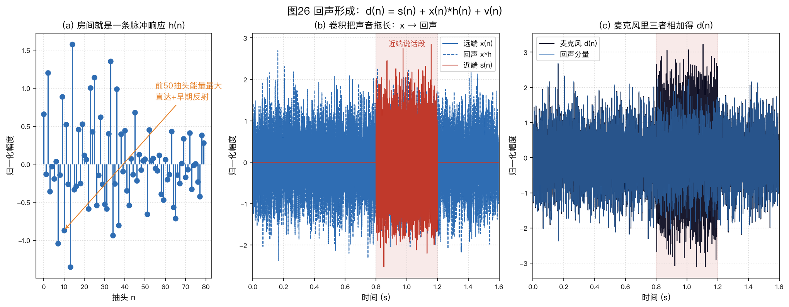
图26（a）的合成路径显式放置直达分量和若干早期反射，再叠加逐渐衰减的晚期尾声；这些成分只用于说明卷积结构，不代表某个实测房间。
图26（b）给出远端参考、卷积后的回声和 0.8～1.2 s 加入的合成近端干扰。该干扰取自白高斯随机样本，不是语音录音；图26（c）显示它们在麦克风信号 $d(n)$ 中叠加。AEC 根据参考估计回声分量，再从 $d(n)$ 中减去该估计。
$h[\ell]$ 表示从参考抽头到麦克风之间的线性等效路径，包括转换器、扬声器的小信号响应、声学传播和麦克风响应。它与 §2.4 的纯声学房间冲激响应有关，但还包含电声器件的线性响应，二者不能完全等同。滤波器所需覆盖时间应由目标设备的实测回声路径确定；16 kHz 下 1 ms 对应 16 个抽头，64 ms 对应 1024 个抽头。滤波器没有覆盖的晚期部分会留在残差中，再由残余回声抑制器处理。
四种工作场景（谈论任何 AEC 指标前先声明场景，否则数字没有意义）：
- 远端单讲（Single-Talk Far-End，STFE）：只有扬声器在响，$s(n)=0$，适合检查回声衰减；
- 近端单讲（Single-Talk Near-End，STNE）：只有用户在说话，回声路径没有激励，AEC 不应改变近端通道；
- 双讲（Double-Talk，DT）：两者同时存在。残差 $e$ 中含近端语音，继续更新会使路径估计偏离，残余抑制也可能损伤近端语音，控制方法见 §6.1.5；
- 双方沉默（idle）：回声与语音都没有。滤波器不应在纯噪声激励下持续漂移，残余抑制也不应把背景压成突兀的静音。测试矩阵应覆盖沉默期路径变化以及重新播放后的恢复过程（§6.1.9、§6.1.12）。
免提通话需要同时控制远端单讲时的残余回声和双讲时的近端语音损伤。远端单讲可用输入、输出功率近似回声返回损失增强（Echo Return Loss Enhancement，ERLE）；双讲的回声分量真值例外和统计口径见 §6.1.8。具体验收阈值应由目标场景、适用标准和主观听测确定。
主要难点（Breining et al. 1999 年的综述系统讨论了以下四项）：
- 冲激响应长：回声路径覆盖时间增加时，时域滤波器需要更多抽头，计算量增加，收敛也可能变慢；§6.1.3 说明分区频域方案怎样降低长滤波器的计算量；
- 非线性：微型扬声器与功放在大音量下可能产生线性卷积无法表示的分量，具体模型和参考取点见 §6.1.4；
- 双讲：参考与目标同时存在，近端语音会使自适应更新产生偏差，见 §6.1.5；
- 路径时变：人走动、门开关、设备被挪动都会改变等效路径 $h_n[\ell]$；参考具有足够激励时，滤波器需要更新以跟踪这些变化。Breining et al., IEEE Signal Processing Magazine 1999
边栏：温度如何搬动回声。
声速随温度变化 $v\approx331+0.61\,T$ m/s，$T$ 为摄氏温度。温度每变化 1 °C，声速改变约 0.18%；变化 10 °C，就是约 1.8%。对固定 1 m 路径，传播时延从 20 °C 的 $1/343.2\approx2.914$ ms 变为 30 °C 的 $1/349.3\approx2.863$ ms，缩短约 51 µs，在 16 kHz 下约 0.82 个采样。
反射路径长度各不相同，所以每条路径按自身长度产生不同的时延变化，并非整条冲激响应统一平移 50 µs。
Elko、Diethorn 与 Gänsler（IWAENC 2003）的实测表明，缓慢的热漂移会侵蚀已收敛 AEC 的性能。这是“路径时变”比较隐蔽、也无法靠出厂标定消除的一种形式。Elko, Diethorn & Gänsler, IWAENC 2003、Frontiers in Signal Processing 2024（温度对 AEC 影响的实测研究）
减法与乘法两类处理。AEC 有已知参考，可以估计回声的幅度和相位后做减法；相位估计错误时，减法也可能放大残余。降噪（§5.7）通常没有噪声波形参考，只能估计能量并施加 0～1 的增益。§6.1.9 的非线性处理（Nonlinear Processing，NLP）残余抑制和第 5 章的后置滤波都属于后一类方法。
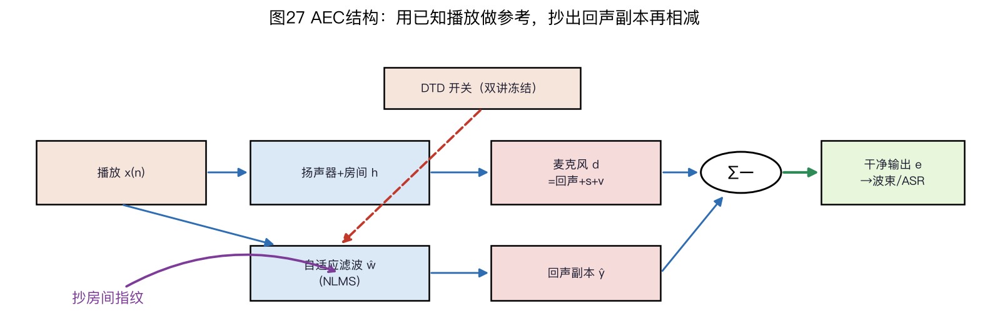
图27显示基本信号流：播放参考一支经过扬声器和房间进入麦克风，另一支进入自适应滤波器以估计回声路径。估计回声从麦克风信号中减去，双讲检测控制滤波器是否更新。
6.1.2 线性自适应滤波：NLMS 回顾
做法：用一个自适应滤波器 $\hat{\vec{w}}(n)$ 去模仿这条回声路径 $h[\ell]$，把参考信号过滤一遍得到“回声副本” $\hat y(n)$，再从麦克风信号里减掉：
先固定抽头顺序：$\vec{x}(n)=[x(n),x(n-1),\ldots,x(n-L+1)]^\top$ 是最近 $L$ 个参考样本，$\hat{\vec w}(n)=[\hat w_0(n),\ldots,\hat w_{L-1}(n)]^\top$ 是同样长度的实数系数向量，当前位置的样本对应第 0 个抽头。二者的内积才与式(6-1)的卷积索引一致。
$$e(n) = d(n) - \hat{\vec{w}}^{\top}(n)\,\vec{x}(n)$$
滤波器当前的路径估计作用于播放参考，产生估计回声；$e(n)$ 是麦克风样本 $d(n)$ 与估计回声之差。远端单讲、参考充分激励且线性模型匹配时，残差功率下降可以支持路径估计改善；单个样本或高度相关参考上的低残差，并不保证系数接近真实路径。抽头数须结合采样率、参考到麦克风的纯延迟、实测路径覆盖时间和可接受残余确定。
经典更新算法是归一化最小均方（Normalized Least Mean Squares，NLMS）：
$$\hat{\vec{w}}(n+1) = \hat{\vec{w}}(n) + \mu\,\frac{e(n)\,\vec{x}(n)}{\|\vec{x}(n)\|^2 + \varepsilon}\text{。}\tag{6-2}$$
更新量与残差和输入向量成正比，并由输入能量归一化。$\varepsilon$ 防止静默时分母接近零。若实现为了手算或节省运算而省略 $\varepsilon$，必须另设零能量保护：$\|\vec x(n)\|^2=0$ 时跳过更新，不能计算未定义的 $0/0$。
这个更新式怎么来的（三步）：
- 定目标：想让残差功率最小。最直接的瞬时目标 $J(n) = e(n)^2$，对 $\hat{\vec{w}}$ 求梯度：$\dfrac{\partial J}{\partial \hat{\vec{w}}} = -2\,e(n)\,\vec{x}(n)$（因为 $e = d - \hat{\vec{w}}^\top\vec{x}$，链式法则一步得出）；
- 最速下降：沿负梯度方向走一小步 $\hat{\vec{w}} \leftarrow \hat{\vec{w}} + \mu'\,e(n)\,\vec{x}(n)$，得到最小均方（Least Mean Squares，LMS）算法；
-
归一化步长：固定步长 $\mu'$ 对输入幅度敏感，幅度较大时可能发散，较小时又会减慢收敛。NLMS 用 $\|\vec{x}(n)\|^2+\varepsilon$ 对更新归一化，$\varepsilon$ 是防止静音时除以零的小正数。
当线性路径在观察期固定、参考充分激励、没有近端干扰，并忽略正则项时，同一样本的后验误差缩放为 $1-\mu$；因此 $0\lt \mu\lt 2$ 使这个单步误差幅度减小。
它不是任意有色参考、噪声、双讲和时变路径下的统一均方稳定保证。$\mu=1$ 只对应同一帧给定输入下的瞬时最优，并非统计最优。实际步长要在目标参考信号、双讲控制和路径变化条件下扫描；图 18（b）的本书仿真使用 $\mu=0.5$。
算例 6-1：NLMS 的一步手算
题设：3 抽头滤波器，参考向量 $\vec{x}(n)=[1,\ 0.5,\ -0.5]^\top$（最近 3 个播放样本），当前滤波器 $\hat{\vec{w}}(n)=[0,\ 0,\ 0]^\top$（零初值），麦克风信号 $d(n)=0.8$，步长 $\mu=0.5$，$\varepsilon$ 很小先忽略。按式(6-2)更新一步。
第 1 步：算回声副本与残差。$\hat y(n)=\hat{\vec{w}}^\top(n)\vec{x}(n)=0\times1+0\times0.5+0\times(-0.5)=0$——滤波器还是零，回声一点没被减掉，残差 $e(n)=d(n)-\hat y(n)=0.8$ 就是全部。
第 2 步：算归一化因子。$\|\vec{x}(n)\|^2=1^2+0.5^2+(-0.5)^2=1.5$。用输入能量归一化后，播放幅度增大时分母也随之增大，可降低固定步长对输入幅度变化的敏感性。
第 3 步：算更新量、更新滤波器。
$$\mu\,\frac{e(n)}{\|\vec{x}(n)\|^2}\,\vec{x}(n)=\frac{0.5\times0.8}{1.5}\begin{bmatrix}1\\0.5\\-0.5\end{bmatrix}=\frac{0.4}{1.5}\begin{bmatrix}1\\0.5\\-0.5\end{bmatrix}\approx\begin{bmatrix}0.267\\0.133\\-0.133\end{bmatrix}$$
$$\hat{\vec{w}}(n+1)=[0,\ 0,\ 0]^\top+\Delta\vec w\approx[0.267,\ 0.133,\ -0.133]^\top$$
这里 $\Delta\vec w$ 就是上式算出的更新向量。
这一步只修正了当前输入方向上的误差；其他方向需要后续不同的输入向量提供梯度信息。更新方向与 $\vec{x}(n)$ 平行。
第 4 步：用更新后的系数重算回声副本。
$$\begin{aligned} \hat y'(n)&=\hat{\vec{w}}^\top(n+1)\vec{x}(n)\\ &=0.267\times1+0.133\times0.5+(-0.133)\times(-0.5)\\ &\approx0.267+0.067+0.067\approx0.4 \end{aligned}$$
新残差 $e'(n)=0.8-0.4=0.4$。把更新式代回残差可得 $e'(n)\approx(1-\mu)\,e(n)$，因此 $\mu=0.5$ 时同一帧的后验残差减半；$\mu=1$ 时到达该帧的瞬时最优。连续输入上的多次更新使滤波器逐步收敛。
$e'\approx(1-\mu)e$ 的推导。 把更新式代回同一帧的残差：
$$\begin{aligned}e'(n)&=d-\hat{\vec{w}}^\top(n+1)\vec{x}\\&=[d-\hat{\vec{w}}^\top(n)\vec{x}]-\mu\,e(n)\,\frac{\vec{x}^\top\vec{x}}{\|\vec{x}\|^2+\varepsilon}\\&=e(n)\left[1-\mu\,\frac{\|\vec{x}\|^2}{\|\vec{x}\|^2+\varepsilon}\right]\end{aligned}$$
$\varepsilon\ll\|\vec{x}\|^2$ 时方括号约等于 $(1-\mu)$，即 $e'(n)\approx(1-\mu)e(n)$。$\mu=1$ 时 $e'\approx0$，只表示本帧给定 $\vec{x}$ 下的瞬时最优；下一帧输入变化后仍需继续更新。$\mu=0.5$ 时本帧残差减半。$\mu=1.8$ 时 $e'\approx-0.8e$，残差变号且幅度仍为原来的 80%；$\mu=2$ 对应幅度不减的临界情况。
第二个手算例（换一组数，验证“减半”不是巧合）：$\vec{x}=[0.8,-0.4,0.4]^\top$，$d=0.6$，$\hat{\vec{w}}(n)=0$，$\mu=0.5$。
$\|\vec{x}\|^2=0.64+0.16+0.16=0.96$，更新量 $=0.5\times0.6/0.96\times\vec{x}=[0.25,-0.125,0.125]^\top$。重算得到
$$\begin{aligned} \hat y'&=0.25\times0.8+(-0.125)\times(-0.4)+0.125\times0.4\\ &=0.2+0.05+0.05=0.3\text{，} \end{aligned}$$
新残差为 $0.6-0.3=0.3$。
残差同样减半，说明规律 $e'\approx(1-\mu)e$ 与这组具体数字无关。
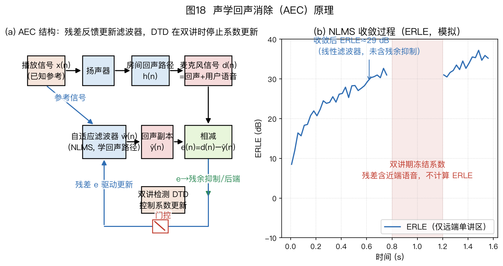
图18（a）给出整体结构；（b）给出 NLMS 在模拟回声路径上的收敛曲线。仿真取 $\mu=0.5$，回归向量按 $\vec x(n)=[x(n),x(n-1),\ldots,x(n-L+1)]^\top$ 排列，与生成回声的卷积索引一致，不额外引入一拍延迟。图中标注的是固定随机种子下 $0.45\lt t\lt 0.8$ s 远端单讲窗口的 ERLE 均值；粉色区域表示双讲期间冻结更新，该区间不统计 ERLE。
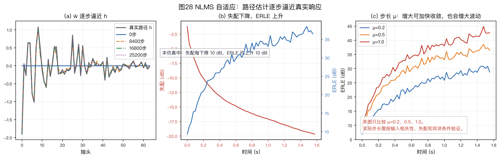
图28（a）显示 $\hat{\vec{w}}$ 从零开始逐步逼近真实路径 $h$。（b）显示本次仿真中，系数欧氏失配下降时 ERLE 总体上升；两者不是互为相反数，因为有色输入下的残余功率还由输入协方差加权，纵轴也使用不同统计口径。（c）比较不同步长在有限观察时段内的收敛轨迹。
本图使用固定、完全可表示的线性路径，没有近端语音或噪声，因此不能从曲线起伏推出含噪系统的稳态失调。较大步长在含噪时可能增加稳态误差，须另在固定噪声和统计窗口下测试；$\mu\in(0,2)$ 也不是实际系统的无条件稳定范围。
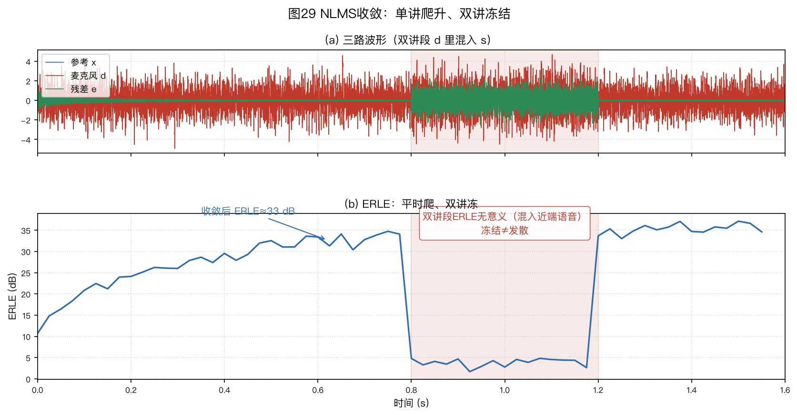
图29上方三行使用共同尺度的均方根包络，分别显示参考 $x$、麦克风信号 $d$ 和残差 $e$。粉色区域加入合成近端干扰，所用白高斯随机样本不是语音录音；此时残差含干扰，不能用输入/输出总功率评价回声抵消量，因此 ERLE 曲线在该区间不绘制。
滤波器在该区间冻结更新，之后继续沿原路径工作。图28中的“0步”曲线表示更新前的全零初值；后续编号表示已完成的更新次数。
步长与正则项。 较大的 $\mu$ 通常使初期收敛较快；在有观测噪声、近端干扰或路径变化时，也可能增大稳态失调和误更新。图28的无噪声仿真不能单独证明后一项。
$\varepsilon$ 防止静默时分母趋近于零。固定下限与随参考功率缩放的正则项使用不同量纲和归一化口径，不能照搬同一个数值。可扫描静音、低电平参考和正常播放三类输入，选择既不在静音时产生大更新、又不过度减慢小信号收敛的取值。
收敛还需要充分激励。NLMS 每步只能沿当前输入方向 $\vec{x}(n)$ 修正（见算例 6-1 第 3 步）。纯音或窄带参考不能充分激励所有滤波器系数，未被激励的方向会收敛得很慢。调试时可用已知宽带测试信号检查滤波器是否能辨识目标路径；这项测试不能代替真实节目内容上的收敛与双讲验证。
单位脉冲是一个容易混淆的边界例子。对 $L$ 抽头回归器，单个单位脉冲会依次产生 $L$ 个标准基向量，因此方向并不缺失；但每个方向只更新一次。若 $\mu=0.5$、初值为零且忽略非零 $\varepsilon$ 的微小影响，每个抽头只走到真实值的一半。要继续逼近真实路径，需要重复脉冲或其他持续激励；输入归零后应按上面的零能量规则跳过更新。
6.1.3 工程化自适应：频域、子带、比例、RLS 与卡尔曼
时域实现的计算量。若每个样本重新计算长度 $L$ 的参考能量，时域 NLMS 的滤波、更新和能量求和各约需 $L$ 次乘法，即朴素实现约 $3L$ 次。参考窗口每次只移入、移出一个样本时，也可递推能量 $p_n=p_{n-1}+x[n]^2-x[n-L]^2$，使这一项每样本只需常数次运算；滤波与更新仍约需 $2L$ 次乘法。
$L=1024$、8 kHz 时，朴素口径约为 2500 万次乘法/秒，能量递推口径的主要项约为 1600 万次/秒；两者都不含内存访问和控制开销。能量递推需按启动零填充初始化，并在长时浮点运行中定期核对直接求和，避免累计舍入误差。
48 kHz、4096 抽头时主要项达到每秒数亿次；抽头越多、输入频谱越不均匀，收敛通常越慢。常见改进包括频域分块、子带处理、比例步长和卡尔曼估计。
以 $L=3$、参考样本依次为 $1,2,3,4$ 为例，前一窗口能量 $1^2+2^2+3^2=14$；移入 4、移出 1 后得到 $14+4^2-1^2=29$，与直接计算 $2^2+3^2+4^2=29$ 一致。递推只减少分母的重复求和，不减少回声估计和系数更新的 $L$ 个抽头运算。
PBFDAF：从长回声路径到逐块更新
分区块频域自适应滤波（Partitioned-Block Frequency-Domain Adaptive Filtering，PBFDAF）沿用多延迟块频域（Multidelay Block Frequency-Domain，MDF）方法的思路，把 $L$ 个抽头分成 $P=\lceil L/N\rceil$ 个长度为 $N$ 的分区，并用长度 $2N$ 的快速傅里叶变换（Fast Fourier Transform，FFT）完成重叠保存卷积。最后一个分区若不足 $N$ 个真实抽头，缺少的位置补零；补零不是新增可学习的声学路径。
先固定索引：第 $m$ 块新到的 $N$ 个参考样本是 $b_m=[x[mN],\ldots,x[mN+N-1]]$，负时间样本为零。将上一块和本块接起来，$u_m=[b_{m-1},b_m]$，它长 $2N$；令 $X(k,m)=\operatorname{FFT}_{2N}(u_m)$。把真实路径的第 $p$ 段 $h_p=[h[pN],\ldots,h[pN+N-1]]$ 补成 $[h_p,0_N]$，其频谱记为 $W_p(k,m)$。$m$ 是块号，$p$ 是路径分区号，$k=0,\ldots,2N-1$ 是频点号；$X$、$W$、下文的 $E$ 都是复数。实际算法的 $W_p$ 是随块更新的估计，不预先知道 $h_p$。
| 时域路径的位置 | 使用的参考谱 | 它在本块输出中代表什么 |
|---|---|---|
| $p=0$，抽头 $0,\ldots,N-1$ | $X(k,m)$ | 当前及紧邻的参考样本 |
| $p=1$，抽头 $N,\ldots,2N-1$ | $X(k,m-1)$ | 再早一个分区的参考历史 |
| $p=P-1$，最后 $N$ 个位置 | $X(k,m-P+1)$ | 长回声尾部；末分区可能补零 |
所以“第 $p$ 个频域抽头”不是一个额外的物理麦克风或单个时域抽头，而是一整段时域路径与延迟 $p$ 块的参考谱配对。每来一个新块只需变换一次 $u_m$，旧谱移入历史；即使冻结权重更新，参考历史也不能冻结，否则下一块的回声预测就会错位。
预测先于更新。 用本块开始时的旧权重计算 $Q_m(k)=\sum_{p=0}^{P-1}W_p(k,m)X(k,m-p)$，再作 $q_m=\operatorname{IFFT}_{2N}(Q_m)$。这里只取 $q_m$ 的后 $N$ 点作为本块回声预测 $\hat y_m$；令有效麦克风块为 $d_m$，先验残差是 $e_m=d_m-\hat y_m$。前 $N$ 点含循环折回，不是本块的另一组有效输出。只要每段权重的逆变换后 $N$ 点为零，这一有效区预测就与长度 $L$ 的直接时域 FIR 卷积相同。算例 6-3 会逐项复算。
误差放在哪里也有讲究。 把有效误差排成 $[0_N,e_m]$，再作 $E(k,m)=\operatorname{FFT}_{2N}([0_N,e_m])$。若直接用整块循环输出谱与观测谱相减，前半块的循环折回会混入梯度。
以固定的、没有逐频归一化的情形看，$\operatorname{IFFT}_{2N}(X^*(k,m-p)E(k,m))$ 的前 $N$ 点，就是该分区合法抽头的块误差相关方向；后 $N$ 点是循环相关形成的非法位置，不能当作同一条长度 $L$ 的 FIR 抽头。
这里的“相关方向”还不是逐样本时域 NLMS 的更新：它汇合一块的 $N$ 个误差，归一化和更新时机也不同。Shynk 1992，§IV、图 5 和式(24)、(30)区分了有效区选择与约束。
有时同一更新被称为“频域多抽头 NLMS”：固定一个频点，抽头是当前及过去 $P-1$ 个参考块的频谱值，分别对应长时域滤波器的 $P$ 个分区。它不是本节前面那个每来一个时域样本就更新一次的 $L$ 抽头 NLMS；也不能仅凭“频域多抽头”四个字断定使用了哪种分块、窗函数和误差约束。
每块的频域滤波和梯度相关都要遍历 $P$ 个分区，因此不能只写成 $O((L/N)\log N)$。忽略实现常数时，无梯度约束版本每个新样本约为 $O(\log N+L/N)$；若每个分区都做时域梯度约束，还会增加约 $O((L/N)\log N)$。FFT 的固定成本随块长对数增长，分区乘法则随 $L/N$ 线性增长。
具体倍数还取决于实数或复数 FFT、频谱共轭对称复用、功率估计、约束频率以及一次乘加如何计数，不能脱离这些约定比较。KU Leuven DSP-CIS 讲义第 13 章
算例 6-2：PBFDAF 选定核心算子的乘法计数（$L=1024$、$N=128$、8 kHz；这是理论分项账，不是完整程序计时）
时域 NLMS 的账：每样本滤波 $L$ 次乘法、更新 $L$ 次；朴素重算功率再加 $L$ 次，共约 $3L=3072$ 次乘法/样本。若按上文滑动窗口递推参考能量，主要项是 $2L=2048$ 次，另有常数次标量运算；递推版本与下面的朴素版本应分别比较。
PBFDAF 的账：块长 $N=128$，FFT 长度取 $2N=256$（overlap-save 结构，防循环卷积混叠），分区数 $P=L/N=8$。每来一块 128 个新样本，要做的活是：
- 新参考块算 1 次 FFT——旧分区的频谱整体平移复用，不必重算，这是“分区”省钱的根源；
- 8 个分区各做一次长度 256 的复数相乘（滤波 = 频域相乘），合起来做 1 次逆快速傅里叶变换（Inverse Fast Fourier Transform，IFFT）得到输出块；
- 误差块 1 次 FFT，8 个分区各做一次共轭相关复乘（梯度方向）；
- 若对每个分区施加时域梯度约束，要把该分区的频域梯度做 IFFT、把无效的后半段清零，再 FFT 回频域，因此每个分区增加一对变换；无约束版可省掉这一步，间歇约束版则按实际约束频率折算。
为使下面的算术可逐项复算，只统计变换与预测、相关中的复乘：不利用实信号频谱的共轭对称，把每次 $2N$ 点变换按完整复 FFT 估计为 $4N\log_2(2N)=4\times128\times8=4096$ 次实乘法，长度 256 的逐点复乘按 $256\times4=1024$ 次实乘法计。这是选定算子的部分计数，不是全算法实乘法上界。实际实 FFT 只需保存 $N+1=129$ 个独立频点，若复用共轭对称，FFT 和逐点乘法都应按具体库重新计数，不能沿用下面的 4096 和 1024：
- 无约束版：$3\times4096 + 2\times8\times1024 = 12288+16384=28672$ 次/块 → 每样本 $28672/128\approx224$ 次；
- 逐分区约束版：再加 $2\times8\times4096=65536$，共 $94208$ 次/块 → 每样本约 736 次。
如果像本书教学代码那样每块对全部 $P$ 个复频谱重新求 $|X|^2=(\Re X)^2+(\Im X)^2$，至少还要 $2\times256\times8=4096$ 次实乘法/块，即 32 次/样本。把这一项加进同一全复频点口径，以上两项分别成为 256 和 768 次/样本；仍未计功率求和、分母除法、步长缩放、加法、缓存读写和控制逻辑。平滑功率或递推功率的成本又不同。本书教学代码即使关闭约束，也会为输出“约束前候选系数”做逐分区 IFFT，故这里的无约束算子账尤其不能当作该 Python 程序的实际运算量。
仅就共同列出的主要乘法项，224/736 与朴素时域 NLMS 的 3072 相比分别约差 14 倍和 4.2 倍；与递推能量版本的 $2L=2048$ 次主要项相比，约差 9.1 倍和 2.8 倍。补入上述重算功率项后，这些部分计数比值还会变化。时域与频域两边都未计全套操作，更未测缓存、向量化和处理器行为，不能把这些比值称为产品加速比。
这些数不能当作实 FFT 库的操作数或实测速度。若约束不是每块、每分区都执行，平均开销会降低，报告时要注明约束周期；但不能把“少约束”误写成“少更新分区”。
以上倍数只针对本算例的逐样本时域 NLMS。若比较对象已经采用相同块长、分区数、FFT 长度、归一化和约束策略的频域多抽头 NLMS，它与这里的 PBFDAF 执行同类运算，不能因为名称不同而宣称 PBFDAF 另有计算量或延迟收益。短分区可能减少未分区长块频域方法等待输入成块的时间；端到端延迟仍要计入缓冲和调度。MathWorks 频域自适应滤波算法说明分别列出分区与非分区、约束与非约束实现。
块长 $N=128$、采样率 8 kHz 时，每块含 16 ms 新数据。第 $m$ 块的最后一个参考样本到齐后，才可形成这一块的完整输入、预测与先验误差；$2N=256$ 点 FFT 包含上一块的历史，不表示还要等待 32 ms 的新参考。输出本块 $N$ 点的调用时机、播放—采集对齐、设备缓冲与调度决定端到端延迟，单凭块长或 FFT 长度不能报固定值。滤波器加长时，时域主要成本按 $L$ 增长，分区频域的核心项按 $L/N$ 增长，但很短的路径和小块可能被变换与缓冲成本抵消。Soo & Pang 1990
例如固定 $L=4096$、采样率 16 kHz，改变块长只改变分区与变换的折中，不改变要表示的 4096 抽头路径：
| 新块 $N$（样本） | 分区 $P$ | FFT 点数 $2N$ | 每块新数据时长 | 状态/延迟解释 |
|---|---|---|---|---|
| 64 | 64 | 128 | 4 ms | 较短积累，更多分区乘法与状态 |
| 128 | 32 | 256 | 8 ms | 两种成本之间的一个候选点 |
| 256 | 16 | 512 | 16 ms | 较少分区，单次变换和新数据积累更长 |
这只是精确的样本数换算和方向性取舍，不是三种配置在某台设备上的测时，也不表示 $N$ 越大必然更省总算力。若改变分区约束频率、功率估计和缓存布局，最佳块长也可能改变；实际选择须连同播放/采集缓冲和端到端延迟一起测量。
算例 6-3：两个样本一块，为什么要丢掉前半块。 本书取 $N=2$、$P=2$、路径 $h=[1,2\mid3,4]$、参考 $x=[1,2,3,4]$，负时间样本为零。直接按式(6-1)卷积，前四个回声样本依次为 $[1,4,10,20]$。竖线只标示两段抽头的分区边界，不表示时域路径在这里中断。
第 0 块把两点新参考 $[1,2]$ 接在两点历史零之后，形成四点输入 $[0,0,1,2]$。它与首分区 $[1,2,0,0]$ 作四点循环卷积，只保留后两点 $[1,4]$；更早的分区历史为零。
第 1 块的四点输入是 $[1,2,3,4]$。它与首分区的四点循环卷积为 $[9,4,7,10]$，其中前两点已受到循环折回影响，必须丢弃。
后两点 $[7,10]$ 加上上一参考块 $[0,0,1,2]$ 与第二分区 $[3,4,0,0]$ 的有效后两点 $[3,10]$，得到 $[10,20]$。若第二分区错用当前块，或把前两点当作线性卷积结果，答案都会错。配套代码只复算这一段分区卷积，不冒充完整自适应 PBFDAF；误差反馈还须按下式另行处理。
PBFDAF 更新式。 记第 $m$ 块、第 $k$ 个频点的参考谱为 $X(k,m)$，第 $p$ 个分区的滤波器谱为 $W_p(k,m)$，误差谱为 $E(k,m)$，其中 $p=0,\ldots,P-1$。$\mu$ 是块更新步长，$\delta>0$ 是防止参考功率为零时除零的归一化地板。一种按全部分区参考功率归一化的候选更新写成
$$\widetilde W_p(k,m+1)=W_p(k,m)+\mu\,\frac{E(k,m)\,X^*(k,m-p)}{\sum_{q=0}^{P-1}|X(k,m-q)|^2+\delta}\text{。}\tag{6-3}$$
分区 $p$ 使用延迟了 $p$ 个块的参考 $X(k,m-p)$；若省略该下标，公式就只描述单分区 FDAF。与时域 NLMS 相比，分子仍是“误差 × 参考共轭”，分母仍做参考功率归一。
实际重叠保存实现只把每块线性卷积的后 $N$ 个输出作为有效残差。以上面 $N=2$ 的第 1 块为例，若两个有效先验误差为 $[e_2,e_3]$，构造四点误差谱时先排成 $[0,0,e_2,e_3]$ 再做 FFT；不能把循环污染区的输出当成新观测。这里的 $E(k,m)$ 是用旧滤波器产生的这类先验误差谱。文献和代码也会为每个分区维护独立平滑功率，比较实现时必须核对归一化定义。
为什么是共轭与功率和？ 对固定频点，预测谱是 $\sum_p W_pX_{m-p}$；改变复权重时，减小平方残差的相关方向含 $X_{m-p}^*E$。各分区同时作用于同一频点的预测，所以分母汇总它们的参考功率，而不是每个分区单独拿自己的 $|X_{m-p}|^2$ 去除。$\delta$ 和 $\mu$ 的数值依赖 FFT 缩放与功率定义；式(6-3)是本书选定的瞬时逐频预条件候选式，并非所有名为 PBFDAF 的论文、库都原样使用它，也不能把常用的 $0\lt \mu\lt 2$ 当作任意有色输入、双讲和控制器下的稳定性定理。
无梯度约束时，式(6-3)的候选值就是下一块权重 $W_p(k,m+1)$。若执行时域梯度约束，须对同一分区全部 $2N$ 个频点的候选权重做 IFFT、清零无效的后 $N$ 个时域抽头，再 FFT 回频域，才得到下一块权重；末分区若只有 $r\lt N$ 个真实抽头，连第 $r$ 到 $N-1$ 个补零位置也须清零。此投影跨频点耦合，不能靠单个频点独立完成。完全不约束的版本可能有不同的稳态权重和误差，也不再有唯一的长度 $L$ FIR 系数解释。以 $N=128$、8 kHz 为例，每秒更新约 $8000/128\approx62.5$ 次；每次更新同时利用 128 个新样本，核心算子乘法账见算例 6-2。Shynk，IEEE Signal Processing Magazine 1992，§IV讨论频域更新的循环相关与梯度约束。
把一块完整处理写成执行顺序，有助于调试：
- 拼接上一块和当前块，计算并移入 $X_m$；
- 用旧权重和当前至过去 $P-1$ 个参考谱预测；
- 仅取 IFFT 后半块，与 $d_m$ 相减；
- 对 $[0_N,e_m]$ 做 FFT，求每频点的参考功率和式(6-3)候选；
- 按需投影每个分区，再提交新权重；
- 保存当前块供下一块使用。
冻结时跳过第 4、5 步的权重更新，不能跳过参考谱历史移位；静音时分母有地板也不意味着必须更新。
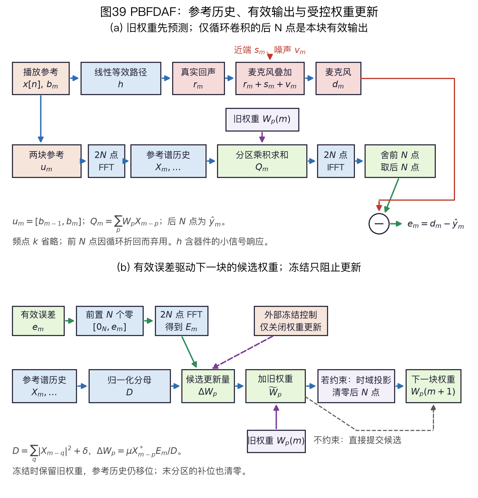
图39（a）把播放参考经线性等效声学路径形成真实回声、与近端和噪声合成麦克风输入的物理通路，和同一参考进入算法预测的数字通路分开。路径 $h$ 包括参考抽头之后可由线性 FIR 表示的器件及空间作用，不单指房间。预测支路的 $X_m,\ldots,X_{m-P+1}$ 是持续移位的参考谱历史，当前预测使用更新前的 $W_p(m)$。
图39（b）从有效误差产生候选，再选择投影或无约束旁路。紫色虚线冻结控制只阻止更新，不能停止预测与历史移位。
“预测输出前 $N$ 点弃用”和“候选权重后 $N$ 点清零”位于不同支路、服务于不同目的；末短分区的填充位置另须清零。这是结构示意，不表示实测消除量或端到端延迟。
频域多抽头 NLMS：抽头是什么，何时等于 PBFDAF
“频域多抽头 NLMS”是描述性叫法，先问抽头沿哪个维度排列，才能判断它指的是哪种算法。“多抽头”可能是多个参考块、多个 STFT 帧，也可能被用来泛指原先的时域 FIR 抽头；单靠名称不能确定预测、误差和更新。原始 MDF 与 PBFDAF 论文讨论分区结构，Shynk 1992，§IV区分频域块滤波的有效区与约束；这几项是比较实现的依据，而不是给一个含糊名称硬指定唯一公式。
第一种明确含义：每频点有 $P$ 个参考块延迟。 固定频点 $k$，把参考历史排成复数列向量 $\mathbf X_m(k)=[X(k,m),X(k,m-1),\ldots,X(k,m-P+1)]^\mathsf T$，把分区权重排成同为 $P\times1$ 的 $\mathbf W_m(k)=[W_0(k,m),\ldots,W_{P-1}(k,m)]^\mathsf T$。取有效输出前的原始块预测谱是 $\mathbf W_m(k)^\mathsf T\mathbf X_m(k)$；还须经 IFFT、舍弃前 $N$ 点，才得到本块的有效预测输出。式(6-3)逐分区合起来可写为
$$\widetilde{\mathbf W}_{m+1}(k)=\mathbf W_m(k)+\mu\frac{\mathbf X_m^*(k)E(k,m)}{\|\mathbf X_m(k)\|_2^2+\delta}\text{。}$$
这里 $*$ 对向量逐元素取共轭，预测采用转置而非共轭转置，因此更新中的参考要取共轭。这只是式(6-3)的候选向量重写，不是另一种算法。例如某一频点有 $P=2$、$\mathbf X=[1,2]^\mathsf T$、先验误差谱 $E=0.3$、$\mu=0.5$、$\delta=1$，分母为 $1^2+2^2+1=6$，两个分区的更新量分别为 $0.5\times0.3\times1/6=0.025$ 和 $0.5\times0.3\times2/6=0.05$。这些无量纲数只是核对式(6-3)的单频点算术，不代表由真实块信号形成的完整共轭对称频谱；约束后的更新也不等于 $2N$ 条互不影响的复 NLMS。
把“看起来像 NLMS”与“真的优化了什么”分开，可避免误用。令 $F$ 为 $2N\times2N$ 的正向 DFT 矩阵，$F^{-1}$ 为带 $1/(2N)$ 缩放的逆变换；$S=[0_{N\times N}\ I_N]$ 取时域后半块，$U=[I_N\ 0_{N\times N}]^\mathsf T$ 把每段 $N$ 抽头补零。设 $Q_m=\sum_p W_{p,m}\odot X_{m-p}$，$\odot$ 表示逐频相乘，那么本块预测为 $\hat y_m=SF^{-1}Q_m$。零填充后的正确误差谱是
$$E_m=F S^\mathsf T(d_m-SF^{-1}Q_m)=D_m-CQ_m,\quad D_m=FS^\mathsf Td_m,\quad C=FS^\mathsf TSF^{-1}\text{。}$$
$S^\mathsf T$ 在前 $N$ 点补零；$C$ 是从完整循环块取有效区、再补零回频域的投影，通常不是频点逐个独立的对角矩阵。所以 $E_m$ 一般不是 $D_m-Q_m$。这不是实现细节：若把前半块污染也放入谱误差，真实路径已完全匹配时仍可能产生假梯度。
再令 $w_p\in\mathbb R^N$ 是第 $p$ 段合法时域抽头。固定本块旧权重时，该段从 $w_p$ 到有效输出的线性算子是 $A_{p,m}=SF^{-1}\operatorname{diag}(X_{m-p})FU$，形状为 $N\times N$。对本块目标 $J_m=\tfrac12\|d_m-\sum_pA_{p,m}w_p\|_2^2$，真实的块梯度方向为 $-\nabla_{w_p}J_m=A_{p,m}^{\mathsf H}e_m$；按上面的 DFT 缩放化简，就是 $\operatorname{IFFT}(X_{m-p}^*\odot E_m)$ 的前 $N$ 点。这里 $\mathsf H$ 是共轭转置；输入为实时域信号时，合法部分的虚部仅应有浮点舍入量。读者可用 $N=2$ 的算例 6-3 核对索引和共轭。Shynk 1992，§IV，式(20)～(24)、(30)给出这一类有效区与梯度约束结构。
如果不作逐频预条件，且每块对全部分区施加合法抽头投影，上述 FFT 只是高效计算块 LMS 梯度；一块内所有误差仍由同一组旧权重产生，不会变成逐样本更新的 NLMS。若再用一个共同标量归一化，得到的是相应的块归一变体。
式(6-3)把各频点分别除以 $R_m(k)=\sum_q|X(k,m-q)|^2+\delta$，即频域对角预条件；它不等于上述有效区目标的精确 Hessian 逆，也没有消除同一频点内 $P$ 个历史参考之间的全部相关性。
投影 $G=FU U^\mathsf TF^{-1}$ 还把频点重新混合；$G$ 与逐频 $R_m(k)^{-1}$ 一般不能交换。因此“每频点的 $P$ 抽头复 NLMS”只说明候选式的代数形状，不是完整受约束 PBFDAF 由 $2N$ 套独立 NLMS 构成。MathWorks 频域自适应滤波算法说明也把分区、非分区及约束选择分别列出。
同一个具体实现需要的条件。 两种叫法都用 $N$ 点新样本、$2N$ 点重叠保存变换，历史频谱抽头对应同一条 $L$ 抽头时域 FIR 的 $P$ 个分区，并使用相同的有效误差、功率分母、步长与约束策略时，预测和更新才逐块对应。
固定每个分区只有前 $N$ 个有效时域系数时，频域乘积之和经 IFFT、丢掉前 $N$ 个受循环折回影响的样本，后 $N$ 个输出与直接时域线性卷积相同；算例 6-3 已用 $N=P=2$ 复算输出关系。这里的相同是本书对齐约定下的代数关系，不保证不同 FFT 库的浮点结果逐位一致。Shynk 1992，§IV给出重叠保存、有效区误差与约束的关系。
同形更新式不保证运行轨迹相同。 复现时还须核对 FFT 正反变换的缩放、块边界和初始历史、瞬时或平滑功率、$\delta$ 与 $\mu$ 的实际尺度、双讲时的冻结或连续控制，以及梯度约束的时机。
重叠保存先在时域取后 $N$ 个有效残差，再将 $[0_N,e_{\mathrm{valid}}]$ 变换成 $E$；不能用未经有效区选择的整块循环卷积频谱直接作 $D-\hat Y$。若定义 $D=\operatorname{FFT}([0_N,d_{\mathrm{valid}}])$、$\hat Y'=\operatorname{FFT}([0_N,\hat y_{\mathrm{valid}}])$，其中 $d_{\mathrm{valid}}$ 是本块的有效麦克风观测，$\hat y_{\mathrm{valid}}$ 是有效回声预测，才有 $E=D-\hat Y'$。无梯度约束仍是合法变体，但其循环相关更新和稳态行为可能不同于约束版。Shynk 1992，§IV、图 5 及式(30)。
已匹配路径却被错误更新的四点检查。 取 $N=2$、单分区合法抽头 $[1,2]$ 和重叠输入 $[1,2,3,4]$。四点循环卷积是 $q=[9,4,7,10]$，有效输出只有 $[7,10]$。若麦克风有效块正好是 $d=[7,10]$，则正确先验误差 $e=[0,0]$、$E=0$，任何合理的误差驱动更新都应停下。若错误地计算 $F[0,0,7,10]-Fq=F[-9,-4,0,0]$，频域误差却非零；这正是漏掉有效区投影 $C$ 的后果，不是 FFT 舍入误差。
| 叫法或实现 | “抽头”与更新时刻 | 与本书 PBFDAF 的关系 |
|---|---|---|
| 逐样本时域 NLMS | $L$ 个样本级时延；每个样本的先验误差后更新 | 同一 FIR 目标，但块内更新轨迹不同 |
| 时域块 LMS／共同标量归一变体 | $L$ 个样本级时延；整块误差由旧权重生成，块末更新 | 未逐频预条件的受约束 FFT 实现可计算同一块梯度 |
| 单分区频域块滤波 | $P=1$；用较长的 FFT 处理整条短路径 | 是分区结构的退化情况；长路径大块可能增加积累时间 |
| 分区重叠保存的频域多抽头 NLMS | 每个频点有 $P$ 个参考块历史；式(6-3)作候选，按有效区及约束执行 | 输入、FFT、误差、分母、步长与投影均相同时，逐块就是本书 PBFDAF 教学变体 |
| 普通窗函数 STFT 同频跨帧滤波 | 每个频点有多个分析帧历史；分析/合成窗及帧移另定 | 更新形状可相似；一般不能仅据此声称等于同一时域 FIR |
这张表比较的是模型和更新规则，不按乘法量或收敛速度排名。第一行的 $L$ 个时域抽头与第四行的 $P$ 个频域块延迟不是不同长度的“同一数组”；前者直接表示各采样时延，后者每项代表一整段 $N$ 抽头路径。第四行要精确对应还必须保持块首历史、FFT 标度、末分区补零、冻结与约束时机一致。
SpeexDSP、WebRTC AEC3 虽有分区结构，也有不同的功率估计及更新控制；算法名字相近不推出相同权重轨迹。
算例 6-3 的自适应补充：两块更新怎样处理非法抽头。 另取 $N=P=2$、$L=4$、$\mu=0.5$、$\delta=1$，初始权重和负时间参考全零；参考 $x=[1,0,0,0]$、麦克风观测 $d=[1,0,2,0]$。这是为核对式(6-3)设计的无量纲输入，不是声学传播测量；第二块的 $d=[2,0]$ 也不被解释成固定物理回声路径的输出。
第 0 块的重叠保存输入为 $[0,0,1,0]$，其四点 FFT 为 $X_0=[1,-1,1,-1]$。旧权重全零，有效误差为 $[1,0]$，所以 $E_0=X_0$；每频点分母为 $|X_0|^2+\delta=2$。更新第一分区的四个频点后再 IFFT，时域候选为 $[0.25,0,0,0]$；第二分区此时没有历史参考，仍为零。
第 1 块新参考全零，但重叠保存输入是 $[1,0,0,0]$，故 $X_1=[1,1,1,1]$，历史 $X_0$ 仍须保留。先验预测为零，有效误差 $[2,0]$ 对应 $E_1=[2,-2,2,-2]$；每频点分母是 $|X_1|^2+|X_0|^2+\delta=3$。式(6-3)使第一分区的候选时域系数成为 $[0.25,0,1/3,0]$，第二分区成为 $[1/3,0,0,0]$。
第一分区的第 3 个位置是循环相关带来的非法抽头，逐分区梯度约束把各分区后 $N$ 点清零，最终 $L$ 抽头路径为 $[0.25,0\mid1/3,0]$。如果不做约束，候选中的 $1/3$ 会保留，不能再把这个频域状态直接称为四抽头 FIR。可运行版本和独立手算测试见分区自适应实验与测试；它只实现式(6-3)的瞬时功率教学变体，不复现 SpeexDSP 的 AUMDF 控制。
这个非法位置的索引是第一分区内的滞后 2，而第二分区的合法首抽头也对应整条路径的滞后 2；若都保留，它们对有效输出可以产生重叠表示。投影要维持“每一分区只含前 $N$ 个时域抽头”这一清楚的 FIR 解释。注意这里说的是梯度约束/权重投影；预测时舍弃循环卷积前半块是另一件事，两者都做并不重复。
算例 6-4：逐频归一化为什么不等于时域 NLMS。 取更小的单分区问题：$N=2$、$P=1$、初值全零、$\mu=\delta=1$，当前重叠保存输入 $u=[0,0,1,2]$，有效麦克风块 $d=[1,0]$。旧权重为零，所以有效先验误差也是 $e=[1,0]$。按 NumPy 所用的正变换负指数、逆变换除以 4 的约定，四点谱和候选更新逐项为：
| $k$ | $X(k)$ | $E(k)$ | $|X(k)|^2+1$ | $X^*(k)E(k)/(\lvert X(k)\rvert^2+1)$ |
|---|---|---|---|---|
| 0 | $3$ | $1$ | $10$ | $3/10$ |
| 1 | $-1+2\mathrm j$ | $-1$ | $6$ | $(1+2\mathrm j)/6$ |
| 2 | $-1$ | $1$ | $2$ | $-1/2$ |
| 3 | $-1-2\mathrm j$ | $-1$ | $6$ | $(1-2\mathrm j)/6$ |
对最后一列作四点 IFFT，候选时域系数为 $[1/30,1/30,-2/15,11/30]$；将后两点清零后，合法的两抽头成为 $[1/30,1/30]$。若先不逐频除以不同的分母，$\operatorname{IFFT}(X^*E)=[1,0,0,2]$，合法梯度是 $[1,0]$；无论再除以哪一个共同标量，第二个合法抽头仍为零。
逐频功率预条件改变了更新方向，时域投影又把频点耦合起来。因此本书 PBFDAF 不是逐样本时域 NLMS 的“完全相同结果、只是更快”，也不一般等于单一标量归一化的时域块 NLMS。这个反例只比较一次无量纲更新，不给出哪种方法收敛更快的证据。
算例 6-5：预测残差很小，不一定辨识了路径。 固定种子实验以独立的直接时域卷积生成无噪声观测，真实九抽头路径为 $[0,0,0.7,-0.2,0.08,0,0,0,0.05]$；教学 PBFDAF 取 $N=16$、$L=9$、$\mu=0.3$、$\delta=0.05$。一组训练参考是独立标准正态宽带样本，另一组是每 8 点一周期的纯音。两组各训练 4096 点，再冻结权重，用同一段 1024 点独立宽带参考留出测试。
随机种子为 2094；两条件不是随机重复试验，因此下表只描述这一组样本，不附置信区间。
| 训练参考 | 训练末 1024 点先验残差均方 | 训练后相对路径误差 $\|\hat h-h\|_2/\|h\|_2$ | 冻结宽带留出残差均方 |
|---|---|---|---|
| 宽带白噪声 | $4.03\times10^{-27}$ | $3.27\times10^{-16}$ | $7.52\times10^{-32}$ |
| 周期 8 点纯音 | $1.11\times10^{-8}$ | $0.868$ | $0.382$ |
三列均为无量纲数；接近机器精度的项只说明此双精度无噪声算例近乎精确，不能解释为设备精度。纯音只激励有限的频率方向，即使训练残差已很小，系数仍可能远离真实路径，换宽带输入后失配才显露。这个例子解释为什么调试要同时看参考激励、路径误差（有真值时）与留出场景，而不能只看一个训练段的输入/输出功率；它不是工业 ERLE、真实录音结果或收敛速度排名。
第二种明确含义：普通 STFT 域的同频跨帧抽头。 对一般短时傅里叶变换（Short-Time Fourier Transform，STFT），分析窗、合成窗与帧移决定了每帧频谱。若某频点只使用自己的过去帧，忽略窗函数与下采样带来的跨频带项，更新式仍可能与式(6-3)同形，却未必逐样本表示同一条时域 FIR。Avargel 与 Cohen，IEEE Transactions on Audio, Speech, and Language Processing 15(4)，2007，§II、式(7)～(11)给出一般 STFT 卷积的跨频带项。
即使使用可完美重建的两点、无重叠矩形 DFT，反例也很小：令真实路径是一拍延迟 $y[n]=x[n-1]$，记第 $m$ 帧两频点输入为 $X_{0,m}=x[2m]+x[2m+1]$、$X_{1,m}=x[2m]-x[2m+1]$。输出的零频点等于
$$Y_{0,m}=\tfrac12\bigl(X_{0,m-1}-X_{1,m-1}+X_{0,m}+X_{1,m}\bigr)\text{。}$$
它同时依赖 $X_1$，所以只让零频点使用零频点历史就漏掉了真实时域路径的一部分；下文两带 Haar 的一拍延迟反例从另一组归一化约定给出同样的跨带现象。这个反例不说明 STFT 同频模型永远不精确：在此无重叠矩形配置中，若路径只在整帧延迟 $qN$ 处有抽头，同频跨帧关系可以精确成立。使用哪种近似，要看窗、帧移、路径及容许误差，不能由“完美重建”或“多抽头”单独判断。
MDF、PBFDAF 指向分区块频域结构，不保证所有论文或产品都采用式(6-3)这一种功率归一化与步长控制。Páez Borrallo 与 García Otero 的 1992 年 PBFDAF 原论文摘要就说明其更新还考虑输入谱均匀度。上述等价判断只针对已明确输入、误差、归一化和控制方式的具体实现，不能扩展成所有同名变体完全一致。
对照固定版本工业源码时，还应把“每个分区是否更新”和“每个分区是否每块投影”拆开看。SpeexDSP mdf.c的 AUMDF 会逐分区计算权重更新，同时交替安排分区约束；这里的“交替”不能解释成其余分区那一块完全不学习。
WebRTC AEC3 固定版自适应滤波源码同样有分区更新与轮流约束，且其更新增益源码还按激励、饱和等条件控制增益，不等同于本书固定 $\mu$、瞬时功率分母的式(6-3)。
对应源码入口和复现实验步骤见研究手册 A02～A03；本书演示仅是可复算的教学基线。
子带 AEC：分带、交叉项与可辨识性
为什么分带。 一条长回声路径若在每个采样点更新，抽头数增加会同时推高计算量和输入相关性。子带方法先用分析滤波器组把播放参考 $x[n]$ 和麦克风观测 $d[n]$ 变成多个低采样率序列，再在这些序列上估计回声；估计结果经合成滤波器组回到全带。
比较两套实现时不能只看每带滤波器的乘法量。分析、合成、缓冲和对齐都进入总成本与端到端延迟。
先看一个能完整手算的分析—合成器。 本书用两点正交 Haar 变换作教学模型，块号为 $m$，同一块含 $x[2m]$ 与 $x[2m+1]$：
$$u_0[m]=\frac{x[2m]+x[2m+1]}{\sqrt2},\qquad u_1[m]=\frac{x[2m]-x[2m+1]}{\sqrt2}\text{。}$$
$u_0$ 是两点和，$u_1$ 是两点差；两路都按原采样率的一半更新。合成时，$x[2m]=(u_0[m]+u_1[m])/\sqrt2$，$x[2m+1]=(u_0[m]-u_1[m])/\sqrt2$。把两式代回可逐块精确还原原信号。这个可逆的两带小模型便于揭示子带之间的耦合，但它的两点窗并不是长原型滤波器组，不能据此推断实际音频子带 AEC 的混叠抑制、频率选择性或听感。
完美重建仍不保证独立每带滤波足够。 令真实回声路径只有一个非零抽头，位于原采样的一拍延迟处：$d[n]=x[n-1]$，负时间输入为零。对回声也作同一个 Haar 分析，得到 $v_0[m]$ 与 $v_1[m]$。由 $d[2m]=x[2m-1]=(u_0[m-1]-u_1[m-1])/\sqrt2$ 和 $d[2m+1]=x[2m]=(u_0[m]+u_1[m])/\sqrt2$，逐项相加、相减得到
$$\begin{aligned} v_0[m]&=\tfrac12\{u_0[m-1]-u_1[m-1]+u_0[m]+u_1[m]\},\\ v_1[m]&=\tfrac12\{u_0[m-1]-u_1[m-1]-u_0[m]-u_1[m]\}\text{。} \end{aligned}$$
两行都含 $u_0$ 与 $u_1$：即使原路径只有一个非零抽头，延迟跨过两点块边界后，输出高带也可能由输入低带产生。只让 $v_0$ 读取 $u_0$、$v_1$ 读取 $u_1$ 的对角子带模型便无法一般性地表示这条路径；每个输出带读取所有输入带的交叉子带模型可以表示。Gilloire 与 Vetterli 对临界采样子带自适应滤波的分析也指出了交叉滤波的重要性；本书的 Haar 例是独立的最小代数说明，不是他们实验结果的重现。原论文，IEEE Transactions on Signal Processing 40(8)，1992
锚点数例。 取 $x=[1,1\mid0,0]$，竖线隔开两点块。输入第 0 块的带值是 $(u_0,u_1)=(\sqrt2,0)$，第 1 块为 $(0,0)$；一拍延迟后 $d=[0,1\mid1,0]$，输出高带依次是 $v_1=[-1/\sqrt2,+1/\sqrt2]$。
如果高带滤波器只看始终为零的 $u_1$，任何有限系数都只能输出零，两个高带回声样本均漏掉。交叉模型按上式从低带取得它们。这个反例证明表示能力有差异；它不能证明交叉模型在有限数据、双讲或未知路径变化下总能更好地收敛。
从已知路径走到未知路径。 写 $H=2^{-1/2}\bigl[\begin{smallmatrix}1&1\\1&-1\end{smallmatrix}\bigr]$，则 $\vec u_m=H[x[2m],x[2m+1]]^\top$，麦克风两样本分析为 $\vec v_m=H[d[2m],d[2m+1]]^\top$。一个 $L$ 抽头的因果时域 FIR，能精确改写为 $K=\lfloor L/2\rfloor+1$ 个 $2\times2$ 块矩阵的映射 $\vec v_m=\sum_{k=0}^{K-1}G_k\vec u_{m-k}$，负块号的参考设为零。矩阵的行号是输出带，列号是输入带，$k=0$ 为当前块。
偶数延迟 $h_{2r}$ 只在第 $r$ 个时间块矩阵的两个相位对角线各加 $h_{2r}$。奇数延迟 $h_{2r+1}$ 同时把当前块的偶样本送到第 $r$ 个矩阵的输出奇相位，以及把上块奇样本送到第 $r+1$ 个矩阵的输出偶相位；再对每个相位矩阵左右乘 $H$，得到 $G_k$。这就是交叉项的来源。fir_crossband_matrices()按此规则计算，测试另用时域 np.convolve 核对 $L=1,2,3,4,7,12$ 的输出，而不是拿同一子带公式自证。
路径未知时，不预先把 $G_k$ 填成真值。令 $U_{j,k}(m)=u_j[m-k]$，估计权重 $W_{i,j,k}$ 形状为 $2\times2\times K$；其中 $i$ 是输出带，$j$ 是输入带。先用更新前的全部权重形成两个输出带的预测与先验误差，再用同一个包含两输入带历史的能量分母分别更新两行：
$$\begin{aligned} \hat v_i[m]&=\sum_{j=0}^{1}\sum_{k=0}^{K-1}W_{i,j,k}[m]U_{j,k}(m), &e_i[m]&=v_i[m]-\hat v_i[m],\\ W_{i,j,k}[m+1]&=W_{i,j,k}[m] +\mu\frac{e_i[m]U_{j,k}(m)}{\varepsilon+ \sum_{a=0}^{1}\sum_{b=0}^{K-1}U_{a,b}(m)^2}, &i,j&\in\{0,1\}\text{。} \end{aligned}\tag{6-4}$$
式(6-4)是本书两带、实数、单播放参考的全交叉块 NLMS 教学定义；$0\leq\mu\lt 2$、$\varepsilon>0$。残差两带经逆 Haar 合成为两个时域样本。
冻结某块时，只跳过权重更新，仍把该块参考推进历史；这里的冻结标记由调用方提供，没有实现双讲检测。两点成块必须等第二个样本到来，因果流至少有一个采样的成块等待；代码要求调用方对齐播放与麦克风时间轴。
一步手算。 仍用 $x=[1,1\mid0,0]$、$d=[0,1\mid1,0]$，令 $K=2$、$W=0$、$\mu=1$、$\varepsilon=1$。第 0 块只有 $U_{0,0}=\sqrt2$ 非零，$\vec v_0=[1/\sqrt2,-1/\sqrt2]^\top$；先验预测为零，分母是 $1+(\sqrt2)^2=3$。于是 $W_{0,0,0}=1/3$、$W_{1,0,0}=-1/3$，其余仍零。
第 1 块当前参考为零，但历史 $U_{0,1}=\sqrt2$：先验预测仍为零，更新后 $W_{0,0,1}=W_{1,0,1}=1/3$。
高输出带确实从低输入带学到系数；这些权重是两块数据后的状态，不能把本轮先验残差误写为训练后的低误差。完整可运行输出与独立测试复算此例。
结构反例与留出验证。 用随机种子 20260923 生成 2000 个独立标准正态块值，每值在时域重复两次；物理路径固定为一拍延迟，$h=[0,1]$。前 1500 块训练，后 500 块冻结权重作留出测试；两模型同取 $K=2$、$\mu=0.5$、$\varepsilon=0.05$。
量化前 float64 值上，真实回声均方约 $0.989129$，全交叉残差均方在该构造中为 $0$（浮点输出），对角残差均方约 $0.489674$。重复样本对使输入高带恒零，对角模型无法预测由块边界延迟产生的高带；这验证该输入和该路径的表示能力，不是一般语音收敛速度、设备 ERLE 或双讲质量排名。训练和留出共享同一条固定路径与参考序列，留出块的权重不再更新，参数、随机种子和计算代码都在演示中。
代价与边界。 全交叉状态有 $4K$ 个实系数，时域物理路径只有 $L$ 个；除结构约束外，额外自由度可能在有限、相关或噪声数据上难以辨识。
四条子带路径每块约有 $4K$ 次系数乘积，摊到原采样约 $2K$ 次，未计分析、合成与归一化；不能因为采样率减半就推断一定比 $L$ 抽头时域滤波省算力。对角状态仅有 $2K$ 个系数，却可能漏掉必要交叉项。
两点 Haar 没有工业原型滤波器组的频率选择性；真实设计还需检查抽取混叠、过采样、滤波器组延迟、路径变化、双讲冻结和异步采样。
本书的两带教学实现因此保留三种不同用途：已知路径的精确交叉矩阵用于验证代数；未知路径的对角 NLMS 用作受限反例；未知路径的全交叉 NLMS 用于辨识这个两带模型。不能把第一项的真值输出与第二、三项的训练后残差直接当成公平性能对比。完美重建只检查不处理时能否还原信号，不检查回声路径是否可由逐带 FIR 表示。
另一条路线——归一化子带自适应滤波（Normalized Subband Adaptive Filter，NSAF）——用子带误差更新全带抽头，并不等于式(6-4)的“每个输出带一行块 FIR”。Lee 与 Gan，IEEE Signal Processing Letters 2004及同作者原始会议全文 §1～3可核对此结构差异。固定版 pyroomacoustics 的 adaptive/subband_lms.py可作为另一种接口线索，但其示例目标信号由子带模型合成，不能用它验证任意时域房间路径的对角近似。
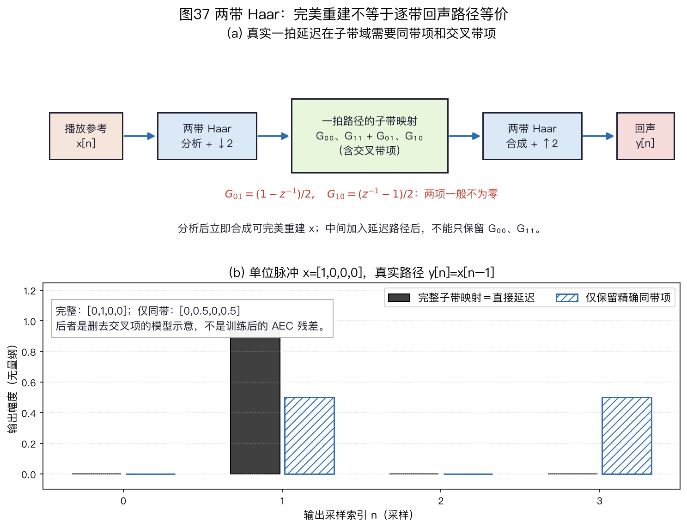
图37(a)沿用一拍延迟与两点 Haar 定义，箭头表示代数依赖，不表示实际房间能量流或工业滤波器组的混叠抑制量。图37(b)另取单位脉冲 $x=[1,0,0,0]$：完整四项子带映射合成 $[0,1,0,0]$，只保留精确同带项则合成 $[0,0.5,0,0.5]$。斜线柱是删去交叉项后的模型输出，不是训练后 AEC 的残差，也不是上文 $x=[1,1,0,0]$ 的第二次测量。
想听和复算同一结构，可看两带 Haar 的四个合成 WAV。其中“缺失交叉项”仅是已知矩阵删去非对角项的差值，不是对角自适应算法训练后的结果。
IPNLMS：均匀更新与比例更新如何混合
回声路径若只有少数明显非零的抽头，给这些抽头更多更新量可能比所有抽头等权更新更快；但初始路径全为零时，算法还不知道哪些位置重要。
比例归一化最小均方（Proportionate Normalized Least-Mean-Square，PNLMS；Duttweiler，IEEE Transactions on Speech and Audio Processing 2000）与改进比例归一化最小均方（Improved Proportionate Normalized Least-Mean-Square，IPNLMS；Benesty 与 Gay，ICASSP 2002）让抽头更新方向依赖当前权重幅度。这里的“快”只在相同参考、真实路径、步长和评价口径下比较；分散的路径不应沿用稀疏路径的结论。
本书沿用 Benesty 等 EUSIPCO 2004 表 1的一类混合参数化，不把下式冒称为 2002 年原论文的逐字原式。用 $\kappa\in[-1,1]$ 表示混合系数，$\delta>0$ 防止更新分母为零，$\varepsilon_g>0$ 防止比例项分母为零：
$$\begin{aligned} g_l&=\frac{1-\kappa}{2L} +\frac{(1+\kappa)|\hat w_l|} {2\|\hat{\vec w}\|_1+\varepsilon_g},\\ \hat{\vec w}^{+} &=\hat{\vec w} +\mu\frac{eG\vec x} {\vec x^{\top}G\vec x+\delta}. \end{aligned}\tag{6-5}$$
这里 $g_l$ 是第 $l$ 个抽头的非负权重，$G=\operatorname{diag}(g_0,\ldots,g_{L-1})$；$G$ 调整更新方向和归一化，而不改变回声副本的卷积定义。
逐样本实现的顺序不能颠倒：先用旧权重与当前参考向量计算先验回声和残差；再由旧权重的绝对值计算 $g_l$；随后求 $\vec x^\top G\vec x+\delta$；最后一次性更新全部抽头。若先更新一个抽头再计算下一个抽头的 $g_l$，就不再是式(6-5)的同时更新。
若双讲控制要求冻结，这一步只推进参考历史，不把含近端语音的残差用于更新。冻结的标记在本书实验中由真值给出，并不是检测器输出。
$\kappa=-1$ 时各 $g_l=1/L$，式(6-5)的分子、分母同乘 $L$ 后，正则项变成 $L\delta$；因此与式(6-2)的 NLMS 逐步等价还要求 $\varepsilon_{\mathrm{NLMS}}=L\delta_{\mathrm{IPNLMS}}$（或两者都忽略正则项），不能给两个地板相同数值就宣称完全等价。$\kappa=1$ 时只剩比例项；零初值下它会全部为零而无法起步，实际实现须保留均匀分量或权重下限。不同文献可能使用 $\alpha$ 并改变归一化，比较参数前要先核对定义。
两抽头手算。 设 $\hat{\vec w}=[0.8,0.2]^\top$、$\vec x=[1,1]^\top$、$d=1.2$、$\mu=1$，则先验残差 $e=1.2-(0.8+0.2)=0.2$。忽略极小的正则项，$\kappa=0$ 时 $g=[0.65,0.35]$，更新量为 $[0.13,0.07]^\top$；$\kappa=-1$ 时 $g=[0.5,0.5]$，更新量为 $[0.10,0.10]^\top$。
这个单步例子只说明权重如何分配，不证明长期收敛优劣；声学路径是否足够稀疏还需用目标录音检验。
正则项不容略过的第二例。 固定同一 $\hat{\vec w},\vec x,d,\mu$，改取 $\varepsilon_g=2$、$\delta=0.25$。当 $\kappa=0$ 时，均匀项为 $0.25$，比例项分别为 $0.8/4=0.2$ 和 $0.2/4=0.05$，故 $g=[0.45,0.30]$。两项之和是 $0.75$，不是 1；分母为 $0.45+0.30+0.25=1$，更新量为 $0.2[0.45,0.30]=[0.09,0.06]$。
当 $\kappa=-1$ 时，两项均为 $1/2$，分母为 $0.5+0.5+0.25=1.25$，更新量为 $0.2[0.5,0.5]/1.25=[0.08,0.08]$。对照 NLMS，令其正则项为 $L\delta=2\times0.25=0.5$，式(6-2)的更新正好也是 $0.2[1,1]/(2+0.5)=[0.08,0.08]$。因此“$\kappa=-1$ 退化为 NLMS”需要连同正则项尺度一起说；$\varepsilon_g$ 较大时也不能暗中把 $g$ 强行归一成和为 1。
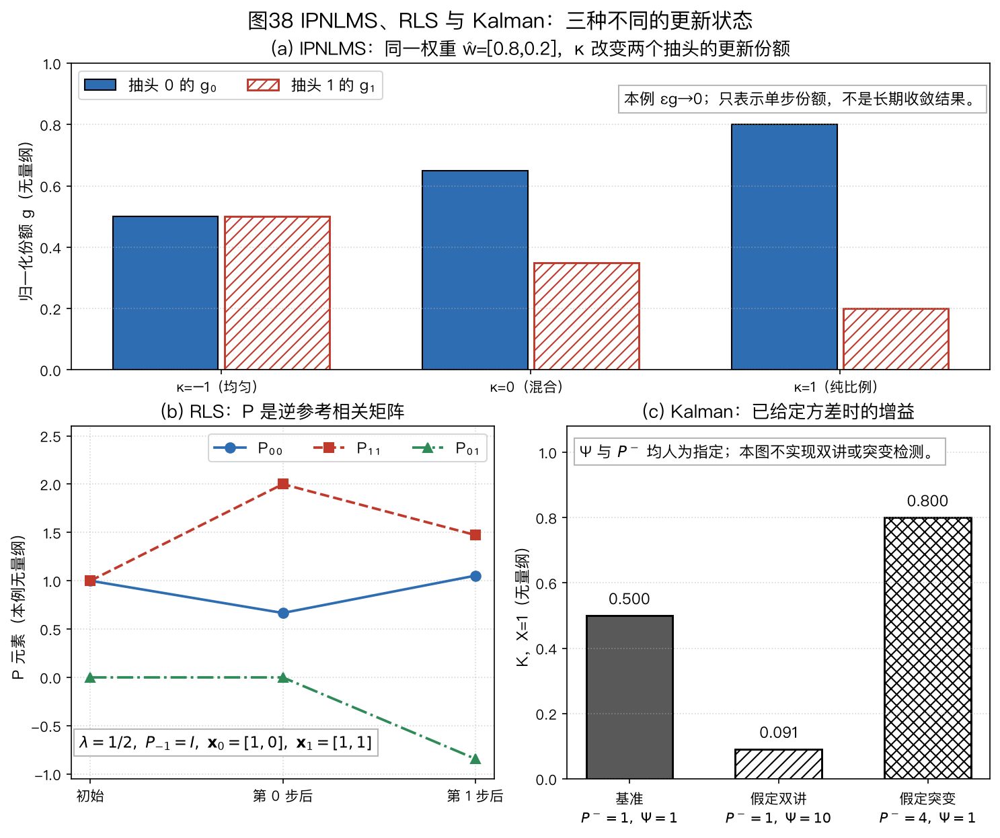
图38(a)取前述忽略正则项的两抽头例，显示 $\kappa=-1,0,1$ 时的 IPNLMS 份额；不是紧邻的 $\varepsilon_g=2$ 例。图38(b)画出 RLS 手算中逆相关矩阵两步的对角与非对角元素；图38(c)在 $X=1$ 下单独改变已知的 $P^-$ 或 $\Psi$，说明 Kalman 增益的条件依赖。三幅图没有共同声学输入，不是性能排名，不能由柱高判断哪种方法抵消更好。
持续更新的可运行边界。 IPNLMS 状态代码和子带/IPNLMS 演示把先验残差、抽头状态和冻结掩码分开返回。稀疏路径、稠密路径、路径突变分别需要独立评价；某一次更新把强抽头推得更远，只能说明当前输入方向上的变化，不能替代多个时刻的系数误差或远端单讲残差曲线。
RLS：用参考相关矩阵改变更新方向
递归最小二乘（Recursive Least Squares，RLS）为什么与 NLMS 不同。 NLMS 在当前误差的梯度方向走一步；RLS 则把先前参考与麦克风观测形成的相关矩阵压缩成持续更新的状态，求指数加权最小二乘解。
以下先限于实数、单播放参考、单麦克风、长度 $L$ 的因果 FIR。$\vec x_n=[x[n],x[n-1],\ldots,x[n-L+1]]^\top$ 已与麦克风 $d_n$ 对齐，预测是 $\vec w^\top\vec x_n$。近端语音若包含在 $d_n$ 中，会进入拟合目标，RLS 本身并不知道哪一部分是回声。
有限的初始逆相关矩阵需要一个相应的初始约束。设初始权重 $\vec w_{-1}$、$R_{-1}=\delta I$、$P_{-1}=R_{-1}^{-1}=\delta^{-1}I$，其中 $\delta>0$；若每个已接纳的样本都执行一次更新，则本书采用的目标是
$$\begin{aligned} J_n(\vec w)={}&\sum_{i=0}^{n}\lambda^{n-i} (d_i-\vec w^\top\vec x_i)^2\\ &+\lambda^{n+1}\delta\|\vec w-\vec w_{-1}\|_2^2, \qquad 0\lt \lambda\leq1\text{。} \end{aligned}\tag{6-6}$$
式(6-6)第二项不是可随意省略的装饰：它使数据不足、参考只激励部分方向时仍有唯一解。若删掉该项而继续用有限 $P_{-1}$ 递推，前几个样本的结果就不再是所声称目标的精确解。$\delta$ 越大，初始路径约束越强、初始逆相关矩阵越小；它与 NLMS 分母的 $\varepsilon$ 不是同一个参数。MathWorks dsp.RLSFilter 的 InitialInverseCovariance 与递推定义给出同类初始化接口。
对式(6-6)求梯度并令其为零，得到 $R_n\vec w_n=\vec p_n$。逐项把旧样本的权重乘 $\lambda$，就有
$$\begin{aligned} R_n&=\lambda R_{n-1}+\vec x_n\vec x_n^\top,\quad R_{-1}=\delta I,\\ \vec p_n&=\lambda\vec p_{n-1}+\vec x_n d_n,\quad \vec p_{-1}=\delta\vec w_{-1},\\ P_n&=R_n^{-1},\quad\vec w_n=P_n\vec p_n\text{。} \end{aligned}\tag{6-7}$$
不必每个样本重新求逆。令 $q_n=P_{n-1}\vec x_n$，对 $R_n=\lambda R_{n-1}+\vec x_n\vec x_n^\top$ 使用矩阵求逆引理，并把式(6-7)的 $\vec p_n$ 代回，可得到等价递推：
$$\begin{aligned} q_n&=P_{n-1}\vec x_n,\\ K_n&=\frac{q_n}{\lambda+\vec x_n^\top q_n},\\ \hat y_n^-&=\vec w_{n-1}^\top\vec x_n,\\ e_n^-&=d_n-\hat y_n^-,\\ \vec w_n&=\vec w_{n-1}+K_ne_n^-,\\ P_n&=\lambda^{-1}(P_{n-1}-K_n\vec x_n^\top P_{n-1})\text{。} \end{aligned}\tag{6-8}$$
这里 $K_n$ 是 $L\times1$ 更新增益，$P_n$ 是 $L\times L$ 逆相关矩阵；$e_n^-$ 是用更新前权重计算的先验残差。只算 $q_n$、外积和权重更新时，每样本主要成本为 $O(L^2)$、仅存 $P$ 就需 $O(L^2)$ 空间。
本书教学代码为拒绝已经失去正定性的有限精度状态，每次更新另做一次 Cholesky 检查，故这份代码的检查成本为 $O(L^3)$；不能把其运行时间当成工业 $O(L^2)$ RLS 的实测表现。
式(6-8)的实数转置约定不能未经检查就套到复数频域：要先固定预测采用 $\vec w^H\vec x$ 还是 $\vec w^\top\vec x$，再处理增益和误差的共轭。MathWorks 官方算法式可用于核对常规 RLS 更新；本书式(6-6)的初始化项和以下数字由本书推导。
两抽头锚点手算。 取 $L=2$、$\lambda=1/2$、$\delta=1$、$\vec w_{-1}=0$，故 $P_{-1}=I$。顺序输入 $\vec x_0=[1,0]^\top,d_0=1$ 与 $\vec x_1=[1,1]^\top,d_1=2$；第二个回归向量可由连续参考 $x[0]=x[1]=1$ 产生。这是无量纲算术例，不是实录回声或收敛性能结果。
第 0 步有 $q_0=[1,0]^\top$、分母 $1/2+1=3/2$、$K_0=[2/3,0]^\top$。先验预测为零、$e_0^-=1$，所以 $\vec w_0=[2/3,0]^\top$、$P_0=\operatorname{diag}(2/3,2)$。第二个对角元从 1 变为 2，是未受参考激励方向的旧信息被遗忘，不表示那里已量到新的路径。
第 1 步 $q_1=P_0\vec x_1=[2/3,2]^\top$，分母 $1/2+2/3+2=19/6$，因此 $K_1=[4/19,12/19]^\top$。先验预测 $2/3$、残差 $4/3$，得到 $\vec w_1=[18/19,16/19]^\top$ 与 $P_1=\bigl[\begin{smallmatrix}20&-16\\-16&28\end{smallmatrix}\bigr]/19$；中途保持分数，最后才按需舍入。
再走一条独立的批量路线：式(6-6)在第 1 步给 $R_1=\bigl[\begin{smallmatrix}7/4&1\\1&5/4\end{smallmatrix}\bigr]$、$\vec p_1=[5/2,2]^\top$。直接解 $R_1\vec w=\vec p_1$ 得 $[18/19,16/19]^\top$，其逆也等于上段的 $P_1$。这验证两步递推与指定的含初始约束目标一致；换遗忘因子、删去初始项、加入近端语音或让参考秩亏，不能沿用这两个系数。可运行逐样本示例和批量独立测试复算此例。
遗忘、双讲与工程边界。 对无限长、每步都接纳的序列，指数权重总和趋近 $1/(1-\lambda)$；$\lambda=0.99$ 时约为 100 个单位权重的总量，不是 100 个统计独立样本。若输入独立同分布，权重平方和给出的等效样本数趋近 $(1+\lambda)/(1-\lambda)\approx199$；两种数量的定义不同。
时间跨度还须乘每次更新的实际采样或块间隔。减小 $\lambda$ 能更快淡忘旧路径，也放大噪声和近端干扰的影响。MathWorks 在线估计文档给出遗忘因子的时间尺度解释；这里的权重和及等效样本数是本书求和。
双讲时，$d_n$ 中的近端语音进入 $e_n^-$，式(6-8)仍会更新；已知双讲区间可以冻结更新作受控对照，但实际设备须另测检测器、更新恢复及近端损伤。
参考为零时 $K_n=0$，常规递推仍会把 $P$ 除以 $\lambda$；长静音可能使逆相关状态膨胀，需要限幅、重置或按实现定义暂停遗忘。
浮点舍入还可能让 $P$ 失去对称性或正定性；Householder、QR 或平方根实现是数值方案，不能与普通 RLS 混为“更快”的同义词。
对 $L=4096$，单个 float64 的 $P$ 已有 $4096^2\times8=128$ MiB，尚未计多通道、历史和工作缓冲。长路径通常先考虑分区、子带或其他结构化近似，再测实际设备资源。MathWorks dsp.RLSFilter 的方法选项列出常规、Householder、滑动窗与 QR；选择这些方法不等于 MathWorks 的 AEC 示例本身用了 RLS。
Kalman：同时描述路径变化与观测不确定度
卡尔曼路径估计与频域卡尔曼滤波（Frequency-Domain Kalman Filter，FDKF）。 卡尔曼模型区分两种不确定性：回声路径自身怎样变化，以及麦克风观测里有多少路径不能解释的近端语音和噪声。增益像自适应步长，但“最小均方误差”只在选定的线性状态、二阶统计量和估计类别下成立，不能保证任意双讲或扬声器非线性下最优。
FDKF 将这类状态递推放到块频域。“每频点一个系数”只是后面的标量对角近似；完整分区结构还含分区、参考通道及其协方差。Enzner 与 Vary 2006 原论文与作者对状态空间 FDAF 的说明均不支持把一般频域 NLMS 直接改名为精确 Kalman。
为先看清状态含义，取已对齐、实数、长度 $L$ 的时域 FIR 作模型；$\vec h_n$ 是当前真实回声路径，$a$ 是标量状态转移因子，$\Delta\vec h_n$ 是零均值过程扰动，$s_n$ 是近端语音，$v_n$ 是其他加性观测噪声：
$$\begin{aligned} \vec h_n&=a\vec h_{n-1}+\Delta\vec h_n,\\ d_n&=\vec x_n^\top\vec h_n+s_n+v_n\text{。} \end{aligned}\tag{6-9}$$
第一行描述路径的漂移或突变；第二行指出麦克风为何不等于回声副本。过程协方差 $Q=\operatorname{Cov}(\Delta\vec h_n)$ 与观测方差 $\Psi=\operatorname{Var}(s_n+v_n)$ 不是同一种噪声；$\Psi$ 也不要与上面 RLS 的参考相关矩阵 $R_n$ 混淆。
同写为 $P$ 的两个状态也不同：式(6-7)中它是样本相关矩阵的逆，式(6-10)与式(6-11)中它是路径估计误差协方差；只有下文限定条件成立时，两套递推才可作代数对应。
增大 $Q$ 表示更不信任旧路径，增大 $\Psi$ 表示更不信任这次麦克风观测。实际近端语音有时间相关性，路径突变也未必符合平稳随机模型；式(6-9)只是估计器的工作假设，不是真实声场的完整生成式。两抽头矩阵 Kalman 教学实现使用此实数约定，而不是把它冒称为完整 FDKF。
双讲时，若观测噪声估计 $\Psi_m$ 随近端语音能量增大，卡尔曼增益会减小。路径变化后，先验残差 $E_m$ 可能增大，但下文式(6-10)中的增益并不直接依赖 $E_m$；只有过程噪声、误差协方差或状态重置策略相应调整时，增益才可能上升并加快重新收敛。每个频点还需维护误差方差或协方差，因此同等频域卷积结构之外另有统计量的计算与存储；不能不指定近似形式就报一个统一复杂度。
下式是便于复算的逐频点标量近似，不是完整分区 FDKF 的跨频点、跨分区协方差递推。假设已对齐的参考 $X_m$ 已知，状态扰动与观测扰动为零均值、彼此及与先验状态误差不相关；$P_{m-1}\geq0$、过程方差 $\Phi_m\geq0$、观测方差 $\Psi_m>0$，且所用二阶矩与该模型相符。
在这些条件下，增益是只用当前复数创新、不另用其共轭的最小均方误差复线性增益。若相关复数变量进一步联合为圆对称（proper）复高斯，或全部变量是实数高斯，它也是相应条件均方误差意义下的最优增益。非圆对称复高斯可能需要同时利用创新及其共轭，不能套用这一最优性结论；Dini 与 Mandic 2010 的广义复卡尔曼分析给出这一边界。下面省略频点下标，$W_{m-1}$ 是上一块的路径系数，$P_{m-1}$ 是其误差方差，$a$ 是状态转移因子：
$$\begin{aligned} \hat W_m^-&=aW_{m-1},& P_m^-&=|a|^2P_{m-1}+\Phi_m,\\ E_m&=D_m-X_m\hat W_m^-,& K_m&=\frac{P_m^-X_m^*}{|X_m|^2P_m^-+\Psi_m},\\ W_m&=\hat W_m^-+K_mE_m,& P_m&=(1-K_mX_m)P_m^-. \end{aligned}\tag{6-10}$$
前两式先预测路径和不确定度；协方差传播使用 $|a|^2$，因为复数状态模型的一般形式是 $APA^H+Q$。中间两式根据先验残差计算增益；最后两式更新系数和误差方差。标量复数模型中 $K_mX_m$ 为实数且位于 0 与 1 之间。
实际分区频域实现还要处理矩阵协方差、块卷积约束和频点平滑，不能把上面的标量递推直接复制成完整系统。Enzner 与 Vary 2006
观测方差不是残差平方。 若假定路径 $W$ 精确已知，且残差完全由零均值圆对称复高斯观测噪声产生，单帧负对数似然的相关项才是 $|E|^2/\Psi+\log\Psi$，其单帧极大似然解为 $\hat\Psi=|E|^2$。这组假设恰恰排除了需要估计的路径不确定度，不能直接用于式(6-10)的 Kalman 创新。
在式(6-10)的模型下，创新方差是 $S=|X|^2P^-+\Psi$。若把 $P^-$ 和 $X$ 当作已知，且仍只用一帧圆对称复高斯创新，则对 $\Psi\geq0$ 的受限极大似然解为 $\max(0,|E|^2-|X|^2P^-)$；它仍会把路径失配、双讲、噪声和单帧随机波动混在一起。工程实现需另估计或控制 $Q$、$\Psi$，并检查双讲和路径突变的不同征兆；不能把当前 $|E|^2$ 宣称为测得的近端语音功率。
最小数例取 $X=1$、$P^-=1$。远端单讲时若 $\Psi=0.01$，$K=1/1.01\approx0.990$，残差的大部分用于更新；双讲时若 $\Psi=10$，$K=1/11\approx0.091$，同一残差下的更新量约为前者的 9.2%。这说明软门控会缩小更新，但并没有严格冻结。
另固定 $X=1$、$P^-=1$、$\Psi=1$，无论先验残差为 0 还是 10，增益都为 $K=1/2$。若路径突变检测后把预测方差调整为 $P^-=4$，在其余条件不变时才得到 $K=4/5$。这是式(6-10)的代入，不表示实际检测器一定能正确区分路径突变与双讲；两者都可能增大残差，却需要不同的更新控制。
完整的一轮标量递推。 取实数特例 $W_{m-1}=0.2$、$P_{m-1}=0.5$、$a=1$、$\Phi_m=0.1$、$X_m=2$、$D_m=1.4$、$\Psi_m=0.4$。预测得到 $\hat W_m^-=0.2$、$P_m^-=0.6$；先验残差 $E_m=1.4-2\times0.2=1.0$。于是
$$K_m=\frac{0.6\times2}{2^2\times0.6+0.4}=\frac{1.2}{2.8}\approx0.4286,$$
$$\begin{aligned} W_m&=0.2+0.4286\times1.0\approx0.6286,\\ P_m&=(1-0.4286\times2)0.6\approx0.0857\text{。} \end{aligned}$$
用更新后的系数回看该观测，残差为 $1.4-2\times0.6286\approx0.1429$；它是后验检查，不应代替式(6-10)中用于更新的先验残差。若 $\Psi_m\to\infty$，则 $K_m\to0$，路径几乎不更新；若理想化地令 $\Psi_m\to0$ 且 $X_m\ne0$，标量模型会令 $K_m\to1/X_m$、$P_m\to0$。实际系统存在模型失配和数值误差，需要为方差设置正下限，不能把 $P_m=0$ 当作永久确定。
不提前舍入时，上例的精确分数是 $P^-=3/5$、$E^-=1$、创新方差 $S=14/5$、$K=3/7$、$W=22/35$、$P=3/35$、后验残差 $1/7$。标量递推代码逐项输出这些量，并用相同 $X$ 与先验把 $\Psi$ 从 $0.4$ 改为 $4$：增益由 $3/7$ 降到 $3/16$，后验权重从 $22/35$ 变为 $31/80$。这只验证假定观测方差已知时的代数响应，不是程序成功检测到了双讲。
另取复数 $X=i$、$P^-=\Psi=1$，式(6-10)给 $K=-i/2$；若漏掉共轭，会得到错误的 $+i/2$。上述三项有独立分数与边界测试，仍不能代替完整 FDKF 或 PBFDKF 的协方差、分区和声学验证。
矩阵状态说明标量近似舍掉了什么。 对实数路径状态，令 $A$ 是 $L\times L$ 转移矩阵、$Q$ 是过程协方差，观测仍为标量 $d_n$。先预测，再用先验创新更新：
$$\begin{aligned} \hat{\vec h}_n^-&=A\hat{\vec h}_{n-1},\\ P_n^-&=AP_{n-1}A^\top+Q,\\ S_n&=\vec x_n^\top P_n^-\vec x_n+\Psi,\\ K_n&=P_n^-\vec x_n/S_n,\\ \hat{\vec h}_n&=\hat{\vec h}_n^-+K_n(d_n-\vec x_n^\top\hat{\vec h}_n^-),\\ P_n&=(I-K_n\vec x_n^\top)P_n^- (I-K_n\vec x_n^\top)^\top\\ &\quad+K_n\Psi K_n^\top\text{。} \end{aligned}\tag{6-11}$$
最后一行是 Joseph 协方差形式；当增益精确且计算无舍入时，它与简写的 $(I-K_n\vec x_n^\top)P_n^-$ 等价。近似增益或有限精度下，Joseph 形式更明确保留非负协方差结构；这不保证所有错误的 $Q$、$\Psi$ 或增益都能被修复。矩阵教学代码和独立测试仅实现短实数 FIR，不含 FFT、分区约束或统计量在线估计。
两维协方差手算。 取 $A=I$、$Q=0$、$\Psi=1$、$\hat{\vec h}^-=0$、$P^-=\operatorname{diag}(1,4)$、$\vec x=[1,1]^\top$、$d=3$。式(6-11)给 $S=1+4+1=6$、$K=[1/6,2/3]^\top$、$\hat{\vec h}=[1/2,2]^\top$，Joseph 更新得到 $P=\bigl[\begin{smallmatrix}5/6&-2/3\\-2/3&4/3\end{smallmatrix}\bigr]$。虽然先验是对角矩阵，同一次观测同时约束两个抽头，后验立刻出现非零交叉协方差。
下一次若参考回归向量是 $[-1,1]^\top$、其余预测条件不变，完整创新方差为 $[-1,1]P[-1,1]^\top+1=9/2$；把 $P$ 的非对角项直接丢掉则只得 $19/6$。这证明对角近似会改变下一次增益的分母，不证明完整矩阵算法在任意录音上必优。数例与逐步输出采用同一抽头顺序和无量纲值；实际频域分区还需有效区投影、复数共轭和频点/分区结构。
RLS 与 Kalman 何时同式。 在式(6-11)取静态路径 $A=I$、$\Psi=1$，并人为令每次预测协方差 $P_n^-=P_{n-1}/\lambda$，则 $K_n=P_{n-1}\vec x_n/(\lambda+\vec x_n^\top P_{n-1}\vec x_n)$，恰是式(6-8)的增益。这相当于每次使用依赖当前后验协方差的 $Q_n=(\lambda^{-1}-1)P_{n-1}$；$\lambda=1$ 时 $Q_n=0$。
这是本书在指定归一化下的代数对应，不表示任意固定 $Q$ 的 Kalman、FDKF 或 PBFDKF 只是 RLS 改名；两者还可能采用不同的观测模型、变换约束和双讲控制。
分区块频域卡尔曼滤波（Partitioned-Block Frequency-Domain Kalman Filter，PBFDKF）把长回声路径分区，状态和协方差还要考虑分区及多播放通道。Kuech、Mabande 与 Enzner 的 ICASSP 2014 状态空间架构是分区方法的原始依据之一；不能把本书单频点、单状态演示直接当作该完整算法。原论文 DOI 10.1109/ICASSP.2014.6853806。
Zhu 等的 Interspeech 2021 双声道推导分别讨论精确分区递推与两种协方差简化：VD-PBFDKF 只保留同播放声道、同分区的块；SD-PBFDKF 在同分区还保留跨播放声道的块，两者都舍去某些跨分区相关。保留项不同，矩阵乘法和统计近似就不同。论文图 4～5 的结果只属于其给定双声道、块长、路径及双讲条件。Zhu 等，§2～3、图 4～5。
公开的第三方短代码可辅助读递推，但其后滤、启发式门控和许可必须分别核对，见研究手册 A04。
从标量数例走到分区频域模型，究竟多出什么。 式(6-10)每频点只保留一个权重和一个非负方差，因而无法表达“上一块的另一分区权重也能解释本块观测”。完整状态必须把若干分区、频点以及多播放通道的系数排成一个向量 $\mathbf w_m$。对长度 $N$ 的有效麦克风块 $\mathbf d_m$，先建立一条由当前和历史参考块决定的线性观测算子 $H_m$；它包括频域相乘、逆变换和只取后 $N$ 个有效样本，不能把循环卷积前半块也当成独立的真实观测。
在零均值、互不相关且二阶统计量已知的线性状态模型下，完整矩阵增益可写成
$$\begin{aligned} \hat{\mathbf w}_m^-&=A\hat{\mathbf w}_{m-1},\\ P_m^-&=AP_{m-1}A^H+Q,\\ \mathbf e_m^-&=\mathbf d_m-H_m\hat{\mathbf w}_m^-,\\ K_m&=P_m^-H_m^H(H_mP_m^-H_m^H+\Psi_m)^{-1},\\ \hat{\mathbf w}_m&=\hat{\mathbf w}_m^-+K_m\mathbf e_m^-\text{。} \end{aligned}\tag{6-12}$$
这里 $A$ 是状态转移矩阵；$P_m^-$、$Q$ 分别是状态误差与过程扰动的协方差；$\Psi_m$ 是有效时域观测块的干扰协方差；$H$ 上标表示共轭转置。
若状态有 $M$ 个复数系数、有效块含 $N$ 个样本，$P_m^-$ 是 $M\times M$、$H_m$ 是 $N\times M$、括号内是 $N\times N$，故 $K_m$ 是 $M\times N$。这组维度检查也说明把所有分区都写成一个标量 $K$ 会漏掉相关结构。
式(6-12)是本书按线性观测模型写出的未简化母式，并非声称能直接用密集矩阵实时处理长路径。频域系数还需服从有限长时域 FIR 的有效抽头约束；若按频点、分区或播放通道丢弃协方差块，就从母式走向不同的 FDKF/PBFDKF 近似。
哪一层“对角”被保留必须写清楚，不能仅把式(6-10)复制 $P$ 次便称为论文完整分区算法。Zhu 等，Interspeech 2021，§2～3给出双声道分区实现中的具体观测约束与 VD/SD 简化；本书式(6-12)只用于解释这些结构的维度。
已知真值的双讲反例。 先取一个实数抽头，$P^-=1$、$w^-=0$、$x=1$、观测方差 $\Psi=0.1$，且首个观测 $d=1$。卡尔曼增益为 $1/(1+0.1)=10/11$，后验 $w=10/11$、$P=1/11$。下一次真实路径仍是 1，但加入近端成分 2，使 $d=3$；这时先验残差是 $3-10/11=23/11$，其中大部分并非路径突变。
若仍误设 $\Psi=0.1$，第二次增益为 $(1/11)/(1/11+1/10)=10/21$，新权重为 $10/11+(10/21)(23/11)=440/231\approx1.905$。若已知双讲而把 $\Psi$ 调成 10，增益变为 $1/111$，新权重为 $10/11+23/1221\approx0.928$；若理想冻结观测更新，权重保持 $10/11\approx0.909$。
三种结果只说明观测方差和真值控制改变了更新；它们都没有提供从实际麦克风信号自动识别双讲的方法。路径若恰在双讲时突变，冻结也会延迟跟踪。
同输入 RLS/Kalman 受控实验把 512 个无量纲样本分成远端单讲、已知近端注入、远端恢复与路径突变四段。固定种子为 20260923，使用两抽头、名义 8 kHz；同一播放参考和真实路径供各算法使用。实验分别报告先验回声估计与已知回声真值的均方误差、后验路径均方根误差，以及 Kalman 增益范数。
双讲段中，固定低 $\Psi$ 的 Kalman 回声估计误差均方约为 0.1341；在真值已知的区间提高 $\Psi$ 后约为 $1.57\times10^{-5}$，理想冻结约为 $9.83\times10^{-6}$。
这些是本书一组短合成序列的算术输出，不是双讲 ERLE、自动检测成绩、自然语音质量或 RLS/FDKF 的一般性能排名。RLS 的遗忘因子与 Kalman 的 $Q,\Psi$ 描述不同先验，也不能把参数数值设成相同就称为“公平调参”。
另一组合成音频用 16 kHz、四抽头已知路径和同一麦克风输入导出 NLMS、IPNLMS、RLS、短实数矩阵 Kalman 的先验线性残差；中途人为改变路径，另存真值回声与背景噪声。音频只对应这四种时域教学实现，不含完整子带 AEC、FDKF/PBFDKF、真实语音或实机结果。四法的参数并非等效调优，表格中的单次均方误差也不是普适优劣顺序。
方法对比。 下表比较模型和资源依赖，不给没有共同输入、路径、收敛目标与实现条件支撑的“快、中、慢”排名。若要比较实际收敛，需在同一播放参考、回声路径、双讲安排和统计窗口上运行各实现，并分别报告初始收敛、突变恢复与稳态误差。图32给出排障流程，而不是算法性能排序。
| 算法 | 每样本主要计算 | 收敛受什么影响 | 双讲更新控制 | 适用条件 |
|---|---|---|---|---|
| 时域 NLMS | $O(L)$；朴素约 $3L$，能量递推主要项约 $2L$ | 输入谱、步长、路径变化 | 需外部冻结或连续步长控制 | 路径较短，或资源允许逐样本更新 |
| 比例更新 | IPNLMS：$O(L)$，另有比例权重计算 | 稀疏路径可能更快；稠密尾声不能照搬该趋势 | 仍需双讲控制 | 有明显强抽头且已测得收益 |
| 分区频域 | PBFDAF：无约束约 $O(\log N+L/N)$；逐分区约束另加 $O((L/N)\log N)$ | 频点归一化、块长和梯度约束 | 需二值或连续控制 | 长路径且可接受分块处理 |
| 子带自适应 | 分带、降采样与每带短滤波 | 带内谱、分析/合成混叠 | 仍需双讲控制 | 已核对带间混叠和系统延迟 |
| RLS | 标准全矩阵实现 $O(L^2)$ | 遗忘因子、参考条件数和噪声 | 干扰会影响更新，不能只调遗忘因子 | 短滤波器或研究对照 |
| 频域卡尔曼 FDKF | 频域滤波外另维护状态统计量 | 过程/观测噪声估计与状态模型 | 增益可软门控，但不自动识别双讲 | 路径变化且统计模型可校验 |
§6.1.1～§6.1.3 建立了线性回声模型，并比较了 NLMS、分区频域方法、比例步长和频域卡尔曼滤波。常用的输入/输出功率近似 ERLE 应在远端单讲统计；线性滤波只能处理参考可表示的线性回声，参考抽头位置和双讲控制还需另行设计。
非线性回声与双讲控制（§6.1.4～§6.1.5）
6.1.4 非线性回声：模型失配与处理方法
非线性从哪来。微型扬声器的悬边与磁路在大振幅下不再线性（悬边变硬、音圈跑出匀强磁场区），功放或数字播放链在大音量下可能削顶（clipping），机壳与结构件也可能随声压振动产生二次辐射。Birkett & Goubran（WASPAA 1995）实测讨论了免提终端中的非线性回声，Klippel（JAES 2006）从扬声器物理模型分析了相关机制。这里不作“最早提出”的优先权判断。
平台从哪里来。线性滤波器只能估计播放参考历史样本的线性组合。扬声器失真若产生该组合无法表示的谐波或互调分量，即使线性路径估计已收敛，这些分量仍会留在残差；E06-06 的单频输入和三次项给出一个可复算例子。
这不是“凡有非线性必有残余”的定理：若参考样本只取 $\{-1,1\}$，则 $x^3=x$，该输入上的三次映射也能由线性增益表示。能否抵消取决于实际参考集合、路径长度和失真模型。
图 19（a）用一组独立定量仿真展示这项能力边界，图 31 则用另一组受控仿真和静态映射检查同一机制。两图都取 3 s 输入、256 抽头、步长 0.3 和驱动系数 1.1。
两图的随机种子、参考序列边界成形方式、具体输入和路径实现不同，属于两次独立单次仿真，ERLE 数值不能横向比较。每个平台高度只属于各自图示配置，不能外推为某类设备固定的 ERLE 上限。
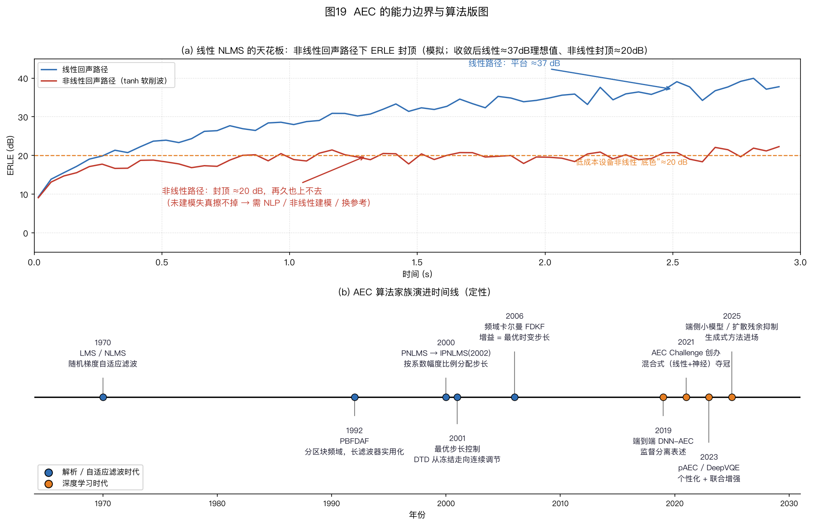
图19（a）是独立定量仿真，只支持其图示配置下“非线性失配使线性 AEC 出现残差平台”这一结论；它与图31不是同一实验，不能比较两图的平台高低。（b）按模型假设和处理对象区分逐样本时域 LMS/NLMS、分区块频域 MDF/PBFDAF、状态空间频域卡尔曼滤波和残余抑制。横向位置不表示年代或性能排名；选择方法时要结合路径长度、变化速度、非线性程度和资源约束。
tanh的最小手算。图 31 使用归一化映射 $y=\tanh(1.1x)/\tanh(1.1)$，使 $x=1$ 时 $y=1$。取 $x=0.3$，得到 $y\approx0.398$；取 $x=1.5$，得到 $y\approx1.160$。相对参考直线 $y=x$，两点的偏差分别约为 $+0.098$ 和 $-0.340$。
该映射在零点附近的斜率为 $1.1/\tanh(1.1)\approx1.37$，所以 $y=x$ 只是图中的参考线，不是它的小信号切线。
这两个采样点只说明映射具有曲率，不能推出整段语音的失真功率或 ERLE。平台数值还取决于输入分布、路径、最佳线性拟合和统计窗口。
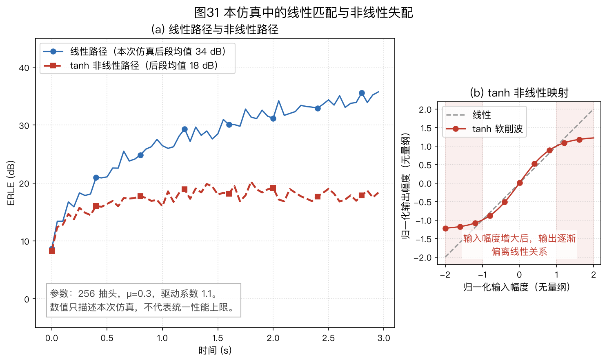
图31（a）在当前仿真参数下比较线性路径与 $\tanh(1.1x)/\tanh(1.1)$ 非线性路径，后段均值由脚本按图示窗口计算，不是设备性能上限。（b）显示同一映射相对参考直线 $y=x$ 的曲率。图31的唯一职责是把“映射曲率—线性模型残差平台”对应起来；线性滤波器无法精确表示由此产生的非线性分量，因此只增加抽头或调整步长不能消除该模型失配。
显式建模非线性。 二阶 Volterra（沃尔泰拉）模型在线性核之外加入历史样本的两两乘积。对实数输入，令对称的二阶核只保留 $0\leq i\leq j\lt L$，可写成
$$\begin{aligned} \hat y(n) &=\sum_{i=0}^{L-1}w_i x(n-i)\\ &\quad+\sum_{0\leq i\leq j\lt L}q_{ij}x(n-i)x(n-j). \end{aligned}\tag{6-13}$$
线性部分有 $L$ 个系数，二阶部分有 $L(L+1)/2$ 个；$L=256$ 时仅二阶部分就有 32,896 个。式(6-13)直接把 $q_{ij}$ 定义为独立的上三角系数；若从完整对称核 $H$ 改写，非对角项应取 $q_{ij}=H_{ij}+H_{ji}=2H_{ij}$，对角项仍是 $q_{ii}=H_{ii}$，不能简单删除下三角而不合并交叉项。
限制核的跨度、秩或保留的交互项可降低资源需求，却也改变可表达的失真。二阶模型不能自动处理所有非线性：纯单频输入的平方只有直流和二次谐波，不能生成练习 E06-06 中三次项的三次谐波。Stenger 与 Rabenstein，NSIP 1999，§3.1 式(1)–(2)
级联模型要按处理顺序区分：Hammerstein 是静态非线性后接线性动态（$N\to L$），Wiener 是线性动态后接静态非线性（$L\to N$），Wiener–Hammerstein 则是 $L\to N\to L$。如果失真发生在扬声器前、声学传播在后，$N\to L$ 可以作为候选；实际扬声器和播放链可能更复杂，不能仅凭框图确定结构。Nollett 与 Jones（NSIP 1997，§2）研究的是 Wiener–Hammerstein 结构，而不是上述两段模型；其摘要报告在论文测得的扬声器信号条件下，相对线性基线改善 8.4 dB。Nollett 与 Jones 1997
这个数值与论文中的输入、失真模型、路径和统计口径绑定。当真实失真偏离模型假设时，需要重新测量收益。
改变参考取点。 非线性发生在播放链路里，可以把参考取在更接近扬声器的一端，使参考包含更多已经发生的失真。这样减少了需要由自适应模型解释的链路，但并不消除参考点之后的机电或结构非线性。
- 电信号参考直接采样扬声器端子的电压或电流。Shah 等（IEEE/ACM Transactions on Audio, Speech, and Language Processing, 2015）的作者机构摘要报告，真实设备实验相对其比较基线的 ERLE 改善最高为 6 dB，不是对所有设备的保证；该参考仍不能捕捉其取点之后的全部机电或结构失真。作者机构论文页
- 机械振动参考用加速度计采集振膜或机壳振动，需增加传感器和采集通道。
两种做法都要比较新增参考带来的收益、噪声、同步误差和硬件代价。
学习型残余抑制。 深度神经网络（Deep Neural Network，DNN）可以从数据学习残余抑制，适用条件和验证方法见 §6.1.6。它与改变参考取点、显式建模并非互斥；评估时要分别报告线性副本和最终输出。
6.1.5 双讲检测与自适应控制
双讲时，残差同时包含路径失配和近端语音。若仍按普通 NLMS 更新，近端语音会进入梯度并使路径估计偏离。双讲检测（Double-Talk Detection，DTD）用于降低步长或冻结更新。门限过于敏感会延迟路径跟踪，门限过于迟钝则可能导致误更新。
常见 DTD 方法（DTD = 双讲检测，double-talk detection；NCC = 归一化互相关，normalized cross-correlation）：
-
Geigel 幅度比较：设 $x_a$ 为已经补偿纯延迟、送入长度 $L$ 自适应滤波器的参考。先检查 $M(n)=\max_{0\le j\lt L}|x_a(n-j)|$ 是否大于参考活动门限；只有活动时才计算 $\xi(n)=|d(n)|/M(n)$，高于判决阈值时判为双讲。$M(n)=0$ 时不能做除法，也不能把本次观测当成可靠双讲判决。
经典示例阈值 $T=0.5$ 来自线路回声中混合器至少衰减 6 dB 的假设（$20\log_{10}2\approx6$ dB），不是任意声学回声路径的固定阈值。多抽头路径的若干项还会在同一样本叠加，单个参考峰值与麦克风回声峰值之间没有通用的 0.5 上界。
两抽头反例令 $x_a(n)=x_a(n-1)=1$、真实路径 $h=[0.4,0.4]$、$s=0$，则 $d=0.8$、$M=1$、$\xi=0.8>0.5$；明明没有近端讲话，仍被判为双讲。反过来，回声很弱时小声近端也可能漏检。因此它适合低成本初筛，不宜单独承担声学双讲检测。Duttweiler，IEEE Transactions on Communications, 1978；
-
互相关 / 归一化互相关（NCC）（Benesty、Morgan 与 Cho）：原方法用播放参考向量与麦克风观测 $d$ 的归一化互相关构造双讲统计量，不是把残差 $e$ 与参考 $x$ 去相关后直接判双讲。简化为单抽头、零均值且近端 $s$ 与参考 $x$ 不相关的 $d=hx+s$，有 $|\rho_{xd}|=|h|\sigma_x/\sqrt{h^2\sigma_x^2+\sigma_s^2}$：只有远端回声时为 1，近端语音功率增加时下降。例如 $h=0.5$、$\sigma_x^2=1$、$\sigma_s^2=0.25$ 时为 $0.5/\sqrt{0.5}\approx0.707$。实际多抽头检测用参考向量和协方差归一化，不能把这个单抽头值当通用门限。$x$ 与 $e$ 的相关性更适合提示回声路径失配；单凭它低或高都不能可靠区分双讲和路径变化。Benesty、Morgan 与 Cho，IEEE Transactions on Speech and Audio Processing 2000、Benesty 与 Gänsler，IWAENC 2001，§3；
-
频域 NCC（Gänsler & Benesty, Signal Processing 2001）：在频域逐频点估计相关性，可与 PBFDAF 复用部分频域表示；额外计算量取决于平滑、频带汇总和判决实现；
-
相干函数法：用 $d$ 与 $x$ 的幅度平方相干判别，与 NCC 同族；
-
双滤波器法：前台滤波器负责输出，后台滤波器用更大的步长寻找新路径。后台并不是“不怕双讲”；双讲时照常大步更新同样会偏离真实路径，所以它也要根据双讲置信度缩小步长或冻结。
只有当后台滤波器在一段保持时间内持续得到更小的远端单讲残差，才把系数复制到前台。切换判决需要门限和迟滞，避免两套滤波器来回切换。
WebRTC AEC3 的 refined/coarse 结构采用了相近的快慢滤波思路，但具体更新和切换规则以对应版本源码为准。
Geigel 判决的数字例子。 只为复算经典线路回声假设，设参考历史窗的峰值为 1.0，并把回声简化为单个衰减 6 dB 的副本，则远端单讲时 $|d|\approx0.5$，阈值 0.5 位于边界。这个数字没有包含声学多径叠加、背景噪声或参考失配，不能据此为声学 AEC 固定阈值。实际强回声可能在远端单讲时误判，弱回声叠加小声近端语音又可能漏检。
从二值冻结到连续步长。冻结是 0/1 开关，也可以根据残余回声与近端干扰的相对功率连续调整步长。Mäder、Puder & Schmidt（Signal Processing 2000）推导的最优步长 $\alpha(k)$ 在 $[0,1]$ 内变化：回声占优时增大，双讲占优时减小。连续控制可减少硬切换造成的跟踪迟滞。
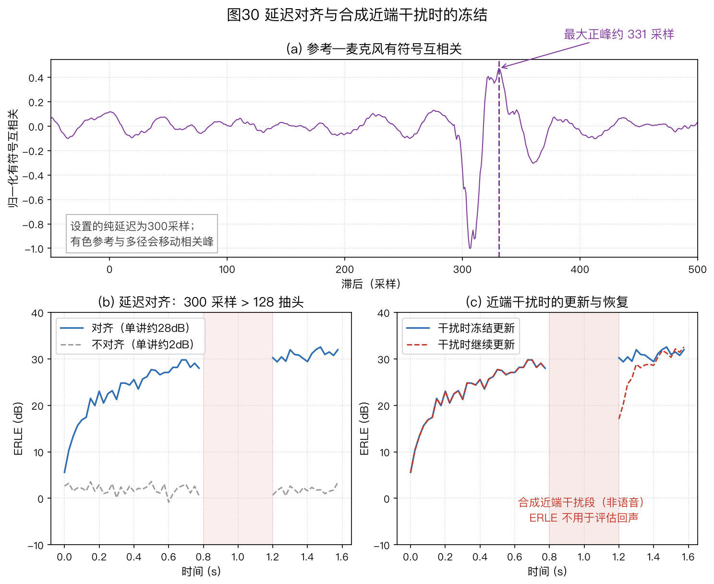
图 30 属于本节的时序控制例。图 30（a）在前 4000 个样本上计算参考与麦克风信号的有符号互相关，最大正相关峰位于约 331 个采样。仿真设置的纯延迟是 300 个采样；参考是有色信号，路径又含多个正负抽头，因此相关峰是输入自相关与整条路径共同作用的结果，不能解释成“300 加某个主抽头位置”。若改取互相关绝对值、使用广义互相关（Generalized Cross-Correlation，GCC）加权或改变参考频谱，峰值也可能改变。
图 30（b）中，对齐后的远端单讲 ERLE 约为 28 dB，不对齐时约为 2 dB。本例的纯延迟超过 128 抽头滤波器的覆盖范围，因此差异较大。
覆盖长度的硬边界。 设纯延迟为 $D$ 个样本，随后真实路径仍有从索引 0 到 $R$ 的非零尾声。若不先对齐，长度 $L$ 的因果 FIR 要覆盖整个路径，至少需要 $L\geq D+R+1$；对齐后才只需覆盖尾声。
若参考到达处理器的时间晚于麦克风回声所对应的播放内容，增加因果抽头无法预测尚未拿到的样本，必须修正参考取点、缓冲或时序。此式是支持集长度条件，不保证满足后一定能在有噪声和双讲时收敛。
单次相关峰只提供候选延迟。负极性回声可使最大正相关峰选错位置，工程上需同时检查绝对峰或更合适的加权估计，并结合播放、采集时间戳。
固定偏移表现为滞后长期近似常数；采样时钟偏移（SRO）通常表现为随时间渐变的斜率；设备切换或缓冲欠载则可能表现为突跳。三者要分别记录和处置，不应全靠调大滤波器长度。排障与源码核对
图 30（c）比较合成近端干扰期间冻结和继续更新；后者会使路径估计偏离，干扰结束后需要重新收敛。该段是白高斯随机样本，不是语音双讲录音；排查时应分别检查延迟估计方法和双讲控制。
神经 DTD。Ivry et al. 的深度变步长（Deep Variable Step-Size，DVSS，ICASSP 2022）用 DNN 预测逐帧步长。在该论文的数据、路径突变定义、成功判据和基线实现下，DVSS 的重收敛时间为 3.4 s、成功率为 95%，NLMS 加经典 DTD 基线分别为 7.9 s 和 58%。
这些是论文实验结果，不是产品验收阈值；复现时要沿用论文的判据，部署时则按目标设备另定恢复条件。Ivry et al., ICASSP 2022
§6.1.4～§6.1.5分别说明了非线性失配和双讲误更新。非线性残余可通过显式建模、改变参考位置或学习型抑制处理；双讲期间应根据检测置信度冻结或减小步长。由于输出含近端语音，双讲区间不能用普通 ERLE 评价。
学习型残余抑制、阵列顺序与评测（§6.1.6～§6.1.8）
6.1.6 学习型 AEC
微软 AEC Challenge 的评测变化。以下只摘录 ICASSP 2021 会议报告和介绍 2023 年挑战的 IEEE OJSP 2024 期刊报告中可直接定位的信息。挑战赛年份与论文出版年份不同；挑战赛的届次名称、任务、排名指标和延迟约束也会改变，不能由仓库更新时间推断后续赛事状态。
| 报告 | 可复核的设置 | 读取时的限定 |
|---|---|---|
| ICASSP 2021 报告 | 发布真实设备录音并引入 ITU-T P.808 众包主观评价 | 数据数量、系统排名和分数应直接查报告的数据与结果表 |
| 2023 挑战（IEEE OJSP 2024 报告） | 包含一般 AEC 和个性化 AEC 任务，并同时考查主观质量与语音识别 | 注册语音、延迟和排名条件只属于该届规则，不是通用产品规范 |
Sridhar et al.（ICASSP 2021 AEC Challenge 报告）、Cutler et al.（2023 AEC Challenge，IEEE OJSP, vol. 5, pp. 675–685, 2024）
这些报告说明，ERLE 不能单独表示双讲质量或近端语音损伤，因此评测还需主观质量和下游识别指标。参赛系统同时包含线性 AEC 加学习型后滤波的混合方案和端到端方案。两类方法应按延迟、算力、泛化和故障诊断要求分别评估。
后续报告继续加入全频带、个性化和下游识别等条件。复现时应从对应年份的规则和论文表格读取采样率、延迟、注册语音与排名指标，不把某届数字写成后续系统的通用限值。
混合式结构：线性估计加学习型残余抑制。自适应滤波器利用已知参考估计线性回声，不需要训练数据；神经网络则处理线性模型未覆盖的残余回声、环境噪声和部分晚期混响。两者分工可以减少网络需要学习的动态范围，同时保留线性段的路径与收敛诊断。
可以用 SER（信号回声比，signal-to-echo ratio）为 -20 dB 的时频点说明两类方法的差别：此时回声能量是近端语音的 100 倍。
只考虑相位完全正确的标量幅度误差，令真实回声为 $y$、副本为 $\hat y=0.9y$，则残差为 $0.1y$，残余能量是原回声的 $|0.1|^2=1\%$，相当于降低 20 dB。若副本还有相位误差，残余比应按 $|1-\alpha e^{\mathrm j\phi}|^2$ 计算，不能沿用 1%。
若只对混合信号施加同一个增益 $g$，回声和近端语音会同比缩放，该时频点的 SER 不变。混合结构因此先用参考完成线性减法，再对无法建模的残余施加增益抑制。
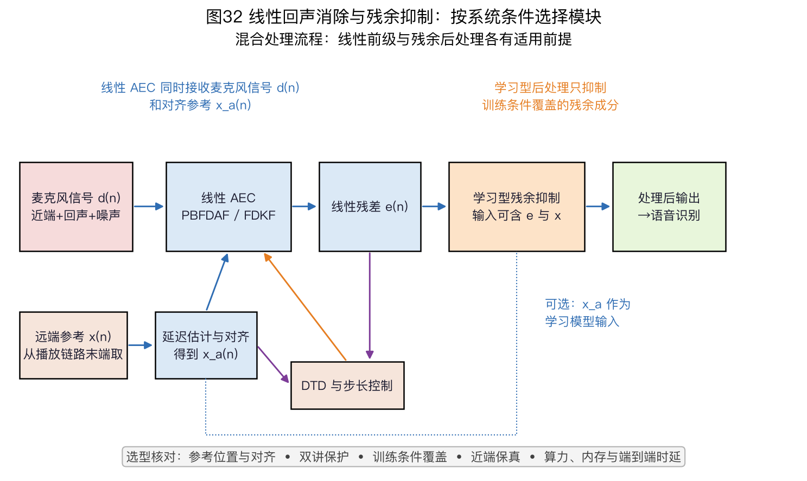
图32只画一类混合流程，不含（a）（b）（c）子图。参考 $x$ 经延迟估计得到对齐参考 $x_a$，线性 AEC 用 $x_a$ 估计回声并输出残差 $e$；图中的控制框从 $x_a$ 和 $e$ 提取统计量来调整更新，不表示所有双讲检测器都只用这两个输入。学习型残余抑制可使用残差与可选参考，最终输出须同时检查回声泄漏和近端语音损伤。此图说明信号依赖，不是 NLMS、PBFDAF、FDKF 的性能排序。
后滤波器的输入与输出：输入可以包括残差 $e$、参考 $x$ 的逐帧谱，以及滤波器系数范数、当前步长和各频带相干性等线性 AEC 内部量。网络输出逐频带增益或其他滤波参数。频带划分、特征维度和训练目标属于具体模型版本，不能在不同实现之间直接套用。
代表方案如下：
- PercepNet：在传统线性 AEC 之后，用网络估计 Bark 频带增益和周期性滤波参数，联合抑制残余回声与噪声。这个结构说明了解析路径估计与学习型后处理的功能分工；论文中的实时性只适用于所述模型、处理器和计时口径，换设备后仍需重测双讲近端保护与资源占用。Valin et al., ICASSP 2021；
- Ma et al. 2020：自适应滤波器加 RNN 后处理的公开实现展示了同一混合思路；该来源是 arXiv 预印本，结果应按文中的数据与基线解读。Ma et al., arXiv:2005.09237；
- DeepVQE（Interspeech 2023）：单模型联合 AEC、降噪和去混响，用交叉注意力在参考与麦克风信号之间做软对齐。论文报告了作者实现面向 Teams 场景的实时测试；这一结论只适用于论文所述模型、硬件和软件配置，不能据此推断其他实现的实时性。DeepVQE, DOI 10.21437/Interspeech.2023-1028
端到端神经 AEC把问题写成条件语音分离：输入麦克风信号和播放参考，直接估计近端语音。它能联合建模非线性与残余噪声，但低 SER 下的近端保护、未见设备上的泛化、因果延迟和故障诊断都需要单独验证。深度滤波不只输出 0～1 掩码，而是估计复数时频滤波器，可以同时调整幅度和相位。不同方案的 MOS 与 ERLE 只有在数据、场景、延迟和统计区间相同的条件下才能比较。
训练数据。回声路径可以用§2.4 的镜像法生成不同房间尺寸和 $T_{60}$，非线性失真可以用随机 Wiener–Hammerstein 级联参数化，SER 和 SNR 也可按区间采样。真实设备录音仍用于覆盖仿真中缺少的扬声器、结构振动和系统链路特性。常见做法是先用合成数据训练，再用目标设备录音微调并验证。
神经卡尔曼滤波：保留递推结构，学习难以建模的部分。 “神经卡尔曼”并不是单一网络接口，不能把所有论文概括为直接预测卡尔曼增益。例如 NeuralKalman（ASRU 2023，§2.2、图 1(b)）用网络学习非线性参考变换 $g$、状态转移因子 $A$ 和非线性状态转移 $t$，其余递推仍须结合论文方程理解。另有直接估计频域卡尔曼增益的 NKF 方案；两者改变的变量不同，不宜合并成一行实验结果。NeuralKalman 原论文、NKF 原论文
NeuralKalman 已发表于 ASRU 2023；引用性能结果时需同时给出论文中的数据集、基线和表格位置。NeuralKalman，DOI 10.1109/ASRU57964.2023.10389780
Deep Adaptive AEC 把自适应滤波器写成可微分层，并由网络估计参考变换和时变学习因子。这种联合训练仍需在目标设备上验证路径突变与双讲时的稳定性。Zhang et al., ICASSP 2022
Seidel et al. 的综述发表于 IEEE Signal Processing Magazine, vol. 41, no. 6, pp. 24–38, 2024。各方法的收敛、双讲保护和计算量应按该文的具体实验设置解读。Seidel et al., DOI 10.1109/MSP.2024.3449557
把混合式方案按功能拆开，可分为自适应控制、线性路径估计和残余抑制。网络可以估计步长、卡尔曼统计量或残余增益；PBFDAF/FDKF 等解析结构仍提供可检查的路径估计和收敛状态。具体分工取决于延迟、算力和训练数据，不能写成固定的行业结论。
个性化 AEC（personalized AEC，pAEC）：2023 年 AEC Challenge 报告描述了个性化任务，系统要消除回声并保留注册用户的近端语音。注册语音时长、延迟和评分条件应按该报告的对应规则复现，不能写成所有 pAEC 产品的通用标准。Cutler et al., IEEE OJSP 2024
系统从注册语音提取声纹嵌入，并把它作为网络条件。这一思路与目标说话人提取（Target Speaker Extraction，TSE；见 §13.3）相近。GTCNN, Interspeech 2022 合规与验收细节见 §6.1.14。
pAEC 门限例子。 设注册嵌入为 $\vec e_{\mathrm{enroll}}$，逐帧近端嵌入为 $\vec e_t$，余弦相似度 $c=\cos(\vec e_t,\vec e_{\mathrm{enroll}})$。阈值不能从通用经验直接照搬，应在目标设备、注册时长、距离和噪声条件下，用目标用户和非目标用户验证集标定。可以设置放行、抑制和不确定三个区间。若优先保护目标用户，不确定区间应减弱或旁路身份条件的抑制，但非目标语音泄漏可能增加；若提高抑制强度，则必须接受目标用户被误压的风险。普通线性回声抵消仍可独立工作。验收时分别报告目标用户误抑制率、非目标用户泄漏率和普通双讲质量，而不是只报一个相似度阈值。
多通道扩展：网络的输入通道数由训练时的结构决定，不能把任意数量的麦克风或播放参考直接拼接给固定模型。常见做法有三种：
- 固定阵列几何和通道数训练；
- 先用共享编码器逐通道提取特征，再用池化或注意力聚合可变通道；
- 先做逐通道线性 AEC 和波束形成，只让单通道网络处理波束输出。
第二种能适应缺失通道，但仍需在训练中覆盖通道数、阵列几何和通道置换。多通道网络还要保持跨通道相位一致性，否则会损害后续波束形成。
对实时语音交互，设备播放语音时仍要检测用户插话。通常先用线性 AEC 降低设备自身播放，再把残差送入语音活动检测和识别；残余抑制的工作点要同时检查回声泄漏、近端语音失真和下游识别。若参考信号只能在远端获得，模块顺序需要按实际接口重新设计。
三类神经方案对比（定性；需要在相同数据、延迟和硬件下实测）：
| 路线 | 代表方案 | 可检查的内部量 | 主要风险 | 资源验证 |
|---|---|---|---|---|
| 混合式 | 线性 AEC 加学习型残余抑制 | 线性段路径、残差和 ERLE | 后滤波可能损伤近端语音 | 按频带数、模型版本和目标硬件测量 |
| 端到端 | 以麦克风信号和播放参考直接估计近端语音 | 通常缺少显式路径估计 | 域外设备、低 SER 和故障定位 | 按模型、上下文和目标硬件测量 |
| 神经卡尔曼 | 保留状态递推并学习增益或统计量 | 递推增益、状态估计和残差 | 统计量估计失配、模型计算量 | 同时报递推部分与网络部分 |
按设备条件选型：
- 耳机和手表受算力、内存与功耗限制，可比较端侧小模型与传统频域方案；
- 音箱和会议终端可评估 PBFDAF 或 FDKF 加神经后滤波；
- 双讲条件复杂且需要保留递推诊断量时，可进一步评估神经卡尔曼；
- 需要只保留注册用户时再评估 pAEC。
语音助手还要单独验证用户插话（barge-in）时的近端保护。无论采用哪条路线，系统设计仍需处理 §6.1.9 所列的参考、延迟、双讲和残余回声问题。
6.1.7 阵列中的 AEC：与波束形成的三种顺序
多麦克风设备里，AEC 与波束形成（第 5 章）谁先做，是系统级的架构决策，教科书上三种排法：
-
AEC→BF（每通道独立 AEC）：每个麦克风通道各配一套 AEC，波束形成在回声消除之后进行。优点是各通道回声路径 $h_m(n)$ 不受波束权重变化影响；代价是线性 AEC 的计算与状态量随麦克风数 $M$ 增加，量化见本节算力表。
当波束权重持续变化且计算资源允许时，这是优先评估的结构；
-
BF→AEC（波束后单 AEC）：线性 AEC 从每个麦克风一路减少为波束输出的一路；实际节省量还要扣除波束处理和共享计算。
在忽略跨频带耦合的同频带窄带近似下，频域波束权重变化时可写 $H_{\mathrm{eff}}(k,n)\approx\sum_m w_m^*(k,n)H_m(k,n)$。一般 STFT 分析、合成窗未必允许把整条时域回声路径精确写成逐频点乘法，时变权重也不对应一条固定的线性时不变路径；Avargel 与 Cohen 2007，§II给出跨频带项的来源。若采用固定时域 FIR 波束器，则相应的精确线性时不变形式是各路波束 FIR 与 $h_m$ 卷积后求和。
权重变化会使等效路径变化，AEC 需要重新跟踪，暂态可能出现回声泄漏。暂时保持波束权重可以减小该变化，但会降低追踪灵活性；
-
联合优化（GEIC，广义回声与干扰对消，Generalized Echo and Interference Canceller）：Herbordt 与 Kellermann 把回声路径与波束权重放进同一个约束优化框架联合求解。在相应模型和目标函数下可得到联合最优解，但实现需要维护更多统计量和滤波系数。经典出处为 Kellermann（ICASSP 1997）与 Springer《Microphone Arrays》（2001）第 13 章。
联合分析：Schwartz et al.（Interspeech 2024）在论文所述的多通道维纳滤波（Multichannel Wiener Filter，MCWF）模型下分析了 AEC 与波束形成的顺序。结论依赖其统计模型和目标函数；实际系统若采用波束后 AEC，需要验证权重变化期间的回声泄漏，也可评估在重收敛期间暂时保持波束权重。Schwartz et al., Interspeech 2024
边栏：立体声 AEC 的非唯一性问题。 两个扬声器的参考完全线性相关时，参考相关矩阵秩亏，正常方程奇异：除了真实回声路径，还存在无穷多组解能拟合当前数据。参考只是高度相关而非完全相关时，矩阵通常不是严格奇异，但可能病态，对噪声和节目内容变化很敏感（Sondhi, Morgan & Hall, IEEE Signal Processing Letters 1995）。去相关方法给各路参考加轻微且互不相同的处理，以改善条件数；非线性处理的可闻影响和改善程度要另行测量（Benesty et al., ICASSP 1997）。Benesty et al. 1997 完整选型见 §6.1.10。
立体声非唯一性的数字例子。 若 $x_1=x_2=x$，真实路径 $h_1=0.8$、$h_2=0.2$ 与另一组 $h'_1=1.3$、$h'_2=-0.3$ 都产生 $(h_1+h_2)x=x$，仅凭当前参考无法区分。相关系数 $\rho=0.99$ 时，归一化相关矩阵的特征值为 $1\pm\rho$，条件数约为 199，说明估计对噪声和信号变化很敏感。去相关的目标是改善条件数，但改善程度仍应由实际节目内容和处理强度测量。
排序理由见本节，参考链路见 §10.1 和图23。波束权重变化会使波束后 AEC 看到的等效路径变化，因此不能只按麦克风数量决定顺序。选型时应同时测量逐通道 AEC 的资源开销，以及波束后 AEC 在权重切换、目标移动和双讲条件下的恢复过程。
多通道计算量手算。下面只比较能够从本章计数规则复算的选定核心算子乘法量。共同条件为 16 kHz、$L=2048$、PBFDAF 块长 $N=128$；不是全算法乘法上界或设备计时。
时域 NLMS 每样本按 $3L=6144$ 次实乘法计。PBFDAF 沿算例 6-2 的同一口径，16 个分区时无约束版约 352 次/样本。若每块对每个分区执行“IFFT、清零、FFT”梯度约束，再加 $2\times16\times4096/128=1024$ 次/样本，总计约 1376 次/样本。
若与算例 6-2 一样逐块、逐分区、逐复频点重算 $|X|^2$，还须加 $2\times256\times16/128=64$ 次实乘法/样本，使两项成为至少 416 和 1440 次/样本，仍未计功率求和、除法与步长缩放。下表保留 352/1376 的原始核心算子口径以便复算，不可把它当作完整计算量。结果也不含延迟搜索、双讲检测、残余抑制、内存访问和硬件并行。
| 算法 | 单通道本书手算 | $M$ 通道关系 | 仍需实测的资源 |
|---|---|---|---|
| 时域 NLMS | $6144\times16000\approx98.3$ 百万次实乘法/s | 约为 $M_{\mathrm{mic}}\times98.3$ 百万次实乘法/s | 指令数、内存带宽、系数与历史缓冲 |
| PBFDAF，无逐分区梯度约束 | $352\times16000\approx5.6$ 百万次实乘法/s | 约为 $M_{\mathrm{mic}}\times5.6$ 百万次实乘法/s | FFT 实现、功率估计、约束频率与缓冲 |
| PBFDAF，每块逐分区梯度约束 | $1376\times16000\approx22.0$ 百万次实乘法/s | 约为 $M_{\mathrm{mic}}\times22.0$ 百万次实乘法/s | 同上，并计入每个分区的一对约束变换；间歇约束另算 |
| FDKF 或神经后滤波 | 不给固定倍数 | 由状态维度或模型结构决定 | 目标实现的算子、线程、内存和实时因子 |
逐通道线性 AEC 的主要计算量随麦克风数 $M$ 近似线性增长；放在波束后的单通道处理只运行一路，但会面对等效路径随波束权重变化的问题。两种结构应分别在目标实现上测量资源，并检查波束切换期间的回声泄漏。
6.1.8 评测体系与工程验收清单
客观指标与适用边界。ERLE（echo return loss enhancement，回声返回损失增强）应在远端单讲的同一统计窗口内计算：
$$\mathrm{ERLE}=10\log_{10}\frac{\sum_n |y(n)|^2}{\sum_n |e_{\mathrm{echo}}(n)|^2}\text{。}\tag{6-14}$$
其中 $y$ 是进入消除器前的真实回声分量，$e_{\mathrm{echo}}$ 是消除后的回声分量；在线性路径模型下才有 $y=x*h$。
真实录音通常不能直接分离这两项。测试时可用远端单讲录音，以 AEC 输入和输出功率近似，但背景噪声会给分母设置下限。报告中应注明采样率、统计窗口、是否去除初始收敛段，以及输出是否包含残余抑制。
双讲时若只有混合输入和最终输出，二者总功率之比不再表示回声衰减；应改用双讲回声和近端语音质量指标。若合成数据另有干净回声及残余回声分量真值，式(6-14)仍可对这些分量单独计算，但必须说明取得真值的办法。图 18、图 19（a）、图 29 和图 31 来自不同仿真配置，数值不能横向比较。
ERLE 换算。 若残余回声能量与输入回声能量之比为 0.0063，ERLE 为 $10\log_{10}(1/0.0063)\approx22$ dB；比值为 0.0001 时，ERLE 为 40 dB。双讲段的输出还含近端语音，不能把总输出能量直接代入 ERLE 分母。
主观与自动感知指标。ERLE 只度量能量衰减，不能反映残余回声的音色或近端语音损伤。AECMOS（Purin et al., ICASSP 2022）分别预测回声感知分和“Other”维度；后者表示回声之外的其他可闻退化，例如语音失真和噪声。AECMOS
自动感知模型会受到训练域、版本和输入处理影响，不能替代双盲听测；报告时应固定模型版本，并与真人听测和下游任务一起使用。
系统验收的三类结果：
- 收敛后残余回声：在远端单讲稳定期分别报告线性滤波输出和最终输出。前者用于检查路径估计，后者还包含残余抑制；两者不能共用一个 ERLE 名称而不说明取点。
- 重收敛过程：规定路径突变方式，并报告从突变发生到恢复到项目基线的时间及成功比例。§6.1.5 的 DVSS 数字只适用于论文实验，不能作为产品验收阈值。
- 双讲期质量：同时评估近端语音损伤和残余回声。阈值要绑定具体标准版本、测试序列和目标设备基线；自动指标可用于固定版本的回归测试，不能替代真人听测。
§6.1.6～§6.1.8比较了混合式、端到端和神经卡尔曼方案，并说明了阵列中的模块顺序和评测口径。线性 ERLE、最终输出质量和近端语音损伤应分别报告；AEC 放在波束形成之后时，还需验证波束权重变化造成的路径突变。
系统实现与验收（§6.1.9～§6.1.18）
6.1.9 WebRTC AEC3 的结构与排障
完整 AEC 的通用系统功能（图20（a）给出部分信号流；下列功能不表示 WebRTC AEC3 为每项都设置独立的二值模块）：
- 参考—麦克风延迟对齐：播放缓冲、采集缓冲和声学传播共同决定总延迟，其大小应在目标音频路径上测量。若参考与麦克风信号里的回声没有对齐，滤波器会用部分抽头覆盖纯延迟，延迟超出覆盖范围时则无法表示完整路径（抽头点细节见 §6.1.11）；
- 双讲期的更新控制：双讲期的 $e$ 含近端语音，更新不受控会使路径估计偏离。二值 DTD 冻结和连续减小学习率是两类实现策略；图18（b）、图29和图30（c）使用的是本书已知真值的冻结示例，不表示 AEC3 内部有同样的显式冻结开关；
- 非线性处理器（Nonlinear Processor，NLP）残余回声抑制：频域进一步衰减线性滤波器未建模的回声分量，工作点设置见 §6.1.13；
- 舒适噪声生成（Comfort Noise Generation，CNG）：强抑制可能使背景噪声突然消失，听感上形成不连续的静音。CNG 可按真实底噪的频谱和电平合成背景；频谱或电平失配时，合成噪声本身会变得可辨认。
NLP 可以处理扬声器失真和路径时变留下的一部分残余回声，但采集端麦克风或模数转换器削波还会破坏近端语音；已丢失的幅度不能由 NLP 恢复。设备应优先用模拟/数字增益控制避免削波，并用饱和检测触发冻结更新或降级处理。
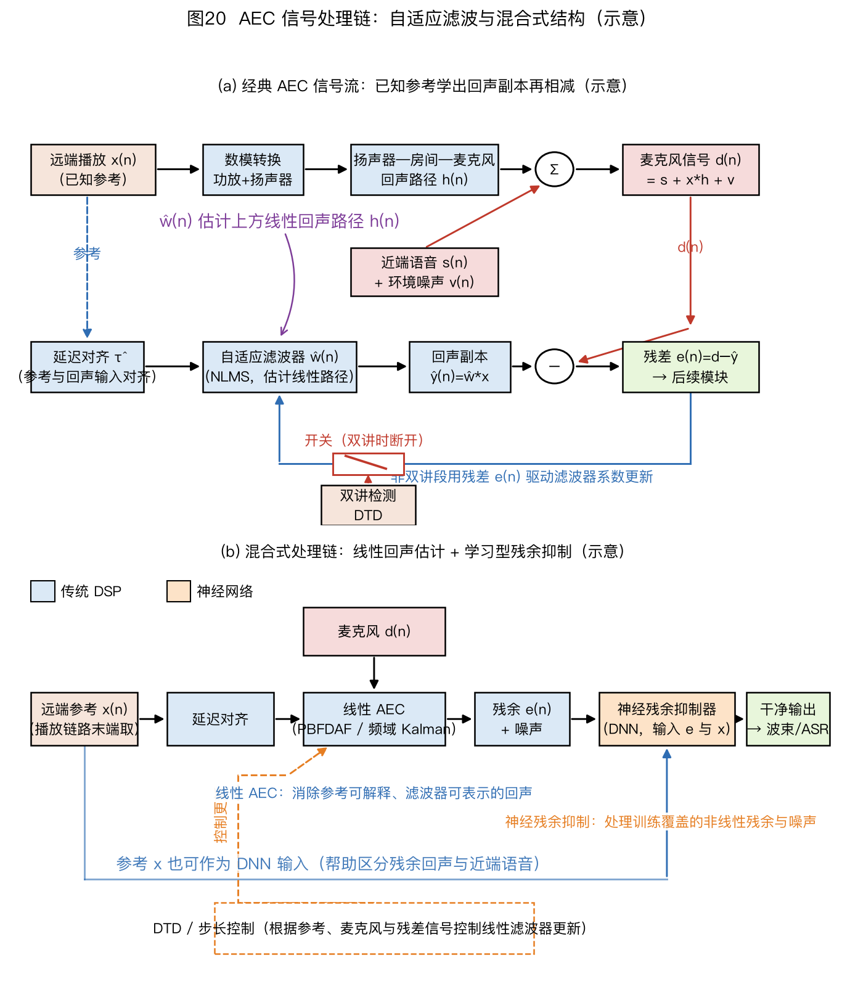
图20（a）显示参考输入、延迟估计与自适应滤波的基本信号流；该子图没有绘出本节所述的 NLP 和 CNG。（b）显示混合式结构，橙色框表示可采用学习型残余抑制的部分。完整产品还需按前述顺序接入 NLP、CNG 和对应的双讲保护。
WebRTC AEC3 架构示例。AEC3 的内部模块和参数会随源码版本及构建配置变化，下面依据 WebRTC 官方源码提交 0467d2b91cc20b9b001c2bbb73d43ea6b2491f3e 说明一种开源实现的分工，不把内部常数当作产品规格：
- 分块流水处理：采集和参考按内部子块推进。子块大小、采样率转换和缓冲共同决定延迟，需针对所用源码版本实测；
- Render Buffer：保存远端参考历史，为延迟估计和路径滤波提供候选数据。所需覆盖范围由播放、采集和传输链路的实测延迟及抖动确定；
- 降采样参考—采集延迟估计：锁定版本的
echo_path_delay_estimator.cc对降采样的播放与采集数据运行匹配滤波，再由 lag 聚合器选择延迟；block_processor.cc据此调整参考缓冲。它不是比较下述 refined/coarse 两个消除滤波器的残差来搜索延迟；路径或输出设备切换后还要检查缓冲和重新对齐过程； - refined/coarse 双滤波器：两组滤波器使用不同更新增益。该版本的
echo_remover.cc比较 refined/coarse 残差功率、回声功率等量来选择线性输出并平滑切换；subtractor.cc在 coarse 连续较差时还会用 refined 系数重置它。这是线性回声抵消和更新控制，不是上条的延迟候选搜索，也不能概括成检测到双讲就统一冻结； - 频域抑制器和舒适噪声：线性部分之后按频带控制残余回声，并在需要时生成与背景相符的舒适噪声。具体增益规则应以所用版本源码和目标设备测试为准。WebRTC
echo_path_delay_estimator.cc、block_processor.cc、subtractor.cc、echo_remover.cc。
线性输出不是只能靠内部日志取得。 在上述锁定版本，公开配置 EchoCanceller::export_linear_aec_output 默认关闭；启用后，经 APM 处理可调用 GetLinearAecOutput() 并检查其布尔返回值。该接口导出约 10 ms、16 kHz、单声道的线性段数据，比较最终输出前须按采样率、通道及处理延迟对齐。失败返回不能用全零代替成功输出。
set_stream_delay_ms() 的请求值在该版本会被截到 0～500 ms，越界给警告；调试时应检查返回状态、实际设置值和播放/采集时间戳，而不是只记录请求参数。锁定版本 APM 公开头文件
接口故障的反例。 SpeexDSP 的异步 playback/capture 队列在启动或参考欠载时可能把原始麦克风帧直接送出；这段输出不说明自适应算法已经收敛或失败。先检查参考帧是否在采集帧前进入、首帧是否被丢弃、欠载次数及通道交织顺序。多麦或多扬声器测试应给各物理通道注入不同位置的脉冲，不能给所有通道同一脉冲后宣称顺序正确。SpeexDSP mdf.c 锁定源码、工业接口核对
排障清单（回声消不掉，按顺序查）：
- 检查参考抽头位置：优先选择包含混音、音量、均衡和限幅等已知数字处理的最晚可用参考。抽头后的时变或非线性变换可能留下线性滤波器无法表示的残余；见 §6.1.11；
- 检查延迟估计：逐步注入已知延迟并记录 ERLE 和路径估计。失配仍在滤波器覆盖范围内时，影响取决于剩余可用抽头和路径能量分布；失配超过滤波器跨度时，滤波器无法覆盖完整路径。图30（b）只展示本书仿真的一个越界例子；
- 检查双讲冻结或步长缩减：否则近端语音会使路径估计偏离（见图30（c））；
- 比较算法前先排除接口问题：确认参考内容、取点、延迟覆盖、削波和双讲控制，再在同一录音与统计窗口上比较算法。收敛时间和稳态 ERLE 应相对项目基线判断，不使用通用秒数或 dB 阈值。
6.1.10 多参考 AEC 模型与去相关选型
单参考 AEC 假设只有一路播放；立体声外放、双扬声器和多分区播放属于多参考问题。模型是否可辨识取决于参考声道之间的相关性和各条回声路径，不能用固定 ERLE 损失概括。
三种多参考实现组织。前两行都估计单个麦克风的多路播放回声，差别在系数怎样更新，不能把它们当作两种不同的物理传播模型：
| 模型 | 结构 | 可辨识性 | 资源关系 | 适用条件 |
|---|---|---|---|---|
| 逐参考分支、共享总残差 | 各分支预测先相加，再以同一个 $e=d-\sum_r\hat y_r$ 更新各分支；可用各路自己的归一化分母 | 忽略跨参考统计量时，强相关输入仍会使路径估计病态 | 滤波与状态近似随参考路数增加 | 单个麦克风接收多路播放，需核对总残差与更新控制 |
| 联合 MISO（多输入单输出，Multiple-Input Single-Output） | 拼接多路参考回归向量，以总预测与共同残差联合估计多条路径 | 仍受拼接参考相关矩阵条件数限制 | 同时维护多组路径；全矩阵方法还维护交叉统计量 | 需要显式处理参考间相关性时 |
| MIMO 阵列联合 | 多参考和多麦克风联合估计，例如广义回声与干扰对消（GEIC）和扩展多通道维纳滤波（extended Multichannel Wiener Filter，MWFext） | 可联合利用跨通道统计量，但仍需满秩激励 | 随参考数、麦克风数和状态维度增加 | 需要联合回声与空间干扰处理 |
参考声道越多，待估参数越多；声道内容越相关，正常方程越接近奇异。去相关用于改善相关矩阵的条件数。
为什么不能把两个单参考输出直接相加。 本书取无噪声、单抽头、同一参考 $x_1=x_2=x$，麦克风观测 $d=x$。若让两个单参考滤波器各自用完整的 $d$ 当目标，它们都可能得到系数 1；合成预测为 $x+x=2x$，总残差反而是 $-x$。
正确的多参考误差先减去两路预测之和，即 $e=d-\hat h_1x_1-\hat h_2x_2$；此例只要求 $\hat h_1+\hat h_2=1$，能完全抵消当前回声，却无法由完全相同的两路参考唯一辨识各自路径。参考内容后来若改变，这种非唯一性还会影响预测。Gilloire，IWAENC 1997，§2给出共同残差与立体声相关性的原始模型。
去相关方法对照（以立体声 AEC 为例）：
| 方法 | 做法 | 可能的副作用 | 验证方法 |
|---|---|---|---|
| 半波整流（half-wave rectification） | 各声道施加不同的轻微非线性 | 谐波失真、声像变化 | 同时测参考相关矩阵条件数、远端单讲残余和主观音质 |
| 时变相位调制 | 各声道施加独立的慢变全通相位 | 瞬态或声像可能变化 | 在语音与音乐材料上分别盲听，并检查路径跟踪 |
| 独立小频移 | 各声道施加方向或大小不同的微小频移 | 音乐可能出现拍频或音高扰动 | 扫描移频量，比较可辨识性与可闻失真 |
| 低电平去相关噪声注入 | 各声道叠加独立、整形后的低电平噪声 | 底噪升高 | 按目标播放电平测条件数、底噪和听感 |
是否启用去相关，应根据目标节目材料在工作频带内的相干函数、相关矩阵条件数和路径估计稳定性判断。确定候选方法后，逐步增加处理强度，并同时复测远端单讲残余、近端单讲失真、双讲质量和主观音质；处理强度的上限由项目听测与任务指标共同决定。
多参考相关性的数字例子。 两路等功率参考的归一化相关矩阵为 $\begin{bmatrix}1&\rho\\\rho^*&1\end{bmatrix}$。本书由其特征方程得到特征值 $1\pm|\rho|$；当 $|\rho|\lt 1$ 时，二范数条件数为 $(1+|\rho|)/(1-|\rho|)$。$\rho=0.95$ 和 $\rho=-0.95$ 都得到 39，$|\rho|=0.6$ 时降为 4；$|\rho|=1$ 时矩阵奇异。
反相参考与同相参考一样可能缺少独立信息，不能因相关系数为负就判断容易辨识。去相关能改善条件数，但不能直接换算成固定的 ERLE 增益；实际收益还取决于声道内容、回声路径、去相关失真和估计器。
6.1.11 播放链参考抽头位置及其对 ERLE 的影响
播放链路是一串变换：应用音源 → 混音 → 音效/均衡（Equalization，EQ）→ 自动增益控制（Automatic Gain Control，AGC）/动态范围压缩（Dynamic Range Compression，DRC）→ 限幅 → 重采样 → 编解码 → 数模转换器（Digital-to-Analog Converter，DAC）→ 功放 → 扬声器。
参考抽头越早，抽头之后未反映在参考中的处理越多。固定、线性时不变、因果且能在已对齐的同一采样时钟上用有限长 FIR 表示的处理，可以并入式(6-1)的等效路径；跨独立时钟的重采样或持续采样率偏移不能直接并入同一固定 FIR，需检查 §6.1.13 的 SRO 诊断。时变增益、削波、丢帧和编解码伪影也可能造成难以稳定建模的残余。
抽头点对照表（T1 最早、T5 最晚；实际系统可能只能访问其中一部分）：
| 抽头点 | 位置 | 抽头之后的变换 | 主要风险 | 检查方法 |
|---|---|---|---|---|
| T1 应用层原始音源 | 应用输出 | 混音、系统音量及全部后处理 | 参考可能缺少其他应用声音和时变处理 | 切换音源、通知音和音量，观察参考是否同步变化 |
| T2 混音后、音效前 | 混音器输出 | EQ、AGC/DRC、限幅及后续处理 | 时变增益或限幅造成失配 | 分别旁路后处理，比较残余与路径估计 |
| T3 音效后、AGC 前 | 均衡后 | AGC/DRC 增益包络、限幅及后续处理 | 增益变化和削波未进入参考 | 扫描播放电平并记录残余、削波和恢复过程 |
| T4 限幅后、编解码前 | 限幅器输出 | 重采样、编解码和传输链路 | 延迟抖动、丢帧或编码伪影 | 注入已知信号并记录端到端延迟分布和残余 |
| T5 最晚可用数字参考 | DAC 前的可访问节点 | DAC、功放、扬声器和声学路径 | 模拟与声学非线性仍不在参考中 | 作为候选基线，与电压/电流参考及更早抽头对照 |
在可访问的节点中，通常优先评估包含更多数字处理且时间戳可靠的较晚参考。
若音量增益发生在抽头之后，线性区内播放增益变化会等比例改变等效路径增益；收敛时间和 ERLE 变化量需在目标实现上测量。抽头位于时变增益之前时，可以比较包络补偿与改取较晚参考两种方案。
无线或外接播放链路还要实测延迟分布、突变和丢帧，并让延迟搜索与缓冲覆盖所需分位数，而不是采用固定抖动范围。
云端若拿不到与麦克风时钟对齐、且能代表实际播放链路的参考，就不能直接运行依赖该参考的线性 AEC；此时可在端侧完成 AEC，云端再做无参考或弱参考的声学回声抑制（Acoustic Echo Suppression，AES）。另一种方案是上传对齐后的参考波形或特征，但会增加上行带宽、同步、隐私和故障恢复负担。选择哪种划分应同时记录参考取点、时间戳精度、传输抖动与端云总延迟，不能把“云端只做 AES”当作架构定律。
6.1.12 测试覆盖与验收矩阵
下面的矩阵用于组织测试，不给出通用认证阈值。若项目受某项通信、车载或主观听测标准约束，应记录标准号、版本、测试序列、设备配置和适用 profile，并直接采用该版本规定的判据。
| # | 测试项 | 条件 | 记录结果 | 阈值来源 |
|---|---|---|---|---|
| C1 | STFE 收敛后线性段 ERLE | 远端单讲，排除初始收敛段 | 均值或分位数、统计窗口、输入与线性输出取点 | 目标设备线性段基线 |
| C2 | STFE 最终输出 | 与 C1 使用同一录音 | 最终残余、AECMOS 回声维和听测结果 | 目标应用的可闻回声要求 |
| C3 | 初始收敛 | 规定冷启动状态和播放材料 | 从播放开始到达到项目基线的时间分布 | 交互延迟与任务要求 |
| C4 | 路径突变重收敛 | 规定移动、遮挡或设备切换动作 | 恢复时间、成功比例和暂态最大残余 | 目标场景允许的中断时间 |
| C5 | 双讲语音质量 | 规定 SER、说话人和双讲序列 | 近端质量、内容保持与残余回声 | 选定标准或项目听测基线 |
| C6 | 双讲回声泄漏 | 与 C5 同一批样本 | AECMOS 回声维及真人听测 | 固定模型版本和听测协议 |
| C7 | STNE 近端损伤 | 近端单讲，AEC 开关对照 | 频谱、客观质量、下游任务与听测差异 | 旁路基线和允许损伤 |
| C8 | 沉默期稳定性 | 覆盖项目最长空闲段并在期间改变路径 | 系数漂移及重新播放后的恢复过程 | 最长会话和使用状态 |
| C9 | 非线性播放 | 覆盖目标播放电平和材料，并含双讲 | 线性段残余、最终残余和近端损伤 | 设备声学过载与音质要求 |
| C10 | 时钟偏移 | 覆盖实际播放与采集时钟域及最长会话 | 延迟漂移、重采样状态和残余趋势 | 时钟规格和最长运行时间 |
| C11 | 输出切换与丢帧 | 执行目标系统支持的切换和故障注入 | 延迟重搜、恢复时间和音频连续性 | 交互与通话连续性要求 |
| C12 | 适用的认证指标 | 按所选标准及 profile 生成条件 | 标准要求的指标和统计过程 | 所选标准的明确版本与条款 |
| C13 | 下游任务 | AEC 旁路与启用使用同一批输入 | 唤醒、识别或通信任务的差异 | 任务基线与允许退化 |
发布或产线回归可以从上述矩阵抽取一组稳定测试，但抽样长度、重复次数和验收判据要来自项目的历史分布、器件公差和故障成本，不能从本教程复制固定数值：
| # | 回归项 | 快速方法 | 判定依据 |
|---|---|---|---|
| A1 | 参考内容与取点 | 查信号图，并改变音源、通知音、音量和后处理 | 参考包含预期播放内容；未覆盖的处理已有补偿或风险记录 |
| A2 | 延迟覆盖 | 读取延迟估计日志，并注入链路抖动和切换 | 搜索范围与滤波器跨度覆盖目标延迟分布并留有设计余量 |
| A3 | STFE 双取点 | 固定远端单讲样本，分别记录线性段和最终输出 | 两个取点分别达到对应项目基线，口径见 §6.1.8 |
| A4 | 双讲 | 使用固定且版本化的双讲测试集 | 近端损伤、残余回声和滤波器稳定性均满足项目基线 |
| A5 | 路径突变 | 执行可重复的移动、遮挡或切换动作 | 在规定时间内恢复到项目基线，并报告失败比例 |
| A6 | 真人听测 | 按预先定义的样本量、随机化和播放协议盲听 | 使用所选协议的统计判据，不以单个听众意见代替结果 |
| A7 | 自动多指标复核 | 固定模型、软件版本和输入集 | 只用于回归；阈值由版本基线和人工复核结果确定 |
6.1.13 AEC 诊断方法与 NLP 工作点
诊断表（按“征兆 → 量测 → 工具 → 判据”排列）：
| # | 征兆 | 量测 | 工具/信号 | 判断依据 |
|---|---|---|---|---|
| D1 | ERLE 低于项目基线 | 参考与真实播放是否一致 | 对比参考与实际播放内容；查抽头点 | 改变音源、音量或后处理时，参考应包含相同变化或有明确补偿 |
| D2 | ERLE 不再上升 | 延迟失配 | 互相关峰、图30（a）和延迟日志 | 峰位置应落入滤波器覆盖范围；多峰时检查多路径与周期信号 |
| D3 | 双讲后恢复慢 | 自适应控制 | DTD 判决、步长和路径失配日志 | 恢复过程相对同一设备的远端单讲基线无异常停滞 |
| D4 | ERLE 随播放电平出现平台 | 非线性占比 | 多个播放电平的 ERLE 与失真对比 | 电平降低后残余非线性同步减小，见图31的仿真机制 |
| D5 | 断续/闷罐/背景声突然消失 | NLP 过度抑制 | 旁路 NLP；有独立、时间匹配的干净近端参考且满足标准适用条件时才评估 ITU-T P.863；无此真值时看 AECMOS Other 维、盲听和任务指标。历史回归若保留 PESQ，须固定 P.862 实现与带宽口径 | 旁路后语音改善 → 检查近端损伤并减小过强抑制 |
| D6 | 沉默段背景突变 | CNG 频谱与电平 | 沉默段频谱与真实底噪对照 | 以盲听和频带差异共同调节，不使用统一 dB 阈值 |
| D7 | 长通话逐渐变差 | 采样率偏移（Sample Rate Offset，SRO）累积漂移 | 覆盖最长目标会话的延迟估计曲线 | 残余速率差应满足相干性和任务指标要求 |
| D8 | 切歌或切设备后失效 | 延迟突变 | 对齐切换事件的 ERLE 与延迟轨迹 | 在项目规定时间内恢复，并检查搜窗是否覆盖新路径 |
D1～D3检查参考、延迟和双讲控制；D4用于判断非线性残余；D5～D6检查近端语音和舒适噪声；D7～D8检查长时漂移和链路切换。
ITU-T 已于 2024 年 1 月 5 日删除 P.862、P.862.1、P.862.2 和 P.862.3，并指向 P.863、P.863.1 与 P.863.2；因此 PESQ 只宜用于需要延续既有 P.862 基线的历史回归，新测试应先确认 P.863 的带宽、预处理和适用条件。ITU-T P.862 状态页、ITU-T P.863
本书使用的真实 AEC Challenge 播放环回与麦克风配对录音没有独立干净近端语音真值，不能直接对它们计算 P.863 的近端语音质量。ITU-T P.863.1要求按参考语音与退化语音的规定条件使用该指标；AECMOS 自动分数也不能代替真人听测。
采样率偏移（Sample Rate Offset，SRO）。 播放与采集时钟相差 10 ppm 时，16 kHz 下每秒相差 $16000\times10^{-5}=0.16$ 个采样；1 小时累积 576 个采样，即 36 ms。延迟重搜只能重新选择整数或分数延迟，不能消除持续增长的速率差；长通话通常要估计 SRO 并对参考做重采样补偿。若硬件允许，共用时钟可以从源头消除该偏移。
NLP 工作点（NLP = 非线性处理器，nonlinear processor）。NLP 对各频带施加增益；抑制增强时，残余回声可能降低，但近端语音损伤、背景抽动和断续风险会上升。工作点不能只用一个最大抑制深度定义：
| 调节方向 | 需要控制的量 | 同时观察 | 回退条件 |
|---|---|---|---|
| 近端保护优先 | 提高增益地板，减慢或限制双讲期抑制 | 近端频谱、下游识别、双讲听感 | 仍有回声时再逐步增强抑制，而不是一次设置固定档位 |
| 回声抑制优先 | 在远端单讲置信度高的频带降低增益 | 残余回声、音乐噪声和背景连续性 | 出现近端内容丢失、抽动或背景突变 |
| 状态自适应 | 用远端活动、双讲置信度和残余估计连续控制增益 | 状态切换时的暂态和恢复时间 | 置信度不足或切换产生可闻伪影 |
| 舒适噪声配合 | 根据真实底噪估计 CNG 频谱与电平 | 沉默段的连续性与噪声颜色 | CNG 可单独辨认或掩盖近端弱语音 |
设置时先固定测试集和取点，从旁路 NLP 开始逐步增加抑制，绘制残余回声、近端质量、下游任务和听测结果之间的曲线。增益地板由曲线的折中点和双讲保护要求确定，不存在通用的 −20 dB 下限。
6.1.14 个性化 AEC 的合规检查
pAEC（个性化 AEC，personalized AEC）在 §6.1.6 定义。注册语音和算法延迟的具体限制应从采用的挑战赛规则、论文实验设置或产品需求中逐项读取，不能把某一届任务条件直接当作通用产品规格。实现时还要检查以下隐私、访问控制与体验问题：
| # | 检查项 | 需要明确的设计 | 不满足的后果 |
|---|---|---|---|
| P1 | 注册数据量与质量 | 在目标距离、噪声和说话变化下绘制注册数据量与错误率曲线 | 嵌入不可靠，双讲时误压目标用户 |
| P2 | 告知与授权 | 按适用法律和产品政策说明用途、处理位置、保留期与删除方式 | 用户无法判断数据怎样使用 |
| P3 | 嵌入存储 | 明确端侧或云侧位置、访问控制、加密和备份范围 | 未授权访问或数据范围扩张 |
| P4 | 首帧可用性 | 若要求从开头保护目标用户，应在首个处理帧前准备嵌入；延迟计入系统关键路径 | 开场语音可能未受个性化条件保护 |
| P5 | 删除与退出 | 定义删除入口、传播范围、完成时间和退出后的普通 AEC 行为 | 用户无法撤回个性化处理 |
| P6 | 低置信度处理 | 规定无注册、低置信度和多人混淆时的旁路、回退或提示 | 误抑制非注册说话人或目标用户 |
| P7 | 共享设备 | 明确多用户配置、权限、切换和未成年人场景的授权流程 | 配置串用或家庭成员被误抑制 |
| P8 | 验收加测 | 在 C5/C6 基础上加入目标用户、非目标用户及多人双讲组合 | 普通双讲测试无法覆盖身份条件错误 |
6.1.15 研究方向
当前研究主要沿四条路线展开：学习自适应步长或卡尔曼统计量、在多通道上联合处理回声与干扰、把声纹条件加入个性化 AEC，以及用感知模型评价残余回声。阅读新工作时要先检查因果性、总延迟、通道数、参考抽头位置、双讲数据构成和指标口径。预印本或挑战赛结果只有在版本、测试集和基线一致时才能比较，因此本章不列无法按这些条件复核的近期性能数字。
图表对照。
图 内容 对应正文 口径提醒 图27 播放参考、路径估计与相减结构 §6.1.1 顶部 DTD 控制自适应滤波器更新 图18 （a）结构 + DTD 开关；（b）NLMS 收敛 + 双讲冻结 §6.1.2 current-first 回归向量与回声卷积索引一致；图中均值来自固定种子和标示窗口 图28 （a）$\hat w$ 逼近 $h$；（b）失配与 ERLE 的关系；（c）不同 $\mu$ 的有限时段轨迹 §6.1.2 无噪声仿真不能证明稳态失调；“0步”是更新前初值 图19 （a）独立仿真线性/非线性场景；（b）按模型假设和处理对象分类 §6.1.4、§6.1.6 （a）支持自身配置下的定量结论；与图31配置不同，ERLE 数值不可横向比较 图20 （a）系统信号流；（b）混合结构 §6.1.9、§6.1.6 橙色模块表示可选的学习型残余抑制 图29 三路均方根包络与远端单讲 ERLE §6.1.2 末、§6.1.5 粉色区是合成近端干扰，非语音；双讲区不绘制 ERLE 图30 （a）有符号互相关的最大正峰约 331 采样；（b）对齐约 28 dB、不对齐约 2 dB；（c）冻结与继续更新 §6.1.5、§6.1.9 设置的纯延迟为 300 个采样；相关峰还受有色参考和多径影响，且该延迟超过 128 抽头滤波器跨度 图31 （a）线性与归一化 tanh非线性路径；（b）同一映射§6.1.4 唯一职责是量化映射曲率与线性模型残差平台；后段均值由图示配置计算 图32 混合处理信号与控制流程 §6.1.6、§6.1.3 $x_a,e$ 进入控制框是图示方案，不给固定性能档次
6.1.16 可执行基线与开源实现边界
本书提供只依赖 NumPy 的时域 NLMS 与 ERLE 基线，源码见 codes/array_tutorial/aec.py，四章联合示例见 codes/examples/ch06_09_baselines.py。在仓库根目录运行：
.venv/bin/python -m codes.examples.ch06_09_baselines
nlms(reference, microphone, filter_length, ...) 接收两个等长一维实数数组，返回残差、估计回声和最终抽头。freeze[n]=True 时仍产生当前样本输出，但不更新抽头；参考回归向量能量为零时也跳过更新。
信号、初始抽头和正则项必须有限，抽头长度必须是正整数；掩码必须为布尔数组，不能用数值或字符串隐式转换。非法输入会明确报错，不继续产生 NaN 残差。
跨块续算的状态不能只存抽头。 在线性卷积中，块首样本仍需要前一块末尾的 $L-1$ 个参考样本。教学类 NLMSState 同时保留当前抽头和这段历史，process() 接受任意长度的连续块；reset() 同时恢复构造时的抽头与历史。状态的 history 按旧到新存放，参与点积的回归向量则按当前到过去排列。
它仍不检测双讲、不搜索参考延迟，也不提供实时线程安全保证。
可运行的流式边界实验用 $h=[0.5,0.25]$、$x=[1,2,3,4]$ 和 $\mu=0$ 验证：完整或在第 2 个样本后切块，已知真值抽头给出的残差都是 $[0,0,0,0]$；若仅续接抽头而把参考历史归零，第二块的首个残差变成 $0.5$。这不是算法收敛失败，而是上一块的 $x[1]=2$ 未参与当前卷积。运行：
.venv/bin/python -m codes.examples.aec_streaming_demo
AEC 算法小实验把四个易误解的边界写成可运行、可与手算逐项比对的 JSON：$N=2,P=2$ 的分区卷积有效半块、两抽头 IPNLMS 的一步权重分配、Geigel 多径误判与零参考门控，以及负极性路径使最大正相关峰选错延迟。运行：
.venv/bin/python -m codes.examples.aec_algorithm_minicases
这些输出是无量纲固定算例，不是完整自适应 PBFDAF、真实录音实验或工业性能测试；相应独立测试在 test_codes_aec_minicases.py。
分区自适应教学实现另把式(6-3)接成有状态的预测—有效区残差—逐频归一化更新—可选时域梯度约束。它只接收完整的 $N$ 样本块，freeze 是调用方给定的每块布尔控制；没有双讲检测、延迟搜索、残余抑制或实时设备接口。运行下面的命令可同时输出两块手算和算例 6-5 的固定种子训练/冻结留出结果：
.venv/bin/python -m codes.examples.aec_partitioned_demo
手算部分同时保留更新前回声预测与残差、约束前候选系数和约束后路径，便于核对非法抽头；留出部分报告两种训练参考下的残差均方和路径误差。测试还检查已知 FIR 的直接时域卷积、短末分区补零、跨调用状态、冻结更新与算例 6-4 的四点 DFT；这不是在真实语音上测出的 ERLE、延迟或收敛速度。教学实现测试与外部 AUMDF 源码须按不同证据级别阅读。
逐样本全矩阵 RLS保存抽头、逆相关矩阵与跨块参考历史；它返回更新前的回声估计和残差。调用方给定的 freeze 会跳过该样本的拟合与遗忘，却继续推进参考历史；未冻结的零参考仍按式(6-8)遗忘。两抽头演示同时输出递推值和独立批量求解，测试还核对切块等价、冻结、重置与非法输入：
.venv/bin/python -m codes.examples.aec_rls_demo
实数短 FIR 全矩阵 Kalman另维护完整路径误差协方差，以 Joseph 形式执行式(6-11)。其 freeze 仍作状态预测和参考历史推进，只跳过麦克风观测更新；若状态转移系数不为 1，冻结并不意味着权重按位保持。两抽头演示输出非对角协方差及丢弃它后的下一步创新方差；这只是已知 $Q,\Psi$ 的算术验证，不是频域分区 AEC：
.venv/bin/python -m codes.examples.aec_kalman_matrix_demo
式(6-10)的单频点卡尔曼数例另可运行：
.venv/bin/python -m codes.examples.aec_kalman_scalar_demo
它固定已知状态和噪声方差，展示实数、复数与较大观测方差三种代入；不包含完整频域滤波器的分区状态、方差估计或双讲判决。独立测试核对分数结果，不把这一个标量更新列为已复现的 FDKF 工业算法。
erle_db() 用 double_talk_mask 明确排除双讲样本；调用者还需用 valid_mask 排除初始收敛段、近端单讲和静音段。函数在输入、输出平均功率上都加上正的 epsilon 地板，因此完美抵消也会报告有限的、随地板而变的 dB 数值，不能把这个上限解释成设备噪声底。该实现用于核对式(6-2)的抽头顺序、冻结语义和指标窗口，不包含延迟搜索、非线性处理、舒适噪声或实时音频接口。
自动测试见 tests/test_codes_aec_wpe_sep_track.py和流式边界测试，覆盖零能量参考、已知路径、路径突变、冻结更新、跨块一致性、空块与复位以及双讲样本不进入 ERLE。接入设备时还必须增加参考断流、纯延迟超过滤波器覆盖范围、削波、多参考高度相关和长时路径漂移测试；异常时的安全回退是冻结自适应更新或旁路线性抵消，而不是继续用不可信残差更新。
外部源码按完整提交保存在 codes/upstream/_downloads/ 的相应项目目录中，具体获取状态见代码获取说明。该目录是按需取得的参考源码，教学算法与第三方代码各自保留来源和许可。研究细节见 AEC 源码研究，其中逐项列出信号接口、读码顺序、状态参数、最小实验与失效实验。
| 方法或组件 | 应从哪段源码读起 | 它实际解决什么 | 复现时单独检查 |
|---|---|---|---|
| MDF/PBFDAF 与 AUMDF | SpeexDSP libspeexdsp/mdf.c，从 speex_echo_state_init_mc() 到 speex_echo_cancellation() |
把长路径拆成频域分区，并调度约束和更新 | 重叠保存有效区、FFT 归一化、分区历史、块尾 |
| 连续自适应控制 | 同文件的学习率与比例更新段 | 根据残余回声、双讲和噪声调节学习率 | Speex 此处不使用独立的二值 DTD，不能套用固定冻结语义 |
| AEC3 线性路径与延迟 | WebRTC aec3/echo_canceller3.cc、block_processor.cc、subtractor.cc、render_delay_controller.cc |
组织参考、时间对齐和线性回声抵消 | 渲染/采集调用顺序、断流、路径变化与重置 |
| AEC3 残余抑制 | residual_echo_estimator.cc、suppression_gain.cc、comfort_noise_generator.cc |
估计未抵消回声、施加增益并控制输出噪声表现 | 同时保存线性残差和最终输出，避免抑制掩盖失配 |
| DTLN-aec | 作者仓库 run_aec.py 与两阶段模型输入/输出 |
用麦克风和播放参考联合估计近端语音 | 采样率、循环状态、块拼接、TFLite 与权重许可 |
| NKF-AEC | 作者仓库 src/nkf.py，仅作来源索引 |
学习卡尔曼更新增益，仍是线性 AEC | 16 kHz、参考延迟补偿；未确认再分发许可 |
| Meta-AF | metaaf/filter.py、core.py 与更新器 |
学习滤波器更新规则并管理分块状态 | 核心库与 zoo/、权重采用不同许可证 |
| 学习步长控制 CTF-AEC | main_train.py → libPython/class_frontend.py → class_aec_ctf.py |
保留线性 CTF 回声模型，由 DNN 控制频率选择性步长与误差归一化 | 无预训练 checkpoint；序列边界重置状态，center_stft=True，不能直接当作跨块流式接口 |
| Integrated AEC/NR | Main.m → Util/Process/process.m → 各 AEC、NR、MWF 与后滤模块 |
在多麦、多扬声器模型中比较联合设计和 AEC/NR 顺序 | MATLAB R2024a；原实验用干净语音与干净回声生成预言活动判决 |
| 原始 FDKF/PBFDKF、NeuralKalman、DeepVQE | 本章原论文与研究文档的结构对应说明 | 分别改变状态统计、学习递推或联合增强 | 未确认的作者官方完整软件不能由同名第三方复现替代 |
SpeexDSP 的 mdf.c 文件头直接说明 AUMDF 与连续学习率控制，并引用 Soo–Pang 的 MDF 和 Valin 的双讲学习率论文；因此 MDF、DTD 控制与残余抑制应分别检查。FDKF 则需要显式核对状态转移、过程噪声、观测噪声和增益递推，不能因为某库含频域 AEC，就把它列为 FDKF 的实现。SpeexDSP 官方源码、WebRTC AEC3 固定版本
三类实现不能只按“消得更干净”排序。 本书 NLMSState 接受连续的等长参考与麦克风数组，需要调用者提供冻结掩码和已对齐参考，适合核对抽头、块边界与算法算术。
锁定版 WebRTC 通过音频处理模块（Audio Processing Module，APM）接入：应用约每 10 ms 交付播放与采集帧，先调用 ProcessReverseStream() 交播放参考，在处理对应采集帧前按缓冲时间设置 set_stream_delay_ms()，再调用 ProcessStream()。APM 外部帧长与 AEC3 内部的 64 样本处理块是不同层级；set_stream_delay_ms() 也不是房间传播时延或回声滤波器长度。WebRTC APM 固定版本接口。
SpeexDSP 的同步 speex_echo_cancellation() 由应用提供已对应的播放帧，不再额外放入两帧播放缓冲；异步 speex_echo_playback()/speex_echo_capture() 自带两帧缓冲，但实际声卡延迟不一定等于该假设。锁定版异步辅助函数只按单通道 frame_size 复制和排队，不能直接作为多通道交织帧的安全接口；多通道应显式配对后使用同步接口，或自行按完整通道跨度管理缓冲。SpeexDSP 固定版 mdf.c 异步函数。
speex_echo_cancellation() 给出核心 MDF 输出；如需预处理器利用残余回声估计，须用 SPEEX_PREPROCESS_SET_ECHO_STATE 绑定回声状态，并把预处理后的输出另存为第二个取点。SpeexDSP 固定版接口、官方手册 §6。
教学 NLMS 提供可解释的线性基线，WebRTC AEC3 与 SpeexDSP 还包含各自的延迟缓冲、更新控制与可选或内置后处理。若只拿 AEC3 最终输出与教学 NLMS 的线性残差计算输入/输出能量比，前者更安静也不能单独证明其线性回声路径估计更准。
同条件实验应锁定播放参考抽头、输入 PCM、采样率、增益、有效采样窗口和状态重置，分别记录远端单讲回声泄漏、双讲近端损伤、路径突变恢复、参考丢块、资源消耗及端到端延迟。取得不到的内部线性取点要标为“未取得”，不能用最终输出冒名顶替。
真实配对录音的一次接口验证。 本书从 Microsoft AEC Challenge 固定版本按同一 GUID 取得一对远端单讲录音：Windows 播放环回 lpb 与麦克风 mic，均为 16 kHz、单声道 PCM16。
将共同的 11.77 s 原样交给锁定版 SpeexDSP 的同步 speex_echo_cancellation()；每帧 160 样本，滤波覆盖 4096 样本，并显式设置、读回 16 kHz。用前 3 s 收敛，余下 [3,11.77) s 计算同一窗口的麦克风输入/输出数字功率比。
正确配对参考时功率下降 5.57 dB，全零参考控制仍下降 3.95 dB，故意把参考推迟 1 s 时则为 −0.23 dB。本片段的输出对参考条件敏感，但不能把 5.57 dB 全部归因于回声路径估计。
原录音没有独立的干净回声或近端真值，输出还可能受 Speex 核心处理的其他作用影响。这些是输入/输出功率变化，不是真值 ERLE，更不能证明双讲时保留了近端语音。文件 SHA-256、半开样本区间、构建配置、零参考控制与复做命令见真实配对实验记录及可运行脚本。录音留在 Git 忽略缓存，不随本书再分发。
真实双讲的控制组。 本书又在 Microsoft AEC Challenge 固定版本中取同一 GUID 的真实 doubletalk_lpb/doubletalk_mic 配对录音，按与上段相同的 16 kHz、160 点帧和 4096 点滤波覆盖运行 SpeexDSP，同样设置正确、全零和晚 1 秒的错误参考。两路原录音分别约 12.26 s 和 12.27 s；共同裁成 196160 点完整帧，[0,3) s 供适应，预先固定 [3,8) s 计量。
在这 5 s 中，麦克风输入对三种输出的总数字功率变化分别是 2.234、2.204、2.200 dB。正确参考的输出功率只比零参考低 0.029 dB。
输入包含近端语音、回声与噪声，却没有对应的干净分量；因此这些数字既不是双讲 ERLE，也不说明近端语音保留或回声泄漏的大小。此处尚未作盲听或逐帧语音标注。
原文件摘要、满幅样本检查、计算口径和可运行脚本见研究记录。录音只放在 Git 忽略缓存，不随教程分发。
同一真实配对输入上的教学 PBFDAF。 为检查式(6-3)的实现离开合成输入后会怎样，本书将上述远端单讲和真实双讲的 lpb/mic 原样交给离线脚本。16 kHz PCM16 除以 32768 后以 float64 处理；块长 160 点、26 个分区（覆盖 4160 点）、步长 0.3、归一化地板 0.05，每块投影合法梯度。参数沿用先前合成教学例，没有针对这两段实录调参。
正确、全零、晚 1 s 三种参考各从零状态运行；没有延迟搜索、双讲冻结或残余后滤。Speex 的 4096 点请求在固定版内部上取整到 26 个 160 点分区；相同的抽头容量并不意味着相同的更新和输出链。
在相同的远端单讲 [3,11.77) s 评分区，正确参考、全零参考、晚 1 s 参考的麦克风输入/教学残差总数字功率变化分别为 −6.700、0、−18.017 dB；在真实双讲 [3,8) s 分别为 −6.363、0、−1.665 dB。负号表示输出总功率反而更大，不应删除不利结果或把零参考的 0 dB 当作算法有效的证据。晚参考条件的部分 float64 样本还超出了 PCM16 可表示幅度，因此脚本不剪裁、不保存这些输出为音频。
这次对照说明当前无延迟补偿、瞬时功率归一化的教学配置对这两条录音不稳健；它不证明 PBFDAF 这一类方法不适用。输入没有分离的干净回声或近端真值，三个 dB 数字不是 ERLE，也不是近端保留率。Speex 核心输出经过其他处理且量化成 PCM16，不能把它与这里的 float64 线性残差按大小排产品名次。原文件 SHA-256、每个 1 s 区间结果和运行命令见研究记录。
已知近端注入的受控检查。 为了把“输出变小”和“近端信号通过处理器”分开，本书对同一播放参考 $x$、基线麦克风 $d_0$，分别从新状态运行处理器 $A$：一次输入 $d_0$，一次输入 $d_0+s$。这里 $s$ 是逐样本已知的外加近端波形，$W$ 是预先固定的注入区间。定义输出增量、原样投影增益和不拟合时延或增益的相对平方误差为
$$ \begin{aligned} \Delta[n]&=A(x,d_0+s)[n]-A(x,d_0)[n],\\ g_{\Delta}&=\frac{\sum_{n\in W}\Delta[n]s[n]}{\sum_{n\in W}s[n]^2},\\ E_{\Delta}&=\frac{\sum_{n\in W}(\Delta[n]-s[n])^2}{\sum_{n\in W}s[n]^2}. \end{aligned}\tag{6-15} $$
$g_{\Delta}=1$ 且 $E_{\Delta}=0$ 表示这两个输出之差在该区间逐样本等于注入波形；只看 $g_{\Delta}$ 不能发现额外失真。若算法状态随 $s$ 改变，$\Delta$ 还包含状态变化造成的回声残余差异，不能叫“分离出的近端语音”，也不能把 $E_{\Delta}$ 叫作双讲 ERLE。
两个比值都要求评分区间内 $\sum_{n\in W}s[n]^2>0$；若已知注入信号在该区间全为零，实验应报无效，而不是把分母加一个小数后继续评分。
第一组使用本书 2 s 合成样本：已量化麦克风减去已量化近端，再把近端原样加回，PCM 域相加严格成立且无削波。近端只在 [1.2,1.8) s 非零。
教学 NLMS 两次都按已知掩码冻结时，式(6-15)给出 $g_{\Delta}=1$、$E_{\Delta}=0$；继续更新则为 0.936 和 0.322。相同夹具交给 SpeexDSP 同步核心，正确参考下为 0.878 和 0.208；零参考对照为 0.879 和 0.204。
后两项接近，不能把增量偏差全归于回声滤波：Speex 核心自身还执行 DC 陷波、预加重、去加重和 PCM 量化。这组近端是合成谐波，不是真人语音或实测房间。
第二组把 Microsoft AEC Challenge 同一 GUID 的另一次真实近端单讲麦克风录音，按 PCM 原样叠加到真实远端单讲麦克风的 [3,8) s；播放参考不变，叠加前后都从新状态运行。它是半合成双讲，不是官方同时录制的真实双讲，也不具备干净近端语音真值。
注入在 3 s 和 8 s 处直接切入、切出，没有淡入淡出；两个边界附近可能产生拼接瞬态。因此这一组用于检验固定波形的输出增量，不把它当作自然双讲的听感样本或泛化性能。
Speex 正确参考下 $g_{\Delta}=0.922$、$E_{\Delta}=0.140$；零参考对照为 0.923、0.128。这里只能说已知外加波形经过两次运行后的输出增量与原波形有差异，不能据此断定真实近端语音的主观保真。
与 WebRTC AEC3 的对照边界。 固定版本的官方 audioproc_f 可分别输出 AEC3 的线性段和最终段。其 WAV 模拟器默认先处理采集帧再处理播放帧；对同帧 Speex 同步接口作比较时，需要显式改为先播放参考、后采集。
两者还要核对流延迟设置、额外高通、取点和输出采样率，不能把 AEC3 最终输出与 Speex 核心输出的功率差解释成线性滤波器优劣。本机已从固定提交构建官方 audioproc_f，按同帧先参考后采集、0 ms 报告流延迟，在上述两对真实录音上分别保存线性和最终输出；详细构建参数与输出摘要见研究记录。
同一评分区间内，AEC3 的远端单讲线性/最终输出相对麦克风输入分别下降 7.685/15.731 dB；真实双讲分别下降 3.384/3.851 dB。这些是总数字功率变化，不是真值 ERLE；双讲没有独立干净近端真值，因而也不能由“更安静”推断近端保真。
同输入合成真值实验。 独立脚本以种子 20260924 生成一条 16 kHz、6 s 的 PCM16 播放参考；其量化样本通过已知 5 抽头路径 $[0.70,0,-0.25,0,0.12]$ 形成回声，并再次量化。麦克风底稿只含这条已知回声，不加背景噪声；另在 [3,4) s 原样注入独立生成的已知近端波形，先用 32 位整数检查 PCM 相加无削波。
两次运行分别输入“底稿”和“底稿加近端”，播放参考、采样率、PCM 增益与样本索引保持一致；每次重建处理状态。[0,2) s 留作适应，[2,3) s 是远端单讲评分区。
教学 NLMS 使用 32 抽头、步长 0.4，并凭合成真值在 [3,4) s 冻结更新；这是一种理想控制，不是检测器。SpeexDSP 使用锁定版同步核心、160 点帧和 4096 点请求滤波长度，不接外部残余抑制预处理器。AEC3 使用锁定构建的 audioproc_f，同帧先送参考再送麦克风，设置报告流延迟为 0 ms，并分别导出线性段与最终段。
四个输出取点及更新控制不相同，因此下表只呈现各自条件下可复核的观测量，不给统一性能排名。
评价前还用一条独立的全零参考、单个 10000 PCM 计数脉冲检查输出时间位置。本机固定构建中，Speex 核心首个非零与峰值样本都和输入同位；AEC3 线性段晚 64 个采样（4 ms），最终段晚 128 个采样（8 ms）。
下表先按这些单独测得的固定延迟配对输出和参考，再用式(6-15)计算注入增量；没有在评分区拟合延迟或增益。远端单讲列是已知量化回声功率与总输出功率之比；只在教学 NLMS 的纯线性残差中，才可把它按该无噪声模型解释为线性回声消除量。
| 处理输出 | 脉冲测得固定延迟 | [2,3) s 回声功率／对齐后总输出功率 |
[3,4) s $g_\Delta$ |
[3,4) s $E_\Delta$ |
|---|---|---|---|---|
| 教学 NLMS，真值冻结 | 0 样本 | 79.27 dB | 1.000 | 约 0 |
| SpeexDSP 同步核心 | 0 样本 | 37.12 dB | 0.982 | 0.027 |
| AEC3 导出线性段 | 64 样本 | 60.58 dB | 0.964 | 0.241 |
| AEC3 导出最终段 | 128 样本 | 30.63 dB | 0.193 | 0.763 |
若不补偿 AEC3 的固定输出延迟，同采样点计算的线性段 $g_\Delta$ 只有 0.199，不能据此直接说近端幅度只保留两成；补偿后为 0.964。最终段补偿后仍与已知注入相差较大，但这包含 AEC3 输出处理和两次运行状态的差异，不能把 $E_\Delta$ 当作独立近端语音的失真度或双讲 ERLE。NLMS 的约 79 dB 由精确匹配、无噪声线性路径和真值冻结产生，不能外推到实录。
脚本输出输入、二进制和 PCM 输出摘要、未舍入数字与未经延迟补偿的对照；合成输入和第三方处理输出只在运行时的临时目录中创建，不充当新的真实录音或发布音频。固定二进制与接口来源分别见SpeexDSP mdf.c及WebRTC APM 接口。
上述实验完成了同一合成输入上的接口及指标对照，尚无三者相同内部线性取点与相同自适应控制的性能比较。前述真实配对录音仍缺独立干净回声和近端真值；无播放参考的 DEMAND 环境录音也不是 AEC 实录。
设备链路方面，目前只枚举到本机内置麦克风与扬声器；端点存在不等于已经测过声学回路、实际参考抽头或独立设备时钟漂移。实机验收须另记录播放和录制的时间戳、参考位置、缓冲事件与听测条件。
学习步长控制的官方固定版本适合回答“网络究竟替换了什么”：线性回声估计仍由 CTF 自适应滤波器完成，网络输出用于调节更新。源码逐帧运行，不等于部署接口已经支持任意分块续算；前端使用居中 STFT，并在每个序列重新初始化滤波器。没有匹配训练数据和权重时，只能核对结构与状态，不能把论文结果写成本仓库实测。
Integrated_AEC_NR 固定版本可用于比较 AEC→NR、NR→AEC 和联合扩展结构，但 Util/Process/process.m直接由分解后的干净期望语音与干净回声生成活动判决。这是受控研究条件，不是设备输入。源码采用 MIT；仓库的 ReadMe.md另列示例音频来源，代码许可不能替代音频许可。
最小的工业对照实验可以保持输入录音不变，依次检查参考正常、固定延迟、参考丢块和路径突变四种情况。每种情况同时记录线性段回声、线性残差、抑制后输出、更新控制与恢复时间。双讲段另看近端语音损伤；只看最终能量降低，不能区分成功抵消和过度抑制。外部系统还应固定源码、构建选项、帧长、参考抽头、允许延迟和状态重置规则，不能用本节教学 NLMS 的测试代替这些验收。
6.1.17 常见误区与自测题
常见误区：
- 参考抽头过早；
- 双讲段仍计算 ERLE；
- 双讲时加大步长；
- 静音时继续更新；
- 把 AEC 固定放在时变波束之后；
- 靠增加线性抽头处理扬声器非线性；
- 只看自动分数而不听双讲语音。
各项对应的模型和检查方法见 §6.1.4、§6.1.5、§6.1.7、§6.1.8 和 §6.1.11。
自测题（按下方相同编号核对答案）：
- 默写三项模型并说出每个符号的含义。
- 换算 16 kHz 下 64 ms 与 128 ms 对应的抽头数。
- 在播放链路上标出抽头点 T1–T5，并说明怎样用参考完整性、延迟和残余测量选择抽头。
- 手推 LMS 到 NLMS 的归一化三步。
- 复算算例 6-1，验证残差关系 $e'\approx(1-\mu)e$。
- 说出步长 $\mu$ 的大小取舍，并设计目标信号上的扫描方法。
- 已知残余能量比 0.0063 与 0.0001，分别算出 ERLE。
- 写出 Geigel 判决的参考历史窗，并解释阈值 0.5 对应的线路回声假设为什么不能直接当作声学 AEC 的固定阈值。
- 对着图31 说清非线性平台从哪来。
- 按算例 6-2 的计数规则比较时域 NLMS、无约束 PBFDAF 和逐分区约束 PBFDAF；再说明为什么这些比值不能用于比较同配置的频域多抽头 NLMS 与 PBFDAF。
- 在 SER=-20 dB 下算一笔减法与乘法的账。
- 为 A3、A4 和 A6 分别写出测试输入、取点、统计量与项目阈值来源。
- 说清双讲冻结与连续小步长的取舍。
- 对三种阵列方案各说一句选型话。
- 画出 AEC3 示例中的参考缓冲、延迟估计、自适应滤波、残余抑制与舒适噪声关系。
- 说出客观 ERLE、主观 MOS 和自动 AECMOS 各自评价什么，并说明双讲时为什么不能用 ERLE。
- 令 $L=4096$、采样率 16 kHz，分别取 $N=64,128,256$，算出分区数、FFT 长度和一块新输入的时长。哪一列不等于端到端算法延迟？
- 按算例 6-4 重算四点 IFFT 的第 2 个合法抽头。解释为什么固定频点的复 NLMS 类比不足以描述投影后的完整更新。
- 运行算例 6-5 的代码；若纯音训练段残差已很小，为什么还要冻结并换宽带参考测留出残差？本例能否证明真实语音 AEC 的 ERLE？
- 取单分区 $N=2$、四点重叠输入 $[1,2,3,4]$、合法抽头 $[1,2]$，麦克风有效块等于真实输出。分别算正确有效误差和错误的“零填充观测谱减完整循环输出谱”，说明哪一种会误更新。
- 对两点、无重叠 DFT，令输入前后两帧为 $[1,2]$ 与 $[3,5]$、真实路径为一拍延迟。计算后一帧输出零频点，并检验只使用输入零频点是否足够。
自测题答案
- 式(6-1)为 $d=s+x*h+v$。$d$ 是麦克风观测，$s$ 是近端目标，$x$ 是已知播放参考，$h$ 是回声路径，$v$ 是背景噪声。要减去的是 $x*h$，不是整个 $d$。
- $16000\times0.064=1024$ 抽头；$16000\times0.128=2048$ 抽头。纯延迟也会占用抽头跨度，因此不能只按混响拖尾配置长度。
- T1 为应用音源；T2 为混音后音效前；T3 为音效后 AGC 前；T4 为限幅后编解码前；T5 为最晚可访问数字参考。逐点改变音量、音效和输出设备，检查参考是否包含实际播放内容、时间戳是否可靠、延迟能否覆盖，再比较同一远端单讲窗口的残差。位置图和限制见 §6.1.11。
- 对 $J=e^2$ 求梯度得 $-2e\vec x$；沿负梯度得到 $\Delta\vec w=\mu'e\vec x$，其中系数 2 并入步长；令 $\mu'=\mu/(\|\vec x\|^2+\varepsilon)$ 得式(6-2)。零参考能量时跳过更新。
- $\|\vec x\|^2=1.5$，更新量是 $[0.4/1.5,0.2/1.5,-0.2/1.5]^\top$；重算估计回声为 0.4，后验残差为 0.4。式中的“减半”针对同一输入的后验检查，不是下一样本的输出保证。
- 较大步长可加快适应，也会提高稳态波动和双讲误更新风险。保持输入、路径变化、噪声、初值和评价窗口不变，扫描步长；同时比较收敛过程、稳态残差和双讲近端损伤，不只选 ERLE 最大者。
- $10\log_{10}(1/0.0063)=22.0066\ldots$ dB，约 22.0 dB；$10\log_{10}(1/0.0001)=40$ dB。两个比值必须来自远端单讲回声能量。
- 参考窗为 $x_a(n),\ldots,x_a(n-L+1)$，取其中绝对值最大者。线路中的约 6 dB 衰减给出约 0.5 幅度比；声学多径可叠加，路径增益也不同，不能沿用同一阈值，见 §6.1.5。
- 图31的非线性映射产生线性参考组合无法完全表示的分量；路径估计收敛后这些分量仍留在残差。平台随输入、非线性强度、路径及统计窗口而变，不是设备类别的固定上限。
- 在算例 6-2 的核心变换与复乘口径下，逐样本时域 NLMS 的朴素分项为 3072 次实乘法/样本；无约束 PBFDAF 的对应部分为 $28672/128=224$，逐分区约束为 $94208/128=736$，部分计数比值约为 13.7 和 4.17。若再按教学代码逐块重算全部复频点的 $|X|^2$，PBFDAF 两项至少分别增加 32 次/样本，成为 256 和 768；这仍不是总量。相同分区、变换、归一化与约束的频域多抽头 NLMS 是这里的 PBFDAF 更新，不存在由改名带来的第二份加速收益。两边未计的操作、FFT 优化和硬件成本不同，不能把部分计数比值当作实测加速比。
- SER 为 −20 dB 意味着回声能量是近端的 100 倍。相位正确的 $0.9y$ 副本留下 $0.1y$，残余回声能量变为原来的 0.01，理想残余 SER 到 0 dB；统一乘增益会同时缩放近端和回声，SER 不变。存在相位误差时要重新计算复数差。
- A3 用固定远端单讲数据，在线性段和最终段分别取点并报告同窗口残余；A4 用规定 SER 与双讲区间的数据，同时报告近端损伤、回声和系数稳定性；A6 使用随机化、盲听的样本和播放协议，报告所选主观统计量。阈值来自明确版本的标准或目标设备历史基线，本题没有通用合格数字。
- 冻结可以阻止检测到的双讲进入梯度，但期间路径变化也不能跟踪；小步长保留跟踪能力，也保留误更新风险。两者都需要检查检测滞后、错误判决和双讲结束后的恢复。
- 逐通道 AEC 保持每路声学路径与波束权重解耦，但需要更多状态和计算；波束后 AEC 只运行一路，但要跟踪等效路径变化；联合方法利用共同统计模型，代价是更复杂的统计量和约束。按 §6.1.7 的输入条件选择并测试。
- 播放参考先进入历史缓冲和延迟搜索，对齐参考参与自适应滤波，麦克风减去回声估计形成线性残差；残余估计控制后续抑制，舒适噪声用于缓和背景突变。refined/coarse 更新和输出选择必须按固定版本源码检查，见 §6.1.9。
- ERLE 度量规定远端单讲窗口的回声能量衰减；平均意见分（Mean Opinion Score，MOS）来自规定协议下的真人评分；AECMOS 是模型预测的回声和其他可闻退化分。双讲输出包含应保留的近端语音，直接拿总输出功率计算 ERLE 会混淆回声泄漏与近端保留。
- $N=64,128,256$ 分别给出 $P=64,32,16$，$2N=128,256,512$ 点，以及 $N/16000=4,8,16$ ms 的新输入积累时间。FFT 长度是“历史加当前”的运算长度，不是新输入等待时间；积累时间也不是含设备缓冲与调度的端到端延迟。
- 四个候选频点为 $3/10,(1+2\mathrm j)/6,-1/2,(1-2\mathrm j)/6$。逆变换的第 1 个时域位置（从 0 起）为 $[3/10+(-2+\mathrm j)/6+1/2+(-2-\mathrm j)/6]/4=1/30$。逐频分母不同，随后清零后半时域位置又跨频点混合，因此单频点向量式只描述投影前候选。
- 单一纯音只覆盖有限的输入方向；训练段低残差可能来自只拟合了这条纯音，换宽带输入后才暴露未辨识的路径方向。冻结留出测试阻止算法利用测试块继续修正权重。合成无噪声 FIR、有真值系数和人为冻结均不等于真实设备录音，不能据此报告真实语音 ERLE。
- 四点循环输出为 $[9,4,7,10]$；有效输出 $[7,10]$ 与麦克风一致，所以正确误差 $[0,0]$、误差谱为零。错误写法的时域逆变换是 $[0,0,7,10]-[9,4,7,10]=[-9,-4,0,0]$，非零项全来自本应丢弃的前半块。
- 前帧频点为 $X_{0,m-1}=3$、$X_{1,m-1}=-1$，本帧为 $X_{0,m}=8$、$X_{1,m}=-2$。真实延迟输出本帧为 $[2,3]$，故零频点是 $5$；按跨频式计算为 $(3-(-1)+8+(-2))/2=5$。若删掉 $X_1$ 两项则为 $(3+8)/2=5.5$，与真实输出不符。
可运行练习 E06-01～E06-06
下面六题由 exercises_enhancement.py 的 run_exercises() 复算。在仓库根目录运行 .venv/bin/python -m codes.examples.exercises_enhancement，按稳定 ID 查 JSON 结果。音频与共同播放增益见练习及音频手册。这些数例不替代设备收敛或听感评测。
-
E06-01：脉冲是否能让全部抽头收敛？ 取 $x=[1,0,0]$、$d=[0.8,-0.2,0.1]$，3 抽头、零初值、$\mu=0.5$、$\varepsilon=0$。逐样本写回归向量、先验残差和最终抽头。
解答：回归向量依次是三个标准基；各方向只有一次更新，先验残差仍依次是 $0.8,-0.2,0.1$。最终抽头为 $[0.4,-0.1,0.05]$，恰为路径一半。
完整参考回归向量归零后才停止更新；当前参考样本为零时，历史样本仍可能触发更新。单次方向覆盖不等于持续激励或完全收敛。
-
E06-02：两点延迟能由两抽头表示吗？ 取 $x=[1,0,0,0]$，纯延迟回声 $d=[0,0,1,0]$，$\mu=1$。比较 2 抽头和 3 抽头的最终权重。均使用最近样本在前的回归向量。
解答：2 抽头只包含时延 0 和 1，回声出现时参考回归向量已为零，因此残差仍为 $[0,0,1,0]$。3 抽头覆盖时延 2，更新后得到 $[0,0,1]$。首次回声样本仍先输出再更新；最终权重正确不代表已经消掉过去的样本。参考对齐和长度的关系也见 Speex 官方排障说明。
-
E06-03：双讲冻结保护了什么？ 令 $x=[1,1,1,1]$、$d=[1,1,2,2]$，单抽头初值 0.9，$\mu=0.5$、$\varepsilon=0$；后两样本是已知双讲。比较后两样本冻结与持续更新，并只在前两样本计算 ERLE。
解答：前两次权重更新为 0.95、0.975。冻结后的残差为 $[0.1,0.05,1.025,1.025]$；继续更新会得到 1.4875、1.74375，把近端成分错误计入路径。前两样本残差均方为 $(0.1^2+0.05^2)/2=0.00625$，ERLE 约为 22.04 dB。
本题真值双讲标记是人为给定的控制输入，不是双讲检测器；这两个启动样本只用于检验算术，不能作为稳态 ERLE。
-
E06-04：相减为什么反而更响？ 在单频点上，真实回声为非零 $y$，副本为 $e^{\mathrm j\phi}y$，两者幅度相同。分别取相位误差 0°、60°、180°，计算残余能量与原回声能量之比及理想 ERLE。
解答：本书从复数减法得到 $|y-e^{\mathrm j\phi}y|^2/|y|^2=2-2\cos\phi$。三个能量比分别是 0、1、4；理想 ERLE 分别为正无穷、0 dB、约 −6.02 dB。180° 副本其实是 $-y$，相减得到 $2y$，所以能量翻为四倍。
这是已知副本的代数检查，不是自适应器收敛结果。代码用
null表示零残差对应的无限理想分数，避免在 JSON 中写非有限数字；真实系统还受噪声、量化和模型误差限制。 -
E06-05：噪声底能否掩盖继续改善的回声抵消？ 取 $y=[1,1,-1,-1]/2$、$v=[1,-1,1,-1]/20$，麦克风为 $d=y+v$。理想抵消后只剩 $e=v$，计算麦克风输入/输出能量比。
解答：$y^\top v=0$，$\|y\|^2=1$、$\|v\|^2=0.01$，故输入能量为 1.01、输出为 0.01，$10\log_{10}(101)\approx20.04$ dB。此时真实回声残余为零，但含背景噪声的输入/输出测量仍为有限值。
本书使用正交序列使交叉项精确为零；普通短录音不保证该条件。这个数字是含噪取点的测量结果，不是回声分量 ERLE 的理论上限，也不是设备只能抵消约 20 dB 的证据。
-
E06-06：纯单频参考经过三次非线性后，最佳线性副本还剩什么？ 采样率为 16 kHz，取 32000 点、500 Hz、幅度 0.4 的参考 $x[n]=0.4\sin\theta_n$，其中 $\theta_n=2\pi(500)n/16000$。令麦克风中的纯远端回声为 $d[n]=x[n]+2x^3[n]$，没有传播滤波、近端语音或噪声。用整段最小二乘标量 $g=\langle x,d\rangle/\langle x,x\rangle$ 构造线性副本 $\hat d=gx$，求残差和 ERLE。
解答：由 $\sin^3\theta=(3\sin\theta-\sin3\theta)/4$，有
$$d[n]=0.496\sin\theta_n-0.032\sin3\theta_n\text{。}$$
两秒记录恰含 1000 个 500 Hz 周期，500 Hz 与 1500 Hz 正弦在这个窗口内正交。因此 $g=0.496/0.4=1.24$，$\hat d[n]=0.496\sin\theta_n$，残差为 $e[n]=-0.032\sin3\theta_n$。理论功率为 $P_d=(0.496^2+0.032^2)/2=0.12352$、$P_e=0.032^2/2=0.000512$，所以
$$\mathrm{ERLE}=10\log_{10}(P_d/P_e)=10\log_{10}(241.25)\approx23.8247\ \mathrm{dB}\text{。}$$
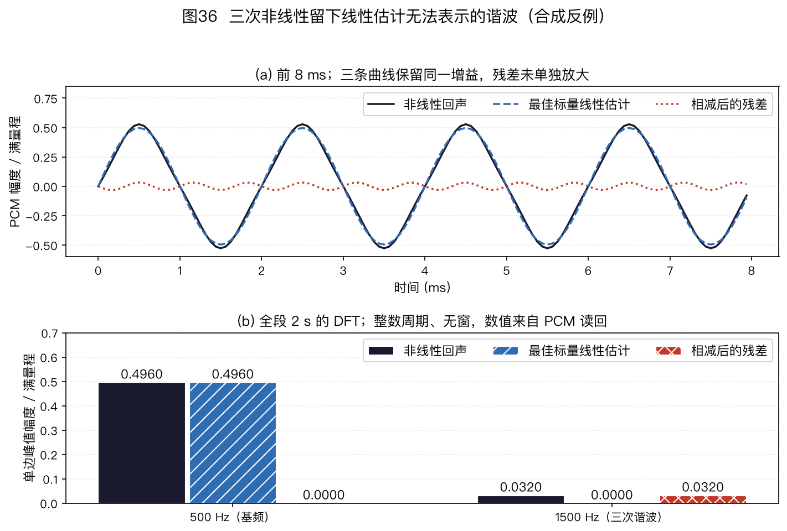
图36(a)比较回声、共同最小二乘增益得到的线性副本与残差；图36(b)读取配套 PCM 后显示 500 Hz 和 1500 Hz 的离散周期幅度。上面的功率和 ERLE 来自未量化解析序列，PCM 读回值会有量化误差。本题的标量估计不是在线自适应器，但它给出了所有线性时不变滤波器都无法跨频率产生 1500 Hz 分量的稳态反例；改变输入频谱、非线性或统计窗口后，数值不会保持不变。
边界练习 E06-07～E06-10。 下面四题可用 aec_algorithm_minicases.py 的 JSON 字段逐项核对：E06-07 对应 overlap_save，E06-08 对应 ipnlms，E06-09 对应 geigel，E06-10 对应 delay_polarity。先独立手算，再运行程序；这些题只检验运算和判决边界，不是工业算法性能实验。
-
E06-07：循环卷积的哪半块能用？ 取 $N=2,P=2$、$h=[1,2\mid3,4]$、$x=[1,2,3,4]$，负时刻输入为零。写出第 1 块 $[1,2,3,4]$ 与第一分区 $[1,2,0,0]$ 的四点循环卷积，再加上延迟一个块的第二分区，指出哪些样本可用。
解答：第一分区循环结果为 $[9,4,7,10]$，第二分区从上一块 $[0,0,1,2]$ 得到 $[8,0,3,10]$。各自前半块含循环折返，不用于当前块；后半块相加为 $[7+3,10+10]=[10,20]$。连同第 0 块的 $[1,4]$，与直接时域卷积一致。这只检查固定路径的分区卷积，不含自适应系数更新。
-
E06-08：IPNLMS 的混合系数如何改变一步更新？ 取 $\hat w=[0.8,0.2]$、$x=[1,1]$、$d=1.2$、$\mu=1$，忽略本题非零分母上的极小正则项。分别取式(6-5)的 $\kappa=-1,0,1$，求 $g$ 与 $\Delta w$。
解答：先验误差为 $0.2$，三组 $g$ 依次为 $[0.5,0.5]$、$[0.65,0.35]$、$[0.8,0.2]$；分母均为 1，因此 $\Delta w$ 依次为 $[0.1,0.1]$、$[0.13,0.07]$、$[0.16,0.04]$。$\kappa=1$ 且权重全零时比例项也全零，需要均匀分量或抽头下限才可启动；单步数字不能推出长期性能排名。
-
E06-09：没有近端语音，Geigel 为什么报双讲？ 两抽头 $h=[0.4,0.4]$、参考窗 $[1,1]$、近端为零，门限为 0.5。算判决比；再令参考窗全零，判断能否沿用同一公式。
解答：远端单讲时 $d=0.8$，参考峰值为 1，比值为 $0.8>0.5$，故裸判据误报。全零参考使分母为零，应先门控参考活动，不形成数值判决；把零参考强行除以小数会改变判据含义。
-
E06-10：负极性回声怎样骗过最大正峰？ 令 $x=[1,0,0,0]$、$d=[0,0,-1,0]$，定义非负滞后相关 $r_{xd}[k]=\sum_n x[n]d[n+k]$，$k=0,1,2,3$。分别用最大有符号值、最大绝对值选延迟。
解答：相关序列为 $[0,0,-1,0]$；只取最大有符号值会在并列零峰中按首个位置选 $k=0$，而最大绝对值选 $k=2$，与真实纯延迟一致。多径或周期参考仍可能使绝对峰有歧义，设备测试还要结合时间戳与宽带激励。
子带、IPNLMS、RLS 与 Kalman 练习 E06-11～E06-20。 先按式(6-4)～式(6-12)及本节 Haar 定义手算，再运行 aec_advanced_exercises.py 的 run_exercises() 对照稳定 ID；独立测试用分数与解析边界核对答案。这十题是无量纲模型题，不把合成样本或人为提供的双讲真值当成设备检测结果。
-
E06-11：低带输入能否产生高带回声？ 两点 Haar 分析下，取 $x=[1,1\mid0,0]$、$d[n]=x[n-1]$。写出两个块的输入高带 $u_1[m]$、输出高带 $v_1[m]$；解释只用独立同带滤波器为何不能精确表示。
解答：输入两块高带均为零。延迟后 $d=[0,1\mid1,0]$，所以 $v_1=[-1/\sqrt2,+1/\sqrt2]$。任意只读 $u_1$ 的线性滤波器输出仍为零；缺的是 $u_0\to v_1$ 交叉项。这不是实际滤波器组在噪声下的收敛测量。
-
E06-12：删掉交叉项会改变什么？ 对图37(b) 的 $x=[1,0,0,0]$ 和一拍延迟，分别写出完整两带映射与只保留其精确同带项时合成的四个时域样本，求两输出之差。
解答：完整映射为 $[0,1,0,0]$；只保留同带项为 $[0,0.5,0,0.5]$；缺失项为 $[0,0.5,0,-0.5]$。这是已知路径的系统表示对照，不能把两输出之差当作训练后的 AEC 残差或 ERLE。
-
E06-13：正则项没有省略时如何更新 IPNLMS？ 取 $\hat w=[0.8,0.2]$、$x=[1,1]$、$d=1.2$、$\mu=1$、$\kappa=0$、$\varepsilon_g=2$、$\delta=0.25$。求先验误差、$g$、分母和 $\Delta w$；再取 $\kappa=-1$，指出与哪一个 NLMS 正则项相等。
解答：$e=0.2$，$g=[0.45,0.30]$，$\sum g=0.75$，更新分母 $0.75+0.25=1$，$\Delta w=[0.09,0.06]$。$\kappa=-1$ 给 $g=[0.5,0.5]$、分母 1.25、$\Delta w=[0.08,0.08]$；NLMS 取 $\varepsilon=L\delta=0.5$ 时同样得到 $0.2[1,1]/2.5$。若把 $g$ 错误地重新归一成和为 1，第一组答案会改变。
-
E06-14：为什么不能直接从纯比例零权重起步？ $L=2$、$\hat w=[0,0]$、$\kappa=1$、$\varepsilon_g>0$，任取非零参考和残差。按式(6-5)计算更新方向。
解答：均匀项为零，比例项的分子也都为零，因此 $G=0$、$Gx=0$，两个抽头都不更新。$\varepsilon_g$ 和 $\delta$ 防止除零，却不能凭空产生方向；保留 $\kappa\lt 1$ 的均匀项或明确的权重下限才能启动。这个零初值反例不代表所有 PNLMS 初始化策略都会停住。
-
E06-15：RLS 的“记忆长度”换成秒是多少？ 忽略冻结，取 $\lambda=0.99$，求一个旧观测经过 100 次更新后的相对权重；分别假定每次更新间隔为 $1/16000$ s 和 10 ms，求历时。
解答：相对权重是 $0.99^{100}\approx0.3660$。逐采样更新 100 次历时 $100/16000=0.00625$ s；每 10 ms 更新一次则历时 1 s。同一个 $\lambda$ 不能脱离更新间隔解释为固定秒数，也不能把 100 次更新直接称为 100 个独立样本。
-
E06-16：双讲若误当路径变化会怎样？ 依本节已知真值反例，首个观测后 $w=10/11$、$P=1/11$。第二次 $x=1,d=3$ 中真实路径仍为 1、近端成分为 2。分别求固定 $\Psi=0.1$、已知双讲时设 $\Psi=10$、理想冻结的第二次权重。
解答：先验残差为 $23/11$。低方差增益 $10/21$，权重 $440/231\approx1.905$；高方差增益 $1/111$，权重 $10/11+23/1221\approx0.928$；冻结保持 $10/11\approx0.909$。
后两种控制依赖外部真值，不能由该数例推断设备上的双讲检测正确率。若路径同时变化，冻结也会推迟跟踪。
-
E06-17：RLS 递推是否真等于目标函数的解？ 取算例中的 $R_1=\bigl[\begin{smallmatrix}7/4&1\\1&5/4\end{smallmatrix}\bigr]$、$p_1=[5/2,2]^\top$。不用式(6-8)的增益，直接求行列式并解正规方程。
解答：$\det R_1=(7/4)(5/4)-1=19/16>0$。二阶矩阵求逆或消元得 $w_1=[18/19,16/19]^\top$，与递推一致。这个一致性依赖式(6-6)的初始约束和两次观测；换目标或初始矩阵时不能沿用答案。
-
E06-18：舍去 Kalman 非对角协方差会怎样？ 取本节第一次观测后的 $P=\bigl[\begin{smallmatrix}5/6&-2/3\\-2/3&4/3\end{smallmatrix}\bigr]$，第二个参考向量 $x=[-1,1]^\top$、$\Psi=1$。分别用完整 $P$ 和只保留对角元素的 $P$ 求创新方差 $S=x^\top Px+\Psi$。
解答：完整交叉项给 $S=9/2=4.5$；丢掉交叉项仅得 $S=19/6\approx3.167$。前一观测把两个抽头联系起来，下一次不能无条件当作独立。此题只证明递推值不同，不证明完整矩阵在任意录音上胜过对角近似。
-
E06-19：未知一拍路径的交叉带第一步怎样更新？ 取 $x=[1,1\mid0,0]$、$d=[0,1\mid1,0]$、$K=2$、初始 $W=0$、$\mu=1$、$\varepsilon=1$。只处理第 0 块，求式(6-4)的两个先验误差、分母及四路当前块权重；指出哪个系数证明高输出带可以读取低输入带。
解答：输入带为 $[\sqrt2,0]$，输出带为 $[1/\sqrt2,-1/\sqrt2]$，先验预测为零；分母 $1+2=3$。更新后 $W_{0,0,0}=1/3$、$W_{1,0,0}=-1/3$，两个以高输入带 $j=1$ 为源的权重仍零。$W_{1,0,0}$ 是低输入带到高输出带的交叉项。它是一步权重，不是当前块的后验回声抵消分数。
-
E06-20：两带模型是否必然省抽头、省等待？ 时域物理路径有 $L=4$ 个非零抽头，采用本节两点 Haar 全交叉状态，不施加时域 FIR 结构约束。求精确表示需要的最小块阶数 $K$、独立权重数，以及至少需要等多少个后续样本才可输出当前两点块。
解答：$K=\lfloor4/2\rfloor+1=3$，四条输入—输出带路径各有 3 个权重，共 $4K=12$ 个，而物理 FIR 只有 4 个抽头。收到块内第一个样本后，还须等第二个样本，因此至少有 1 个原采样的成块等待；滤波器组和设备链路可能再增加延迟。这个抽头与等待计数不能代替设备上的乘法、内存或端到端时延测量。
6.1.18 延伸阅读
- Hänsler & Schmidt, Acoustic Echo and Noise Control（Wiley 2004）——AEC 领域的经典大部头，从自适应理论到免提终端工程全覆盖。Wiley 在线版
- Benesty, Gänsler, Morgan, Sondhi & Gay, Advances in Network and Acoustic Echo Cancellation（Springer 2001）——可用于阅读频域自适应与立体声 AEC 的背景；IPNLMS 参见前文所列的 2002 年方法与 2004 年参数化，不能把 2001 年著作当成它的原始出处。
- Enzner、Buchner、Favrot 与 Kuech，Acoustic Echo Control（Elsevier 2014）——载于 Academic Press Library in Signal Processing 第 4 卷、第 30 章，807～877 页；该书 4.30.2～4.30.6 小节分别讨论抵消与后滤、多通道、非线性和真实系统应用。出版社章节页
- Breining et al., IEEE SPM 1999——四大难点的经典出处，一节一引，入门必读（链接见 §6.1.1）。
- 中文参考：《语音识别服务实战》第 3.4 节，侧重工程实现。
§6.1.9～§6.1.18讨论了 AEC3 的信号流、多参考相关性、参考抽头、验收、诊断、个性化处理、代码基线和研究方向。部署时应先确认参考信号与延迟对齐，再检查自适应控制和残余抑制。
第 7 章讨论 WPE 去混响，第 8 章讨论多说话人分离。
📄 回首页